| お庭番望月蒼司朗参る!5 溜まった穢れと大祓 (ビーズログ文庫アリス) | |
| 流 星香 & 榊 空也 | |
| エンターブレイン (2011) | |
お庭番望月蒼司朗参る！
溜まった穢れと大祓
流星香

電子版 ビーズログ文庫
本作品の全部または一部を無断で複製、転載、配信、送信すること、あるいはウェブサイトへの転載等を禁止します。また、本作品の内容を無断で改変、改ざん等を行うことも禁止します。
本作品購入時にご承諾いただいた規約により、有償・無償にかかわらず本作品を第三者に譲渡することはできません。
本作品を示すサムネイルなどのイメージ画像は、再ダウンロード時に予告なく変更される場合があります。
本作品の内容は、底本発行時の取材・執筆内容にもとづきます。
本作品は縦書きでレイアウトされています。
また、ご覧になるリーディングシステムにより、表示の差が認められることがあります。
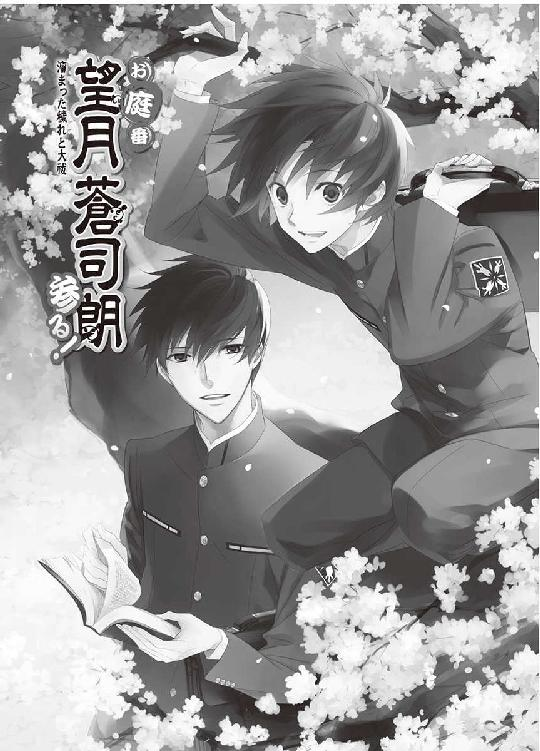
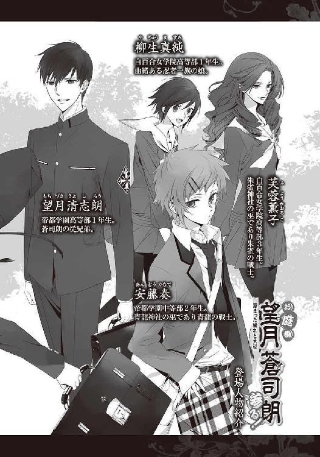
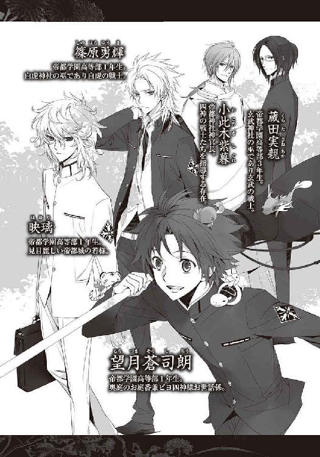
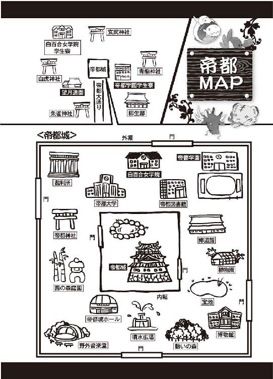
１
首都帝都、華やかなる中心地、帝都城下は四方を壁で囲まれた、強固な結界領域である。
ここは国宝や重要文化財などの、帝都で最も貴重で高価な伝統工芸品がたくさん集まる場所であり、その制作に携わる優秀な職人が大勢住んでいる。
年末近くになると、気持ちよく新年を迎えるため、家宝や仏具の修理を職人に依頼する者が大勢いて、金銀を扱う細工師の元には、たくさんの貴重品が集まる。その中でも、腕のいい職人のところに持ちこまれる品物は、国宝級・重要文化財級の貴重品ばかりである。
そして、金目の物が集まる場所には、悪い人間が目をつける。
「やい、てめぇら、動くんじゃねぇ！」
まだ日も高い真っ昼間から、強引に塀を乗り越えて押し入った六人組の強盗が、宝具師と屋敷にいた者たちを刀で脅し、一ヶ所に集めた。
「帝都神社の法具はどこだ!?」
強盗たちの目当ての品は、帝都の所蔵品の中でも、最も高く売り飛ばせるだろう宝物だ。警備の厳しい帝都城公園にある帝都神社よりも、城下にある宝具師の屋敷のほうが襲いやすい。
「ここにあることはわかってるんだぜ」
凶悪な殺気を放つ賊に、若い宝具師の青年は一歩前に出た。
「────蔵にあります」
「鷹彬！」
宝具師・東洲斎忠保は叱りつけるように息子の名を呼んだが、鷹彬は振り返ることなく言う。
「下手に隠せば、死人が出ます」
頑なに口を噤んだなら、強盗はきっと実力行使に出る。すんなり情報を聞きだすために、最初の一人は見せしめとして、残虐に殺害されるだろう。
だが、強盗は皆を集めただけで、縛り上げることもせず、目隠しもしなかった。目撃証言があれば、強盗はすぐに捕まる。用が済めば皆殺しにするつもりで、強盗は押し入ったのに違いない。刃が振り下ろされるのは時間の問題だろうが、それは少しでも遅いほうがいい。
「蔵の扉には、特殊な錠前があります。私たちでなければ開けられません」
進み出る鷹彬に、強盗たちはお互いに目配せする。
強盗は六人。東洲斎忠保邸にいたのは、女子供老人を含めて七人。強盗が刃物を突きつければ、容易に取り囲める人数だ。
「よし、お前が蔵を開けろ」
刀の刃先を振って、強盗は先に立って蔵まで歩くよう、鷹彬を促した。
「余計な真似するんじゃねぇぞ」
「わかってます」
鷹彬は背に刃を突きつけられながら、蔵に向かって歩きだす。
「お前たちも行くんだ！」
「ぐずぐずするな！」
強盗たちは残った東洲斎忠保たちにも、移動するよう促した。東洲斎忠保が背に庇っていて見えなかったのだが、後ろにいた少年は、一人だけ装束が違っていた。
紺の法被を着た、小柄な少年に気づいた盗賊の一人が、その少年の腕を摑む。
「何だ？ 出入り業者か？」
顔だちや容姿を見れば、血縁者でないことは明白だ。少年の着ている法被には、望月造園と染め抜かれていた。職人と呼ぶには年若すぎるので、まだ見習いだろう。作業か使いで、今日はたまたま東洲斎邸にいたようだ。車寄せには、小さなショベルカーもある。
ぐいと腕を摑まれた少年の身体は、軽々と東洲斎忠保の後ろから引き出された。東洲斎忠保は、ぎょっと目を剝く。
「おやめください！ その方は......！」
「ガタガタ騒ぎやがると、このガキからぶっ殺すぞ！」
怒鳴る強盗の目に本気の色を見て、東洲斎忠保は息を吞む。
強盗に腕を摑まれ、刀を突きつけられながらも、見習い庭師の少年は、にこりと微笑む。
「オレなら平気です。心配しないでください」
緊迫した東洲斎忠保の声にぎくりとし、思わず足を止めて振り返った鷹彬を、真後ろにいた強盗が急かす。
「止まってんじゃねぇ！ さっさとしろ！」
時間稼ぎのような真似はさせないと強盗に睨みをきかされ、鷹彬は真っ直ぐ土蔵に向かった。
土蔵の扉につけられた、頑丈な鋼鉄の大きな錠前に開いた鍵穴は見せかけだけで、鍵はない。寄木細工の秘密箱のようになった特殊な錠前を外して、鷹彬は土蔵の扉を開く。
大きな扉で守られた頑丈な土蔵の中には、厳かに注連縄が張られていた。
壁の高い位置にある明かり取りの小窓から差しこむ光を浴び、整然と収納されているたくさんの黄金製の貴重品が眩く煌めく。
「......こいつぁすげぇや......！」
金目の物を見慣れているはずの強盗たちが、思わずごくりと生唾を飲んだ。どれを盗み出しても、一財産の価値のある立派な品物ばかりだ。
裏社会では、明らかに盗品とわかる品物も、当たり前のように売買されている。盗品であっても、価値ある物を欲しがる客がいるので、世の中から盗難事件がなくなることはない。
値段のつけようもない、由緒ある霊験あらたかなありがたい宝物も、欲に目の眩んだ強盗たちにとっては、名工の手による希少で芸術的価値の高い、年代物の財宝にすぎない。
「帝都神社の法具はどれだ!?」
「────奥から二番目の棚にあります」
鷹彬が指差すと、見習い庭師の少年に刀を突きつけて人質にしている男と、見張りの一人を残し、強盗たちは土蔵の中に駆けこんだ。
「触らないほうが身のためですけど」
鷹彬の言葉など聞こえない様子で、強盗たちは行く手を阻むように張られた邪魔な注連縄を、血曇りのある穢れた刀で断ち切って、どかどかと土蔵の奥へと進む。
紙垂を踏みにじり、お清めをした神聖な土蔵に土足で踏みこむ強盗の姿に、東洲斎忠保は苦虫を嚙み潰したような顔になった。
「何と罰当たりな......！」
身を震わせて憤慨する東洲斎忠保を、見張りをしていた強盗がせせら笑う。
「俺たちは神様なんて、信じちゃいねぇんだよ！」
神をも畏れぬ強盗の態度に、土蔵の入り口の横に立った鷹彬は、溜め息をついた。
「それはぜひ、認識を改めたほうがいいですね」
呆れ果てた鷹彬の様子に、見習い庭師の少年を人質に取っている強盗が目を吊り上げる。
「わかったようなこと言ってんじゃねぇ！」
「神様だとか天罰なんて、迷信だよ、迷信！」
鼻で笑った見張りの男に、東洲斎忠保は言った。
「この帝都は、今も四神様の加護を受けております」
「はっ！」
厳かに断言した東洲斎忠保を、見張りたちは馬鹿にして笑った。
両手に宝具を抱え、土蔵から次々に強盗たちが出てくる。
「これが帝都神社の宝具だな？」
「噓をついても、すぐにわかりますよ」
にこりと鷹彬が微笑む。
その言葉は、本来なら強盗たちが言うものだ。
預かり物の宝具の盗難を許すなど、宝具師にとって絶対にあってはならない。職人としての実力以前の、恥となる不名誉な事件であり、職人生命に関わることだ。状況を甘受しているわけではないのに、東洲斎忠保や鷹彬には、焦燥や口惜しさの色は微塵も見えなかった。
宝具を目の前で奪われようとしている者にあるまじき、妙な雰囲気を強盗たちが感じ取った次の瞬間────。
強盗たちの抱えていた宝具から、轟と音を立てて炎が燃え上がった。
「うわっ！」
「なっ、何だ!?」
「あ、熱い、熱いっ......！」
「い、息が、っ......！」
突如、青赤白黒、四色の激しい炎に包まれ、火柱と化した四人に、見張りと人質を取っていた強盗たちは、ぎょっとする。
「どうした!?」
「おいっ!?」
何の物音もしなかった。東洲斎忠保たちは、誰も動いていない。それなのに、いきなり炎が上がった。
信じられないことが、目の前で起こっている────！
「や、やい、どうなってるんだ!?」
「火を消せ！ 早く！」
盗み出した宝物に、何か仕掛けがなされていたのだと考えた見張りが怒鳴り、人質を取った強盗が、少年の喉に刃を向ける。
「おやめなさい！」
東洲斎忠保が声をあげ、人質を取った強盗に向かって思わず手を伸ばす。制止の言葉は、確かに強盗に向けて発せられたものだったが、その意味合いは強盗の予想とは違っていた。
強盗は人質の少年の喉を搔き切ろうと、刀を動かし────。
次の瞬間、金色の炎に包まれた。
「ぐあぁっ！」
火を噴いて燃え上がる強盗から、拘束を逃れた人質の少年はするりと離れる。強盗の握っていた刀が、がしゃりと音を立てて地面に落ちた。
炎に包まれ苦悶する仲間たちの姿に、ただ一人残った見張りの男が、慄く。
「お、お前ら、何を......、何をしやがった!?」
後退さろうとして足をもつれさせ、尻餅をついた見張りの男は、裏返った声で叫ぶ。何が何だかわからないが、このとんでもない事態は、起こるべくして起こったのだとわかった。
やれやれと、鷹彬は肩を竦める。
「だから、言ったでしょう。この帝都は、今も四神様の加護を受けているのですよ」
だからこれは────、『神罰』。
「ぐあぁっ！」
「熱い熱いぃっ！」
猛然と激しさを増す炎に包まれた強盗たちは苦しみもがいて悲鳴をあげ、手に入れた宝物を放り出してそこらじゅうを転げまわる。
「ち、畜生っ！」
見張りをしていた強盗は、ぎりっと歯嚙みをして身を起こすと上着を脱ぎ、それで叩いて仲間に点いた火を消そうとした。しかし炎は弱まるどころか、助けようとした男にも、襲いかかるように燃え移った。
「うわあぁっ！」
瞬く間に爆発的に燃え広がる炎に、強盗が恐怖の悲鳴をあげる。
だがどれほど勢いよく燃え上がろうとも、炎は彼ら六人以外に燃え広がることはなかった。強盗たちは激しく炎の爆ぜる音を聞き、身を焦がす苛酷な灼熱の苦しみに苛まれているが、傍目にはただ勢いがあるだけの、音のない火の塊だ。強盗たちの目には、無惨に焼け爛れゆく恐ろしい自分たちの姿が見えているが、強盗たち以外には彼らが炎に包まれ苦悶していても、その身が燃え落ちる様子はまったく見えない。
強盗たちを包む炎の色は、四神それぞれが象徴する色だ。金色の炎は────、帝都城を守護する奥庭の四神が、ひとつとなって象徴する色。
小柄な庭師見習いの少年が護人を務める、奥庭の四神の与える、処罰の炎。
強盗が全員炎に包まれたのを確認し、蒼司朗にくっついていた四神が次々に顔を出す。
「ミギャ」
「キュイ」
「チュピッ」
「「（しゅー）」」
蒼司朗にくっついている帝都城を守護する奥庭の四神は、どれもちびっちゃい手乗りサイズで、ぽやぽやの赤ちゃんだ。ありがたい威厳よりも、愛くるしさ大爆発の『ピヨ四神』である。蒼司朗の法被や髪の陰から、身を隠していたピヨ四神がひょこひょこと顔を出す姿は、高校一年生の蒼司朗が学年一小柄な少年であることとあわせて、ミニマムで微笑ましい。
赤ん坊サイズでも聖獣の四神様なのだから、ピヨ四神は強盗など恐れるに足りない。しかし強盗たちは穢れた殺気を放っていたので、嫌って身を隠していた。
「ちょっと怖かったよな」
顔を覗かせたピヨ四神に蒼司朗は優しく微笑みかけ、小さな頭をそっと撫でたり、喉をのんのんと撫でる。
「助けてくれて、ありがとう」
蒼司朗を傷つけようとした強盗が金色の炎に包まれたのは、このピヨ四神の力だ。
「ミギュン」
「キュア」
「チュン」
「「（しゅー）」」
いい子いい子と可愛がられて、くふんと鼻を鳴らしたピヨ四神は、気持ちよさそうに目を細めた。
炎に包まれ、身を焦がす苦痛に苛まれながら、強盗たちは恨みがましい目で東洲斎忠保たちを睨む。（神罰の炎は人間に消せるものではないが）強盗であれ、目の前で焼け死のうとしている人間を、見殺しにしようとしている────！
「くそぉ......！」
「テメェら......！」
人型の炎と化しながらも、憤激した強盗たちはそれぞれの手に刀を握った。
「テメェらも、死ねぇっ......！」
死なば諸共に────！
「蒼司朗様！」
強盗の手放した宝物を素早く家人に拾い集めさせた東洲斎忠保が、鷹彬に持ってこさせた枝打ち斧を、庭師見習いの少年に差し出す。
「はい！」
庭師見習いの少年・望月蒼司朗は、愛用の枝打ち斧をしっかりと受け取る。
蒼司朗の邪魔にならないよう、東洲斎忠保は鷹彬たちと共に速やかに後ろに下がった。
「後はオレに任せてくれよな！」
「ミュ」
「キャウ」
「ピイ」
「「（しゅー）」」
快く了承するように、ピヨ四神は甘えた声で鳴いた。
神罰を受けたままでは、警察に引き渡せない。強盗たちが襲われているのは、罰当たりな者を懲らしめるための炎だが、長時間受けていると精神に負担がかかり、命にも関わるだろう。
これを何とかできるのは、奥庭の四神の力を行使できる『四神の戦士』である蒼司朗だけだ。
愛用の枝打ち斧の刃に被せた袋を取り去り、蒼司朗は精神を集中する。
「死ねぇ！」
逃げる東洲斎忠保たちを追い、炎に取り巻かれ、身を焦がす苦しみに苛まれながらも強盗たちは凶悪な殺気を放って、刀を振り回す。
彼らの刃の前に敢然と立ちはだかるのは、一人の小柄な少年だ。
「────お庭番、望月蒼司朗、参る！」
枝打ち斧を構えて軽やかに地を蹴った蒼司朗は、天罰を受けながらもまったく懲りる様子のない強盗たちへと向かう。
「はぁっ！」
パン！ パン！ スパパン！ パン！ パパン！ パン！
「ぐあっ！」
「がはっ！」
振り回される刃を身軽くかわし、強盗たち全員を次々と打ち据えた蒼司朗は、くるりと枝打ち斧を回し、強盗たちを振り返る。
「ぐ、あぁっ......！」
強盗たちは、ばたばたと倒れた。
強盗たちが倒れるのと同時に、神罰の炎はそれぞれの色の光の柱と化して天に上り、幻のように消えた。
「────蒼司朗様......！」
速やかに警察に通報してきた鷹彬が、地に伏したまま、ぴくりとも動かない強盗たちを怖々見つめる。天罰の炎がある間は、炎に包まれて苦悶する恐ろしい姿ではあっても、確かに彼らは生きていると思えたのだが......。
「峰打ちです」
にこりと蒼司朗は微笑む。
「ミゴ」
「キュウ」
「チュピ」
「「（しゅー）」」
再びひょっこり顔を出したピヨ四神は、厳かに一声鳴く。（←愛くるしいので、『とっても偉そう』にしているようにしか見えないが☆）
切れ味のいい鋭い刃はあるが、蒼司朗の枝打ち斧は、樹木の手入れに用いるものであり、怪我をさせたり殺生をしたりする道具ではない。
そして蒼司朗は奥庭のお庭番であり、奥庭の四神の護人であるが、刑の執行者ではない。帝都を騒がせる罪人は、帝都の警察の手に委ね、その罪を裁かれねばならない。
年末警戒中の警察が、間もなく到着するだろう。
「蒼司朗様、こちらが帝都神社の法具でございます」
東洲斎忠保は、修理を終えた法具────強盗に奪われかけたが四神の加護で難を逃れ、きちんと拭き清めた物を台に載せて娘に運ばせ、蒼司朗に見せる。
間違いないかきちんと確認してくれと恭しく差し出された物は、残念ながら蒼司朗にはよくわからないけれど。
「ミギャギャ」
「キュオキャオ」
「ピチュチュピ」
「「（しゅー）」」
くっついているピヨ四神が、ご機嫌な様子なので、間違いないだろう。
帝都でも一流の宝具師・東洲斎忠保の名に恥じないよう、きっと完璧に仕上げられている。
「はい。ありがとうございます」
「小此木神官長様に、どうぞよろしくお伝えくださいませ」
深々と頭を下げる東洲斎忠保に、恐縮した蒼司朗も大きく身体を折ってお辞儀した。
２
厳重に木箱に仕舞われた法具を望月造園の風呂敷で包み、ショベルカーの運転台の後部に載せて、蒼司朗は庭師の装束のまま、帝都神社に戻る。
「やあ、ご苦労さまでした」
近くの駐車場にショベルカーを停めて、枝打ち斧を持ち、出入り業者のような格好で宝物殿まで法具を運んだ蒼司朗を、小此木神官長はにこにこと微笑んで出迎えた。
「後で神官に片づけさせますから、そこら辺に適当に置いててください」
宝物殿は関係者以外立ち入り禁止の、特殊な結界を張られている。
結界の制作者である帝都神社の神官長でなければ、出入りには帝都神社の神官であっても御札を必要とする。だが例外として、ピヨ四神の加護を受けている蒼司朗は、奥庭と同じく、出入りを制限されない。
宝物殿に泥棒が侵入することは絶対にないが、何ともアバウトな小此木神官長に、蒼司朗は敷居を跨ぎながら小さく溜め息をつく。
「綺麗で高そうだなって思うだけで、オレには価値はよくわかりませんけど、これって盗賊が狙うような、年代物の貴重品じゃないんですか？」
「そうですよ？ だから蒼司朗くんに、その格好（望月造園の法被姿）で受け取りに行ってもらったんですよ」
望月蒼司朗は奥庭の四神に気に入られた、神聖なるお庭番だ。
帝都神社や帝都城の奥庭に出入りしていても、学生であり小柄な蒼司朗は威厳に乏しくて、とても神職にある者には見えない。おまけに望月造園の法被姿で、使いこんだ感のある愛用の枝打ち斧があれば、知らない者にとっては、ただの見習い庭師の少年だ。
ショベルカーに乗って城下を移動していても、まさか帝都神社の宝物を運搬しているとは思われない。
「確かに、それはそうかもしれませんけど......」
「ミゴゴ」
「キュオ」
「チュピ」
「「（しゅー）」」
蒼司朗に甘えてくっついたまま、ぴこっと拗ね顔を覗かせたピヨ四神は、お気楽な小此木神官長に向かって訴えかけるように鳴く。
上がり框に宝物の木箱を置いて、宝物殿の外に出た蒼司朗は、小此木神官長に報告する。
「東洲斎先生のお屋敷で、強盗に遭いましたよ」
受け取りに行った先で、受け取る前に強盗に遭っていたのでは、庭師の装束でも、あまり意味がない。
「四神の光の柱が見えましたよ。城下でも大活躍ですねぇ、蒼司朗くん♡」
小此木神官長は帝都城公園にある日本庭園でお茶しながら、城下のあの辺りなら宝具師のところだなぁと、のんびりと四神の光を見物した。
珍しい、いいものが見えたと微笑む小此木神官長に、ショベルカーを停めた駐車場に向かって歩いて行きながら、枝打ち斧を握って蒼司朗は口を尖らせる。
「活躍したくないです☆」
奥庭のお庭番として蒼司朗が活躍しなければならないのは、非常事態に見舞われているからだ。活躍の機会など、ないほうがいい。
「疲れたでしょう？ 疲れましたよね？ 少し休憩しましょうか、蒼司朗くん」
横を並んで歩き、休憩する気満々の小此木神官長に、蒼司朗は眉を顰める。
「仕事、いいんですか？」
行事以外で、蒼司朗は小此木神官長がまともに仕事をしている姿を見たことがない気がする。
「ほかでもない、奥庭の四神様のためですから」
「四神様をサボりの理由にしちゃ、ダメです」
「えーと、じゃあ、煩わせたお詫びを差し上げるということで」
ピヨ四神への貢ぎ物ならば、蒼司朗が無碍に断ることはできない。
小此木神官長は蒼司朗がショベルカーを停めた駐車場のすぐ横にある、宝物殿にも近い瀟洒な建物に、蒼司朗とピヨ四神を連れて入る。
店名の看板があり営業中の札は扉に掛かっているが、建物には業種の案内をした看板がない。半階分一階の床が高くなっているせいで、窓が開いていても中の様子が外からまったく見えないので、蒼司朗は何度も横を通りかかっても、このお洒落な建物が何なのか、まったくわからなかった。
（喫茶店だったのか）
初めて入った建物は、中もとても洒落ている。
（うわー、なんか、すげー......！）
入ってすぐのホールに飾ってあった豪華な花には、それを生けた華道家の名前を記した札があった。立派な額に入った大きな絵や壺も、とても高そうだ。帝都城公園の売店や商店はよく利用するが、子供だけでは入れないようなこんな場所に、蒼司朗は来たことがない。
「ウミュ」
「キュイ」
「チュン」
「「（しゅー）」」
ひょっこり顔を出したピヨ四神は、きょろきょろと珍しそうに周りを見回す。じっくり周りを見たいのは、蒼司朗も同じだけれど。
「（コラ、あんま、きょろきょろすんな......！）」
恥ずかしいからとピヨ四神を小声で注意し、撫でてやって、蒼司朗ははっとする。
（あ、動物☆）
飲食店は普通、ペット連れでは入店できない。しかも、蒼司朗は庭師の作業着姿で枝打ち斧を持っている。あれこれと、場所柄を弁えていない。
（......神官長も一緒だから、いいか）
とりあえず、いかにも庭師という格好である法被だけは脱いでおく。
法被の下に着ているのは、帝都神社の社務所にある売店で買った、黒の厚手のハイネックシャツだ。神官が法衣のアンダーに着る普段着の消耗品だが、今朝、貴重な法具の受け取りを任されてから買った、下ろしたての新品である。
スラックスはニッカボッカだが、連れられて入店しただけの蒼司朗は、責任は大人へと、小此木神官長に丸投げする。
帝都城公園にある休憩施設だし、何か注意を受けるのなら、大人の小此木神官長だ。
小此木神官長は慣れた様子で、出迎えたボーイの案内を受け、奥の丸テーブル席に着いた。学校が冬休みに入った平日の店内は、四割ほど客がいて、優雅にお茶の時間を楽しんでいる。ピヨ四神が見えるかどうかはわからないが、ボーイは職人姿の蒼司朗にも、何も言わなかった。
高級そうな落ち着いた店内に、こういう店に入ったことのない蒼司朗はドキドキする。蒼司朗にくっついていてドキドキが移ったのか、ピヨ四神たちが落ち着きなくもぞもぞと動く。
（脱走すんなよー......！）
蒼司朗はピヨ四神が全員いるのを慎重に確認しながら、小此木神官長に続いて席に着く。
「そろそろ三時のおやつの時間ですし、疲れたときには、甘いものですよね。チョコパ食べましょう♡」
「ちょこぱ？」
「チョコレートパフェですよ」
見目がよいため、まったく違和感はないが、乙女のように甘味大好きの小此木神官長に、蒼司朗は溜め息をつく。
「それは、ちょっと」
「寒い時期に、暖かい部屋で冷たいアイスクリームたっぷりのパフェって、いいですよねぇ。ここのチョコレートパフェは、美味しいですよ～？」
「赤ん坊に刺激物は禁止です」
きっぱり言いきる蒼司朗に、小此木神官長はきょとんと目を瞬いた後、破顔した。
ピヨ四神は、蒼司朗の食べているものを何でも欲しがる。だが赤ん坊のピヨ四神には、食べさせてはいけないものがある。────聖獣の四神だけれど☆
「では、チョコはやめてフルーツで♡ フルーツパフェも絶品ですから」
「はい」
パフェだけはどうしても譲れないらしいと、観念して蒼司朗は頷き、オーダーを取りにきたボーイに、小此木神官長はフルーツパフェを二つ注文した。
しばらくして運ばれてきた、綺麗な硝子容器に入ったフルーツたっぷりの豪華なパフェに、ピヨ四神たちはキラキラと目を輝かせる。漂う香りも甘く、とっても美味しそう♡
「ミキャッ」
「キュイッ」
「ピチュン」
「「（しゃー）」」
「こらこら、飛び出すな、落ち着け！ 逃げないから！」
むいっと身を乗り出したピヨ四神が転げ落ちる前に、蒼司朗はむんずと襟首を捕まえる。
「ほら、いい子いい子」
「ミギャ」
「キュオ」
「ピ」
「「（しゅー）」」
「いい子だから、お行儀よくしような」
蒼司朗の膝の上に並べられ、いい子いい子と順番に可愛がられたピヨ四神は、甘えてくふんと鼻を鳴らした。
ピヨ四神の落ち着くのを待って、蒼司朗は柄の長い銀のスプーンを握る。
「ちょびっとずつだよ。アイスクリームは冷たいから、ゆっくり食べような」
いつものご飯のように、別の皿に取り分けて、がっついて食べられては、ちっちゃなお腹がびっくりしてしまう。膝の上にピヨ四神を座らせた蒼司朗は、言い聞かせながら、ほんの少しずつスプーンにアイスクリームを取り分けて、ピヨ四神に食べさせてやる。
「あーん」
お口を開けろと促され、ピヨ四神はちっちゃな口を開ける。
「ミキュ」
「キュ」
「ピ」
「「（しゅー）」」
ぱく、うまうまうま♡
「急いで飲みこんじゃダメだからな？ お腹が冷たくなったら、それ以上食べさせないぞ？」
膝に乗せ、転げ落ちないように腕で支えている蒼司朗には、ピヨ四神のお腹が冷えていないかどうか、よくわかる。誤魔化しはきかない。
胃に強い刺激にならないように、溶けかけた状態で与えられたアイスクリームは、温度の関係で一番甘く味わえる。
蒼司朗の言いつけどおり、ゆっくり味わいながら、美味しい顔になるピヨ四神に、くすっと小此木神官長は微笑む。
（うーん、いいですねー）
間近で可愛いものを愛でながらの甘いもの補給は、至福のひとときだ。
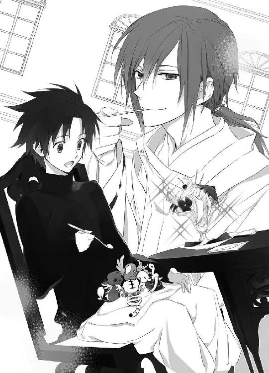
「────これから年の瀬にかけて、窃盗、盗難に加えて、凶悪事件が増えますよ。十分気をつけてくださいね」
「それは、わかってますけど......」
年末はどこでも事件の発生率が高くなる。そして犯罪を行おうとする者は、大抵自分よりも弱者を被害者に選ぶ。小柄な蒼司朗は、どうしても目をつけられやすいので、そういう連中の標的にならないように、いつも注意していた。
気をつけるのは、今更だが。
「帝都の泥棒って、ずいぶん大胆で怖いんですね。真っ昼間から、力技で一気に押し入って来ましたけど」
ピヨ四神にパフェのアイスクリームを食べさせながら、蒼司朗は東洲斎邸を襲った強盗たちのことを思い出す。
蒼司朗は小此木神官長の前での直接表現を避けたが、昼間から押し入った強盗は、一家を皆殺しにして目撃者を始末し、物品を盗み出すつもりだったのだと確信していた。強盗と対峙した東洲斎鷹彬が賢かったので、今回は誰も怪我しなかったが、会話の具合では、いつ誰が殺されていてもおかしくなかった。
「オレ、泥棒って、もっとこう......、こそこそしてるものだと思ってました。誰もいない家に入って盗みをしたり、見つかったら、急いで逃げていくような」
帝都に到着した早朝、柳生真純の鞄を狙ったひったくりを蒼司朗は捕まえたが、あのひったくり犯の男も逃げ足が速かった。泥棒というのは、どこでもあんな感じかと思っていたのだけれど、帝都にはもっと過激な集団が出没するようだ。
「あぁ」
小此木神官長は蒼司朗に頷く。
「蒼司朗くんの言ってるのは、『空き巣狙い』の泥棒のほうですね。無人の家屋に侵入する泥棒とか、置き引きやひったくりは、そうですね、見つかったら捕まらないように逃げますね。もちろん、そういうのも、いますよ」
「いえ、いなくていいですけど」
「ミギュ」
「キュオ」
「ピチュ」
「「（しゅー）」」
渋い顔をする蒼司朗とピヨ四神（←アイス味わい中）に、くすくすと小此木神官長は笑う。
「空き巣狙いと似たようなものですが、『居空き』って、知ってますか？ 蒼司朗くん」
「居空き？」
初めて耳にする言葉に、ピヨ四神に小さく切って潰したフルーツを食べさせながら、蒼司朗はきょとんとする。
チビでも四神様なら知っているかと、ちらりと視線を流したが、フルーツを食べているピヨ四神たちは、言いつけどおり一口一口しっかりうまうまと味わいながら、ぽきゅんと円らな瞳で蒼司朗を見つめ返すだけだった。
「何ですか？ それ」
「人のいる時間に、盗みに入る泥棒のことですよ」
「強盗じゃないんですか？」
「強盗は、被害者を傷つけたり殺したりして物を奪う凶悪犯のことですよね。居空きは、被害者に見つからないように金品だけを盗む、プロフェッショナルの泥棒ですよ。屋敷に人がいても、いつでもすべての部屋に誰かがいるわけじゃないでしょう？」
例えば、庭で洗濯物を干していたり、台所で料理していたり、風呂に入っていたり、食事していたり、接客中だったり、作業中だったり。その場から動かない状態にある家人の隙をついて居空きは家屋に侵入し、見つからないように、金品を盗んで逃げる。
泥棒は事前に何日かかけてその家にいる人間の行動を調査し、部屋に誰もいない時間を見計らって侵入し、盗みを行う。
「泥棒の犯行時間は、およそ五分から十分です。一軒の家に長居はしないものなんですよ」
あらかじめ行動調査をしておき、金目の物がある場所で物音がしない、誰もいない、明かりがついていないのを確認して、すぐ近くの別の場所にいる住人に気づかれないように、短時間で金品を盗んで逃走する。
「施錠の甘い、ゴミ出しの時間なんかも、狙われますね」
ちょっと扉を開けて外に出た隙に、泥棒は解錠の手間もなく家屋に侵入し、素早く盗みを行って逃げる。財布の中身だけを上手に抜き取るような泥棒だと、紙幣が減っていても勘違いかと思いこみ、盗みに入られたことに気づかない被害者もいるらしい。
「はぁ......。油断も隙もないですね」
蒼司朗が生まれ育った巌手は、のんびりした田舎で、家の玄関に鍵をかけないような地区も多数あった。観光客を含め、余所者が多く行き交う帝都では、そういうものなのかと考えて、蒼司朗ははっとする。
「あの、それじゃあ、お城の照明がすべて点けられているのって────」
「帝や若様の居場所をわからせないようにするためです」
お城のどこに帝や若様がいるかがわかれば、その場所が狙われる。
城勤めの者は、帝の命を狙う者ではないか、厳しく調べられてから採用が決まるが、それでも内部に潜入する間者がいる可能性を完全に排除することはできない。
帝都城は誰もいない未使用の部屋や廊下にも明かりを灯し、帝と若様の私室は不定期に場所を変更している。
一見無駄遣いのようだが、帝と若様の安全のためには、必要なことなのだ。
「帝都の城下には、門限があります。ですから、帝都に来る泥棒は、門限の前に、帝都から逃げ出せるように考えて行動するんでしょうね」
「一晩明かして、朝の開門時間を待ってちゃ、捕まりますよね」
門の前で盗品を担いで開門を待つわけにもいかないだろうし、その頃には、盗品の手配書が出回っている。例え目撃者をすべて殺害しても、運び出そうとしている荷物をチェックされれば見つかってしまう。
「蒼司朗くんも見たとおり、帝都は四神様の加護を受けてます。悪しき心の者の所業が、罷りとおるはずはないんです、けどねぇ。外から来る泥棒は、減りませんねぇ。最近は、体力勝負の下品で凶悪な強盗も増えてきて困ります」
「はぁ」
蒼司朗が遭遇したのは、その体力勝負の下品で凶悪な強盗に間違いない。
「ま、片づけや大掃除は、年末の行事ですし」
「犯罪者もですか？」
「穢れ全般です」
スプーンを置き、口許を上品に紙ナプキンで拭って、にっこりと小此木神官長は微笑む。蒼司朗のはまだ半分も減っていないのに、いつの間に完食したのか、小此木神官長のパフェの器は綺麗に空になっていた。
「年末には『大祓』という行事があります」
「あ、はい。オレのいた巌手でもありました」
一年の穢れを祓う行事だ。社寺仏閣で煤払いをして、大掃除を行う。
「帝都では、『大祓』に備えて、『蟲呼びの夜』を行います。蟲呼びの夜の三日ほど前から、蟲溜まりになっている場所から徐々に蟲を追い出して、蟲呼びの夜に一気に浄化して、大祓の行事は綺麗な帝都で行うって段取りなんですけどね」
帝都のゴミや埃溜まりには、蟲が巣食っていて危険だ。蟲を浄化できない者が下手に触って大変なことにならないよう、先に蟲を浄化しておくのである。
「蒼司朗くんは見学でいいですから、四神の戦士の皆さんと同じように、『蟲呼びの夜』と、その後の『裏大祓』に参加してくださいね」
「はい」
ピヨ四神の力で、蒼司朗は何度か天の戦士になって浄化を行ったが、それは毎回確実に行えると考えていいものではないので、蒼司朗の四神変化は頭数に含められてはいない。神官候補生には、見学での参加が妥当だ。『裏大祓』とかいう裏方作業の掃除は、率先して行ったほうがいいと蒼司朗は思った。
ピヨ四神にアイスクリームを食べさせながら返事して、蒼司朗は考える。
（四神の戦士の皆と同じように、って......）
四神の戦士は神官の中でも、特別扱いの重要人物だ。その四人と同じ、ということは。
「あの、他の神官の人たちは......」
行事があるときは、準備や雜用で神官は忙しいはずだ。蒼司朗のような神官候補生は、やる気があるのを見せるためにも、率先して動かなければいけないのが普通だ。
気を回す蒼司朗に、小此木神官長は微笑む。
「うん。蒼司朗くんは気にしなくていいよ？ タダでさえ、君、忙しいから」
高校生であることに加えて、庭師見習いでお庭番で神官候補生。
ピヨ四神に気に入られて、ピヨ四神のお世話をするお庭番であり、ピヨ四神の力で四神変化し、天の戦士となれる者に代わりはいない。無理をさせず、蒼司朗の体力の温存も、小此木神官長たちにとっては重要事項だ。
蒼司朗の食べものを何でも欲しがって、好奇心と食欲は旺盛だが、サイズのちびっちゃいピヨ四神は、そんなにたくさん食べられるわけではない。
「プフ」
もうお腹いっぱいと、アイスクリームとフルーツを堪能したピヨ四神は、満足した様子で蒼司朗の膝の上で寛いだ。
「はい、ごちそうさま」
「ミギュ」
「キュイ」
「チュピ」
「「（しゅー）」」
食べるだけ食べたピヨ四神は、あくびして折り重なるように、蒼司朗の膝の上でぬくぬくと丸くなる。
ピヨ四神は聖獣なので、飲み食いするものはお供えと同じだ。残したものを蒼司朗が食べても、何の問題もない。
（オレだって食べたいけど）
器にフルーツパフェは、まだまだたくさん残っているけれど、多忙な小此木神官長を蒼司朗に付き合わせるわけにはいかない。
潔くスプーンを置こうとした蒼司朗より先に、小此木神官長は手を挙げてボーイを呼んだ。
「プリンアラモードと紅茶、追加注文お願いしますー」
３
お茶休憩の時間を小此木神官長と過ごした蒼司朗は、見習い庭師としての仕事をするためにショベルカーで望月造園に戻る。
「おう！ いいときに戻ってきたな、蒼！ 配達に行ってくれ」
休憩用の四阿に庭師たちを集めてこの後の仕事の段取りを説明していた伯父────、望月造園の親方・望月左近に大声で呼びかけられた蒼司朗は、駐車場の隅の邪魔にならない場所にショベルカーを停め、走って伯父のもとに行く。
「配達ですか？」
どこに何をだろう。預かって手入れをしていた盆栽は、まだどれも作業が終わっていなかったように蒼司朗は記憶している。
庭師たちに作業を振り分けながら、蒼司朗に振り向いた伯父は、軒先の筵の上に堆く積み上げたものに向かって、顎をしゃくる。
「今日中にあれ全部、帝都の西地区の家に配んな。数は、配った先で適当に決めてこい」
「適当に、って......」
一回り大きい納豆のような藁巻に近寄った蒼司朗は、目を瞬き、一番上にあったそれをひとつ手にとる。
中に何か詰まっているようだが、特に重くはない。そっと振ってみたが、何の音もしない。
「ミュ？」
「キュウ」
「チュピ」
「「（しゅー）」」
顔を出したピヨ四神も、何だろうと蒼司朗が手に持ったものを円らな瞳で見つめた。問いかけるようにピヨ四神にちらりと視線を向けられたが、蒼司朗には説明できない。
「いや、何だろうな？ これ」
とりあえず危険なものではないようなので、ピヨ四神は身を乗り出して、ふんふんと匂いを嗅いだが、美味しい匂いはしなかった。ピヨ四神は怪訝な様子で、おとなしく元の位置に戻る。
「......ゴミ？」
藁包みから少しはみ出て見えたものに、蒼司朗は眉を顰める。藁を少し開いて覗いてみると、剪定をした後に搔き集めた枝葉のようなものが詰まっている。
親方の指示を受け、庭師たちはそれぞれに仕度を始めたが、池波は指で藁包みの中身を引っ張りだそうとする蒼司朗に気づいて慌てる。
「ちょっ！ 蒼ちゃん！ 何してんだよ!?」
大声を出され、蒼司朗はびっくりした。蒼司朗以外に姿は見えないのだが、池波の大声に驚いて、きゅっと一斉にピヨ四神は頭を引っこめる。
「何、って......」
きょとんとする蒼司朗に、池波のずっと向こうにいた清志朗が、蒼司朗に近づこうとする池波に会釈し、走って追い抜いた。蒼司朗の従兄弟である清志朗がいるなら大丈夫だと、池波は自分の仕度に戻る。
清志朗は蒼司朗の手から、藁包みを取る。少し引っ張りだされた中身を押しこみ、ちょっと開いてしまった藁包みを、丁寧に直す。
「そうか。蒼くん、『藁巻』見るの初めてだったっけ」
「わらまき？」
「先週から、蒼くんが神官の修行してるときに庭師の人たちが作ってたから、蒼くんはこれを作ってるところも全然見てなかったよね」
「あぁ、何かそういえば、作業場の隅にあった」
いつも時間に追われていて、覗く暇もなかったけれど、筵を被せて隠されていたものがこれだったのかと、蒼司朗は思い出す。
「帝都の年末の風物詩みたいなものだよ」
「清！ 蒼についてけ！」
「はい！」
命じた父親に振り返って返事して、清志朗は蒼司朗に微笑む。
「少しだけ一緒に行くよ」
（帝都の年末の風物詩......）
両親の里帰りで、蒼司朗は年末年始を帝都で迎えたことが何度かあるが、『藁巻』というものを見たことはない。
「何か、凄い数あるな......！」
「帝都城下の西地区分だからね」
蒼司朗は清志朗に手伝ってもらって、一山はある大量の藁巻を、ショベルカーのショベル部分と運転台の隙間に積んだ。
蒼司朗のショベルカーは小型で一人乗りだが、蒼司朗は小柄だし、清志朗は細身なので、運転台に無理なく入れる。作業に使う竹の脚立と枝切り鋏をショベルカーのルーフキャリアに積み、清志朗はついさっき運んだ帝都神社の法具の箱のように、蒼司朗の座るシートの背後、リアとの隙間────、積み入れた藁巻の合間に入りこんだ。
運転席にはドライバーの体重制限があるが、二人の体重を足し合わせ、藁巻の重量を足しても、制限重量にはまだいくらか余裕がある。
「清ちゃん、大丈夫？ きつくない？」
清志朗は具合のいいポジションを探して身を落ち着け、蒼司朗の座るシートの背を握って、身体を安定させる。
「うん、大丈夫だよ。蒼くんは、ちゃんと運転できる？」
「オレはいつもどおりだから」
シートを一番前の位置に固定しているのは、背の低い蒼司朗がブレーキやアクセルを操作できるようにするためだ。清志朗が同乗するからと、移動させたのではない。
「蒼くんの四神様も大丈夫かな？」
「ミギャ」
「キュイ」
「チュピ」
「「（しゅー）」」
「大丈夫だってさ」
「そう。よかった」
心配してくれた清志朗に、蒼司朗にくっついているピヨ四神は機嫌よく返事をするが、残念ながら霊力のない清志朗には、その姿は見えないし、鳴き声も聞こえない。蒼司朗の楽しそうな声から、推測するだけだ。
帝都城公園の北側の木を手入れしに行く庭師たちの乗ったトラックが、望月造園から次々に出発した。門を開いてくれている伯母の梢に会釈して、蒼司朗はエンジンをスタートさせる。
「いい？ 清ちゃん、出すよ」
「うん」
返事を聞き、バックミラーで清志朗の様子を確認して、蒼司朗はショベルに積んだ藁巻を振り落とさないよう、徐行で前進する。
「蒼くん、外に出たら、右に曲がってね」
「了解ー。────行ってきまーす！」
「ミギャ」
「キュイ」
「ピチュ」
「「（しゅー）」」
「行ってきまーす」
「はい、行ってらっしゃい。気をつけてね」
自分たちも蒼司朗と同じように、行ってきますと鳴き声をあげて愛想を振りまくが、残念ながらピヨ四神の姿は梢にも見えない。見えなくても、微笑ましい雰囲気だけは伝わるので、何となく和む。
にこやかに微笑んで手を振る梢に見送られ、蒼司朗のショベルカーはキュルキュルと軽快なキャタピラ音を響かせながら望月造園を出た。
清志朗の指示に従って、蒼司朗は私道の続く裏道を選んでショベルカーを進ませる。
「藁巻はいつも蒼くんが来る前に、大祓のお焚き上げで全部燃やしちゃってたから、蒼くんは見たことなかったんだね」
「大祓のお焚き上げ......」
「うん。例えるなら、菰巻きの菰みたいなものかな。家の中の薄暗い場所に置いておいて、蟲を誘い入れて、燃やしちゃうんだ。藁巻の中にゴミを詰めておくのは、蟲が寄りつきやすいようにだよ」
蟲は穢れた場所を好む。掃除した場所に剪定屑を詰めてわざと汚したものを置いておけば、蟲はいい隠れ場所があったと、藁巻の中に入りこむ。
「蟲呼びの夜の儀式でも集められないような、家のどこかに隠れている小さな蟲も、藁巻なら集められるんだ」
「へぇ」
（そういえば......）
思い出してみると、一週間ほど前から、剪定で出た枝葉のゴミのうち小さなものだけ、燃料用に圧縮処分されずに、別に取り分けられていた。藁巻の中に詰めやすい大きさのものが、残されていたのだろう。
「お焚き上げの日に、藁巻は全部新聞に包んで、帝都神社と四神神社に持って行って燃やすんだ」
蟲を潜ませた藁巻は、清い炎で焼かれて、浄化される。帝都の新聞紙、帝都日報に使われている紙は、帝都の清い井戸水を使って漉かれたものなので、これで巻いていけば、藁巻に潜んだ蟲の穢れに直接触れないようにできる。
「あとね、藁巻を包む新聞紙の裏には、こっそりとその年にあった嫌なことを書いて、燃やしてしまえばいいらしいよ」
「ふうん」
蟲と一緒に厄祓いだ。これは一石二鳥で都合がいい。
小さい頃から何度も遊びに来て、望月の本家（望月造園）で寝泊りしていたので、蒼司朗はそれなりに帝都のことを知っているつもりで帝都に来た。だが、蒼司朗が見ていたのは、帝都のごく一部の外側の面だけだったようだ。
（奥が深い場所だなぁ）
蟲のことひとつとっても、知らないことばかりだった。
「あ、蒼くん、そこで停めて」
「うん」
清志朗に言われ、蒼司朗は木戸の前でショベルカーを停める。
ショベルカーから颯爽と降りた清志朗は、身体に付いた藁屑を払い、慣れた様子で木戸の前に立った。
「こんにちはー、橘川さーん、望月造園ですー、藁巻をお持ちしましたー！」
大きな声で清志朗が呼びかけると、少しして奥から返事があった。
「────はーい、今行きますから、ちょっと待ってくださいねー」
婦人の声を聞いた清志朗は、ショベルに積んだ藁巻を幾つか取りながら、後から降りてきた蒼司朗に、にっこり微笑む。
「蒼くん、藁巻と一緒に置いてあった地図と鉛筆、持ってきて」
「あ、うん」
蒼司朗は急いで運転席の横に置いた地図を取りに戻った。
木戸を開けて、橘川邸の奥さんが出てくる。
「ご苦労様、清志朗くん」
「こんにちは。今年も五つでよろしいですか？」
「そうね。五ついただくわ」
にこやかに会話して、清志朗は手に持っていた藁巻から五つを、橘川邸の奥さんに渡した。橘川邸の奥さんは、清志朗と二、三和やかに会話して、藁巻を抱えて木戸を閉めた。
「蒼くん、橘川さんのところに、『五』って書いて丸で囲んで」
蒼司朗が広げたものは帝都城下西地区の地図だが、本屋で売っているような地図ではなく、年度ごとに更新される、町内会の協力で作成された地図で、住民の名前や店の屋号が細かく印刷されているものだ。
清志朗に教えられ、蒼司朗は地図に書きこみをする。橘川邸は望月造園のすぐ隣なので、初めて見る地図でも場所は簡単に探せた。
（橘川さん、五、と）
「ミギャギャ」
「キュイキュイ」
「チュピピ」
「「（しゅー）」」
蒼司朗にくっついているピヨ四神も、神妙な顔で蒼司朗の書きこみを覗きこむ。
「────はー、なるほど」
配っていく藁巻は、一軒にひとつというものではないらしい。
うんうんと頷く蒼司朗の真似をして、ピヨ四神もふんふんと頷く。
こうして行く先々でその都度書きこみを行えば、どこに幾つ藁巻を渡したかが、よくわかる。
「お留守だったら、そこはまた出直すんだ」
「うん、これならよくわかる」
渡した数の記録でもあるので、翌年に作る藁巻の数の目安にもなるわけだ。
「こんな感じで、あと五軒、一緒に行くからね」
「ありがとう、清ちゃん」
まだ見習い庭師であっても、清志朗には任された仕事があるので、ずっと蒼司朗と一緒に藁巻を配って回るわけにはいかない。
（清ちゃんは庭師の皆と一緒に木の仕事で、オレは一人で藁巻配りかぁ......）
同じ庭師見習いでも、作業内容は全然違う。蒼司朗に回される仕事は、雜用ばかりだ。これまでの仕事からも、そんなことはわかっていたけれど。
「ミギュ」
「キュイ」
「ピピ」
「「（しゅー）」」
少しへこんだ蒼司朗を慰めるように、ピヨ四神のちっちゃなふわふわぬくぬくが蒼司朗を優しくくすぐった。あったかい感触に、ふわりと蒼司朗は微笑む。
「うん、ごめん。大丈夫だよ」
心配してくれたピヨ四神に、ありがとうという想いをこめて、蒼司朗はピヨ四神を順番に撫でた。
小さく溜め息をついた蒼司朗を見た清志朗は、微笑んで言う。
「藁巻を配るのは、去年まで三年間、僕の仕事だったんだよ」
「え？」
「その前から、池波さんとかにくっついて、毎年トラックに一緒に乗って配達して回ってたんだけどね。一人で回ったのは、去年までの三年間」
「そう、だったんだ」
初めて聞くことに、蒼司朗はまじまじと清志朗を見つめる。清志朗は苦笑する。
「僕は蒼くんみたいに自分の車って持ってないから、望月造園の三輪自転車を借りてやったんだけど、荷台はダンボール箱の大きいのが乗るぐらいの大きさしかなくてさ。何度か往復しなきゃいけなくて、結構大変だったよ」
藁巻といっても、数が多くなれば相当の重量になる。小型でも蒼司朗のショベルカーは、人力で動く自転車よりずっとパワーがあるので、多くの藁巻を一度に運べる。
蒼司朗はそのときの状況を想像することしかできないが、清志朗はかなり大変な思いをしたはずだ。
（厳しいな......、伯父さん）
自転車でなく、スクーターが使える歳になっていれば、清志朗はもっと楽に藁巻の配達ができただろう。今年、スクーターが使える歳になった清志朗は、藁巻の配達をしなくてもいいと言われてしまった。
見習い庭師としては、木を手入れできるのは嬉しいことだが、苦労した清志朗は、ショベルカーで楽に配達できる蒼司朗に、幾らか理不尽な気分ではないかと思う。
「数が多いから、藁巻を作るのは、庭師全員でやるんだけどね。配るのだけは、望月造園の見習い庭師の仕事なんだ。二人でやるほどのものじゃないから、今年は蒼くんだけの仕事になっちゃったんだよ。来年、新人が入ってきたら、その人の仕事になるんじゃないかな」
年末の藁巻配りは、その年の新参者の見習い庭師の仕事だ。例え高卒の新人が望月造園に入っても、庭師見習いとしては蒼司朗のほうが先輩だ。今年一度やっておけば、蒼司朗のほうが年下でも、藁巻配りの仕事は交代になるだろう。
「面白くないだろうけど、がんばろう、蒼くん」
励ましてくれた清志朗に、蒼司朗は恥ずかしくなる。
「ごめん、清ちゃん。ありがとう」
「次、行こうか」
「うん」
微笑んで促され、蒼司朗は清志朗とショベルカーに乗りこみ、次の家に向かう。
「あーあ、格好悪いなぁ、オレ。不満いっぱいの顔で、西地区の家、回るとこだったよ」
可愛いピヨ四神と一緒に藁巻配りをしても、本心から笑うことはできなかっただろうなと蒼司朗は思う。清志朗に一言言ってもらえて、すっと気が楽になった。
運転しながらぼやいた蒼司朗に、清志朗は苦笑する。
「蒼くんは格好悪くなんかないよ」
「ミギャギャ」
「キュオキュオ」
「チュピピ」
「「（しゅー）」」
清志朗の言葉に、ピヨ四神は賛同するように力強く鳴く。皆、きっぱり断言してくれたようだけれど。
「それは贔屓だって！」
蒼司朗は笑う。
（背は低いし、オレは何だって、努力しなくちゃできない）
努力しなくても色々なことが様になる級友たちを、いつも蒼司朗は羨むばかりだった。褒められることはあるが、それはすべて、必死になってがんばった努力の結果だ。
軽く笑い飛ばした蒼司朗に、清志朗は眉を顰める。
「────贔屓なんかじゃないよ」
普段聞かない調子だった清志朗の声に、あれ？ と蒼司朗は思う。
「清ちゃん？」
「蒼くんは格好いいよ。蒼くんは、もっと自信を持っていい」
「あ、りがとう......」
バックミラーで蒼司朗は清志朗がどんな顔で喋っているのか見たかったが、ミラーの角度がうまく合っていなくて、はっきりと清志朗の表情を見ることはできなかった。
橘川邸と同じように五軒回って、蒼司朗をショベルカーに乗りこませた清志朗は、ルーフに積んだ竹の脚立と枝切り鋏を下ろす。
「じゃあ、がんばってね、蒼くん」
「あ、あのさ、清ちゃん......」
脚立を肩に掛け、にこりと微笑んだ清志朗に、蒼司朗は運転席のドアを開いたまま、躊躇いながら呼びかけた。
「何？ 蒼くん」
踵を返そうとした清志朗は、その場に足を止める。
（この前から、ちょっと気になってたんだ......）
今、ここで言ったものかどうか、蒼司朗は少し逡巡したが、思いきって言う。
「清ちゃん、オレに何か隠しごとしてる？」
新嘗祭の日から、漠然と蒼司朗は感じていた。蒼司朗自身があれこれと忙しくしているので、気のせいかとも思ったのだけれど、何となく......。
（変だよ、清ちゃん）
清志朗のように賢くてよくできる自慢の従兄弟に、お世辞にも褒めてもらえるのはとても嬉しいけれど、蒼司朗はさっきの会話に違和感を持った。
どこか、引っかかる。
（あの日に、何かあった？）
唐突な蒼司朗の問いかけに、清志朗は驚いた顔になり────、にこりと微笑む。
「してるよ」
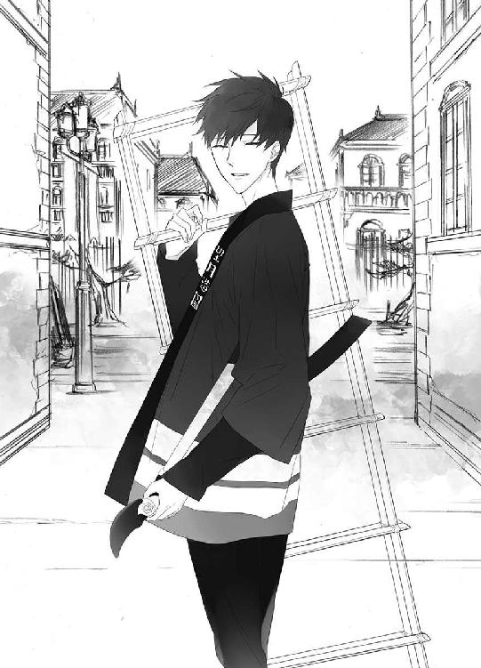
微笑みながら爽やかに言いきって、清志朗は蒼司朗に手を振ると、自分の仕事場所に向かうため、大通りのほうへと歩いて行った。
「......え......？」
残された蒼司朗は呆然と、歩き去る清志朗の背中を見送る。
────してないよ。
きっとそう言ってもらえるのだと、思いこんでいたことに気づく。
（オレ......）
「ミギュ？」
呆然としている蒼司朗の頰に、胸元から顔を出したチビ白虎が右前肢で、ぽちっと触れる。ちっちゃな肉球タッチに、蒼司朗ははっと我に返る。
「あ......」
「キャウキャオ」
肩に乗ったチビ青龍が、蒼司朗の顎の下に、くいくいと鼻面を押しつける。
「あ、あぁ、うん、藁巻配っちゃわないとな」
「チュピピ」
次はあっちと、頭の上で風見鶏のように気取ってポーズを決めたチビ朱雀（ピヨっているので、むっちり丸い）に手羽で指し示され、蒼司朗は頷く。
「「（しゃー）」」
運転席のドアを閉めるよう、チビ玄武に教えられ、蒼司朗はドアを閉めて、前を向く。
雑用であれ、今は、仕事の途中だ。
（そう、だよな。隠しごとなんて、誰にだってあるよ）
特別なことでも、何でもない。はず、なのに────。
４
帝都城下は、大きな邸宅ばかりの屋敷街だ。ひとつひとつの敷地も広いので、地図のぱっと見でイメージするよりも、移動距離はずっと長い。
（夕方の神官修行に遅れないようにしないと......！）
訪問先が早く出てきてくれるとは限らないし、留守の場合もある。ゆるゆると配達してはいられない。
「ちょっと捲くってくぞ！」
何となく元気のなかった蒼司朗が気になっていたピヨ四神は、やる気を出して配達をスピードアップしようという蒼司朗に、歓喜する。
「ミギュギュ」
「キュアキュオ」
「ピチュチュ」
「「（しゅー）」」
ガンバレガンバレと声援を送るような、賑やかなピヨ四神を連れて、蒼司朗は精力的に藁巻を配達して回る。
「こんにちはー！ 望月造園ですー！ 藁巻をお持ちしましたー！」
敷地の広いところを後回しにし、蒼司朗は効率を優先して西地区を回って配達する。
数百軒の屋敷を回ったが、家人が留守でも、使用人か誰かが留守居をしている屋敷ばかりだった。
ピヨ四神連れの蒼司朗には、ピヨ四神様のありがたい御加護があったのかもしれないが、今年は配達日に藁巻を届けられない家は一軒もなかった。
「────次で、終わり......！」
きちんと左右を確認し、蒼司朗は軽快にハンドルを切る。
最後に残った、一番大きな屋敷は。
「......白虎神社......」
キュルキュルとショベルカーを走らせて、辿り着いた門────、朱塗りの鳥居を、蒼司朗は運転席から呆然と見上げた。
白虎神社は帝都城下の西を守護する神社だ。望月造園が藁巻を担当する、西地区にある。
「道塞いでんじゃねーよ、タコ......！」
不機嫌な声で罵倒され、運転席に座ったまま蒼司朗は振り返る。スラックスのポケットに手を突っこみ、ショッピングバッグを提げた少年が、こちらを睨んでいる。
「......篠原」
白虎の戦士である篠原勇輝は、この白虎神社の神主の息子だ。外出先から戻って来たところらしい。
「ゴメン......！」
蒼司朗は運転席に座ったまま会釈して、参道の中央を塞ぐように停めていたショベルカーをすぐ横にあった駐車場に移動させる。
篠原勇輝はピヨ四神連れで白虎神社を訪れた蒼司朗を、怪訝な顔で眺めた。
「何だ？ 何か用でもあるのかよ？」
口調は乱暴で喧嘩腰だが、篠原勇輝はいつでもこんな話し方だ。相手を睨んでいるようでも、もともとの目つきがキツイのである。服装が幾らか着崩れているのも、篠原勇輝としては『ごく普通』だ。沸点が低く、すぐに怒るのも、彼の個性だ。
初対面や気の弱い者は、怖い人だと、篠原勇輝のことを敬遠する。だが、毎回大声で怒鳴りつけられ、何度も険悪な雰囲気になり、実際に喧嘩もしている蒼司朗にとって、この程度の雑な対応なんてまったく軽いものだ。
ショベルカーを停めた蒼司朗は、運転席の後ろに手を伸ばし、愛用の枝打ち斧と残っていた藁巻を一抱え持って降りる。
「望月造園の使いで、藁巻届けに来たんだ。ここでラストなんだけどね。篠原のトコは、幾ついる？」
「ミギュギュ」
「キュアキュア」
「ピピチュン」
「「（しゅー）」」
蒼司朗はにこやかに訊ね、さあ、幾つと、円らな瞳を輝かせたピヨ四神が、期待に満ちた視線を篠原勇輝に送る。
「............」
篠原勇輝は、営業スマイルを浮かべた蒼司朗の抱えている藁巻の山を見、溜め息をつく。
「......全部置いてけ」
「ミギャ」
「キュイ」
「チュン」
「「（しゃー）」」
ピヨ四神は毎度アリ！ とばかりに甘え声で鳴いたが、あっさり言いきった篠原勇輝に、蒼司朗は目を瞬く。
「全部って......。三十個ぐらいあるぞ？ そんなにいるのか？」
確かに、敷地は広いけれど。多くても十個がせいぜいで、そんなにたくさん藁巻をくれと言った家はない。
首を傾げた蒼司朗に、篠原勇輝は苛々しい様子で、息を吐き捨てる。
「神社に藁巻持ってくるようなバカ相手に、ほかにどうしろってんだ!? あぁ!?」
「え」
蒼司朗はきょとんとしてから、気づく。
神社は強固な結界で守られた、清らかな聖域である。────当然、蟲はいない。
藁巻は、不要☆
「ゴ、ゴメン、オレ......！」
藁巻を配達しなければと、そればかりが頭にあった蒼司朗は、かぁっと耳まで赤くなる。地図に記された『白虎神社』という字は見えていても、それがどういう場所なのか、すこんと頭から抜け落ちていた。
逃げるようにショベルカーに駆け戻ろうとした蒼司朗の肩を、篠原勇輝が摑む。
「んーなモン、持って帰っても仕方ねーだろ！」
至近距離から大声で怒鳴りつけられ、蒼司朗は思わず肩を竦めた。篠原勇輝の大声に驚いて、ピヨ四神が急いで引っこむ。
びく、と震えた蒼司朗の肩に、はっとして篠原勇輝は摑んでいた手を放す。大声で喧嘩腰なのは癖で、驚かせたり、怯えさせたりするつもりはなかった。
「────お、遅かれ早かれ、ウチにくるモンだろうが......！ ちょっとぐらい早まったって、構やしねーよ......！ フライングだけど、預かってやる......！ 置いてけ！」
そっぽを向いて言った篠原勇輝を、蒼司朗は見上げる。
確かに篠原勇輝の言うように、余った藁巻は、望月造園に持って帰っても、仕方のないものだけれど。
（いいのかな......）
大祓まではまだいくらか日にちもあるし、大量の藁巻は場所塞ぎだ。
「────そんなの勝手に決めちゃ、家の人に叱られるんじゃないか？」
遠慮がちに言った蒼司朗の言葉は、まったくの正論で、篠原勇輝は思わず赤くなる。
「うるっせぇな！ つべこべ言わずに、持ってるもの全部置いてきゃいいんだよ！」
大声で怒鳴り返した篠原勇輝の台詞は、まるで追剝ぎかカツアゲのようだ。
「い、いや、でもひょっとしたら、まだいるかもしれないし......」
配っている途中で足りなくなっては困るので、昨年までの数から判断して、庭師たちはあらかじめ、余るぐらいの数の藁巻を作っていただろう。配達に行った蒼司朗が藁巻の余りを持って帰るのは、想定されている。
今ここで全部渡してしまっては、やっぱりもうひとつ欲しいと、後から望月造園を訪れる人がいても、すぐに対処できない。材料を新たに揃えて、庭師の誰かに、また藁巻を作ってもらわなければならなくなる。
篠原勇輝が（親切心から）どう言おうと、蒼司朗は残った藁巻を、持ち帰ったほうがいい。
「勇輝坊っちゃん!?」
篠原勇輝の怒鳴り声を聞きつけた若い神官が、境内を掃除していた箒片手に、慌てて走ってきた。
篠原勇輝の大声だけが聞こえていれば、どうにも不穏極まりない状況だ。同じ学年でも、一番小柄な蒼司朗は、篠原勇輝に恐喝されている気の毒な少年にしか見えない。
（げ☆！）
しまったという顔の篠原勇輝から急いで離れた蒼司朗は、残った藁巻を持ち帰るため、ドアを開けたままだったショベルカーの運転席の後ろに急いで放りこむ。
「どうなさったんですか!? 何かありましたか!?」
「いや、何でもない！ こいつがちょっと、遊びに来てただけ！」
血相を変えて駆け寄った神官に、篠原勇輝は持っていたショッピングバッグを押しつけるように渡す。
「これ、親父に頼まれてたヤツ！ 渡しといて！ ────さ、行くぞ！」
逃げるように身を翻した篠原勇輝は、ショベルカーに藁巻を放りこんだ蒼司朗の手を摑んだ。
「ちょっ......！」
ぐいっと引っ張られた蒼司朗は、枝打ち斧を摑んだ格好で、篠原勇輝に引きずられる。
「よく来たよな！ ま、ゆっくりしてけ！」
友達ぶって聞こえよがしに大声を出す篠原勇輝に強引に肩を組まれ、白虎神社の境内に入った蒼司朗は、社務所の売店に連れて行かれる。
組んでいた肩を離し、篠原勇輝が足を止めたのは、御神籤やお護り袋の前ではなく、土産菓子の前だ。箱入りのものもあるが、ちょっと摘めるような、個包装の菓子も整然と並んでいる。
「どれにする？」
「どれ、って......」
「ミギュ」
「キュアオ」
「チュピ」
「「（しゅー）」」
訳がわからず蒼司朗は困惑し、蒼司朗の衣服や髪の間から顔を出したピヨ四神が、初めて見るものに目を輝かせて、商品棚に向かってダイブする。
「あ、こら！」
「気安く神様叱ってんじゃねーよ☆」
大胆なピヨ四神の行動にびっくりし、声をあげた蒼司朗は、篠原勇輝に言われて、差し出そうとした手を止める。
（神様、だよな）
やんちゃな小動物の姿なので、蒼司朗は時々失念するが、確かに。
東洲斎忠保邸でも、このピヨ四神の御加護で、蒼司朗は強盗を叩きのめすことができた。
何？ とピヨ四神は蒼司朗に振り返る。ピヨ四神のちっちゃな足は、ぽちぽちとお菓子の袋を踏んでいる。
「神様が直接触ったものなんて、御利益あるんじゃね？」
「......なるほど」
例えピヨ四神が踏み踏みして物色していったものでも、言われてみればそのとおりかもしれないと蒼司朗は考える。
ピヨ四神は、とにかくご機嫌でお菓子の上にいる。聖獣なので、（霊感のある者だけに見える）足跡が着いたとしても、その物品はけっして損なわれない。
気がつけば、藁巻を配っている間に、結構な時間も経っていた。赤ん坊動物のピヨ四神は、ちょこちょこと食事をとらなくてはいけない。おやつをとるのに、ちょうどいい頃合いだ。
「選んでいいよ」
蒼司朗が頷いて許可したので、ピヨ四神は安心してお菓子を物色する。
「ミギュギュ」
「キュイキュオ」
「ピピチュチュ」
「「（しゅー）」」
商品棚の菓子の上で、あちこちきょろきょろ、ぴょんぴょんして、ピヨ四神はそれぞれに、気に入ったものをゲットする。
けれど蒼司朗は。
（うーん......☆）
あれこれと種類がありすぎて、目移りして決められない。
「ぐずぐずしてんじゃねーよ......！」
気の短い篠原勇輝は、苛々と舌打ちする。
売店の前に立った篠原勇輝と蒼司朗に気づいたらしく、障子窓を閉めていた奥で人影が動く。
「これにしとけ！」
言うが早いか、篠原勇輝は菓子をふたつ鷲摑みにし、そのうちのひとつを蒼司朗に押しつけて売店に背を向けた。
（あれ？ お金......）
売店に置いているということは、売り物ではないのだろうか。
菓子を手にした蒼司朗が疑問に思うとほぼ同時に、障子窓が揺れる。
「ミギャ！」
「キュア！」
「チュピ！」
「「（しゃー！）」」
人の気配に、びくっとしたピヨ四神は、菓子をゲットしたまま蒼司朗に飛びついた。
「走れ！」
「おうっ！」
ばしっと蒼司朗の背中を叩いて、篠原勇輝がダッシュで駆けだした。叩かれた蒼司朗は反射的に返事をして足を動かし、篠原勇輝に遅れないよう、一緒にダッシュする。
障子を開けた着物姿の婦人は、売店から走り去る息子とその悪友（？）の姿を目撃した。
さっきまで綺麗に商品棚に並んでいたはずの菓子が散らかって、幾つか減っている。
「こらーっ！」
白虎神社では、神主の息子の土産菓子の盗み食いは、日常茶飯事である。
本殿の奥の竹藪の向こう、池を見下ろす、少し小高くなったところまで走った篠原勇輝は、遅れずについてきた蒼司朗に振り向く。
「それ、うちの人気商品」
「へぇ。そうなんだ」
蒼司朗は渡された細長い菓子の包みに目をやる。
包みのデザインは白虎神社版だが、中身は昔から駄菓子屋で売られている、蒼司朗も見慣れた棒状のコーンスナック菓子のようだ。
小さな子供でも食べられるような、さくさくっと軽いお菓子は、大きさの割に安価で買いやすく、お得感があるロングセラー商品だ。白虎神社版も、やはり人気があるらしい。
白虎神社版の商品名は、『白虎神社・さっくり唐黍棒 ホワイトシチュー味』。
無造作にしゃがんだ（←地面にお尻をつけないヤンキー座り）篠原勇輝は、犬歯を使って、バリ、と菓子の包みを破る。一人突っ立ったままなのもアレなので、その場に腰を下ろした蒼司朗は、枝打ち斧を横に置いて、手で菓子の包みを開ける。
「────おぉ」
「ミギャ」
「キュオ」
「チュピ」
「「（しゅー）」」
よじよじと移動したピヨ四神も、蒼司朗の貰った菓子を見つめる。
直径三センチ程の棒状のコーンスナック菓子は、白地に『キ』の形に似た茶色い虎縞が描かれていた。さすが、白虎神社オリジナル版である。
「四神様は、それですか」
篠原勇輝はピヨ四神がそれぞれにゲットして大事に抱えている菓子に、犬歯を見せて快活に笑う。
もちもちころころと蒼司朗の膝に移動したピヨ四神は、これに決めたのと、持っている菓子を蒼司朗に見せる。
お菓子はいっぱい食べたいけれど、赤ん坊サイズのピヨ四神は、お腹も小さいので、一度にたくさんは食べられない。欲張って蒼司朗に叱られないように、お利口さんのピヨ四神は、程ほどの大きさの菓子を選んでいた。
「......ビャクが白虎饅頭、セイが白虎マシュマロ、スーが白虎落雁、ゲンが白虎飴、ニョロが白虎餅ね」
一匹一匹ピヨ四神を撫でながら、それぞれが持ってきたお菓子を手に取って確認し、にこっと蒼司朗は笑う。
「うん、いいよ。食べても」
蒼司朗が包みを開き、大喜びのピヨ四神にそれぞれのお菓子を与える。
「ミギュ」
「キュイ」
「ピチュ」
「「（しゅー）」」
目を輝かせたピヨ四神は、ちっちゃな口をあーんと開けて、機嫌よくお菓子に食いついた。
うまうまうま♡
膝の上で、ご機嫌でもぐもぐしているピヨ四神に少し遅れて、蒼司朗も貰ったスナック菓子を口にする。
「......美味しい」
「だろ」
篠原勇輝は手を使わず、銜えたままスナック菓子をばりばりと食べる。
少し西に傾いてきた陽の光に、並んだ篠原勇輝と蒼司朗の影が後ろに長く伸びている。
風に水面が揺れて、池がキラキラと輝く。
「────てめー、何湿気た面してんだよ？」
ずばり見抜かれて、蒼司朗はどきりとする。
「別に湿気た面なんて......」
「ますます縮むぞ」
「うるせ！」
怒鳴ってから、蒼司朗は大きく息をつく。もやもやとした感情を抱えているのは、どうも蒼司朗の性分ではない。
「────あのさ、篠原って、誰かに隠しごとあるか？」
「あぁ!?」
喧嘩するときのような、語尾上がりで声を発してから、篠原勇輝は言う。
「俺は白虎の戦士なんてやってっからな。隠しごとなんて、したくてもできねぇな」
「そう、なんだ」
蒼司朗はまだよく知らないが、四神の戦士になった四神神社の彼らには、守護領域である帝都の外に出られないということ以外にも、色々と制約があるようだ。
篠原勇輝は特別だが。
「ま、普通はあるんじゃねぇの？ 誰でもさ」
「誰でも......」
もそもそとスナック菓子を齧って、蒼司朗は視線を落とす。
どんより沈みがちな蒼司朗をちらりと横目で眺め、篠原勇輝は息を吐き捨てる。
（コイツをこんなふうに落ちこませる奴なんて）
心当たりは一人しかいない。
「優等生クンの清志朗でも、隠しごとぐらいあんだろ。人間なんだからさ」
どきりとして顔を上げた蒼司朗は、力なく頷く。
「うん......」
視線を落として、落ちこみモードの蒼司朗を、篠原勇輝は鼻で笑った。
「何？ お前、そんなことでへこんでんのかよ。ちっせー！」
けらけらと笑われて、蒼司朗はむかっとする。
「ちっさい言うな！」
篠原勇輝が言っているのは、人としての器のことだとわかっているが、身長にコンプレックスのある蒼司朗に、『小さい』は禁句だ。
いつものように顔を上げた蒼司朗に、篠原勇輝は呆れ顔で言う。
「だいたい、従兄弟だからって、相手の何もかもを知ってるなんてこと、あるわけねぇだろ」
「そりゃそうだけどさ......！ 何か......」
「裏切られたみたいな？」
もやもやしていた気持ちの悪い心をすばりと言い表されて、蒼司朗は大きく目を見開いて絶句する。
「────オレ......」
（清ちゃんが、オレを裏切るなんてこと、あるわけない......）
あるわけないと、信じているのに────。
動揺する蒼司朗を、口いっぱいにもぎゅもぎゅとお菓子を頰張りながら、心配そうにピヨ四神が見上げる。
「ミギュン......」
「キュウ......」
「ピー......」
「「（しゅー......）」」
美味しいお菓子も、蒼司朗が元気じゃなくちゃ......。
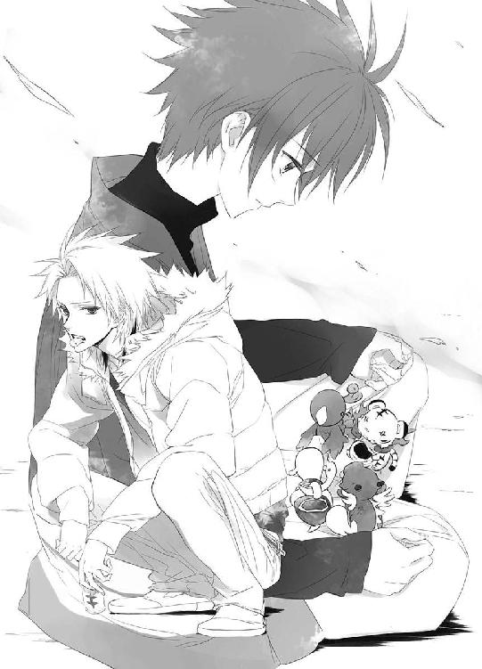
池を見つめ、ばりばりと篠原勇輝はスナック菓子を齧る。
「どうでもいい奴相手に、隠しごとなんてしねぇよ」
５
噓をついたり、何かを隠したりするよりも、ありのままに、何もしないほうがずっと楽だ。噓も隠しごとも、それに関するたくさんのことを覚え、常に気を抜かずにいなければならない。
勉強ができるし、運動神経もいいけれど、清志朗はそんなに器用な人間ではないから、噓や隠しごとは昔から得意ではない。
だから、いつかわかってしまうだろうと思っていた。
（ごめんね、蒼くん）
兄弟のような、たった一人の大切な従兄弟に、隠しごとなんて、本当はしたくなかった。
でも、できることなら、蒼司朗には知られたくない────。
分をわきまえない勝手な我が儘だとはわかっているけど、清志朗は蒼司朗の前では、いつでも自慢の従兄弟でいたかった。
蒼司朗にだけは......。
────清ちゃん、オレに何か隠しごとしてる？
────してるよ。
あの問いかけに、あんなふうにはっきり返事したなら、絶対に蒼司朗には追及できないと、清志朗はわかっていた。
優しい蒼司朗は、清志朗が『隠したい』と本気で考えていることに、ずかずかと踏みこんでくるような人間ではない。何か隠していると思っていても、隠したいという清志朗の気持ちを尊重して、目を逸らしてくれる。話せるようになるまで、待っててくれる。そうわかっているのに────。
（本当に、ごめん、蒼くん......）
割り当てられた仕事場に行くため、大通りへの道を急ぎ足で歩きながら、清志朗は唇を嚙み締める。
新嘗祭の日、人気のない場所で、清志朗は小此木神官長に声をかけられた。
「お散歩ですか？ 清志朗くん」
蒼司朗は花火見物のために、友達と帝都城公園のほうに向かった。
屋台の当番に当たっている者も含め、望月造園の庭師の皆も、花火見物を楽しみにしていた。知り合いの誰とも会わないよう、見つかっても、すぐに見失ってしまうように、急ぎ足で人の流れに逆らい、道を選んで進んでいた清志朗は心臓が口から飛び出そうに驚いた。
「......小此木、神官長────」
振り向いた清志朗に、小此木神官長はにっこりと微笑む。
「もうすぐ花火が始まりますよ？」
「あ......はい。そうですね」
にこやかな小此木神官長に合わせ、作り笑顔で清志朗も微笑む。ぎこちない笑顔に清志朗は冷や汗をかいていたが、小此木神官長はまったく気にしない様子で清志朗に近づいた。
「今年の花火は、昭田圏の阪田煙火店の寺嶋親方渾身の作ですよ。あそこのスターマインと菊型花火は、今年の夏の墨田川の花火大会で優勝したものですよね。花火のよく見えるいい場所が、まだ残っているといいなぁ。ほら、急いで行きましょう♡」
立ち止まったままの清志朗の腕を、小此木神官長が摑む。
「あ、いえ、僕はその前に......」
花火見物をするよりも、行くところがある。
（すみません、小此木様）
無礼を承知で、清志朗は小此木神官長の手を振り解こうとした。だが、清志朗の腕を摑んだ小此木神官長の手は、びくともしない。
（え？）
いつでも級長に選ばれるような面倒見のいい温和な優等生で、勉強もよくでき、どちらかというとインドア派のガリ勉タイプに見られがちだが、幼い頃から家の造園業を手伝ってきた清志朗は、同級生たちと比べると体力もあるし腕力もあるほうだ。
それなのに、小此木神官長の手は振り解けない。適度に加減されているらしく、摑まれていても痛くはないのだが。
（何て、強い力......！）
軍人のように屈強な新庄神官のような人になら引き摺られてしまうのも仕方ないと思うが、細身の優男にしか見えない小此木神官長の、どこにこんな力があるのかわからない。玉串より重いものなど持たないであろう綺麗な手は、がっちりと枷のように清志朗の手首を捕らえている。
あっという間に人の多い通りに引っ張りだされた清志朗は、周りの喧騒に搔き消されないよう大きな声で、小此木神官長に言う。
「あ、あの！ 僕は蒼くんたちが場所を取ってくれてるので......！」
だからそんなに急いで行かなくてもいいのだと言いかけて、清志朗ははっとする。
（神官長は────）
場所取りなんてしなくても、花火を見物できる特等席に行ける。
だとすれば、これは────。
人込みの中をぐいぐいと清志朗を引っ張って進みながら、連れの者と楽しく笑顔で世間話をしているように小此木神官長は言う。
「今日はお祭りの日ですからね。こんな賑やかな日に、野暮なことはよしましょうよ。何もわざわざ『今日』でなくてもいいでしょう？」
今日は新嘗祭で......、蒼司朗が尽力した先の蟲爆弾の騒動のように、帝や若様に不埒な真似をしたり、何か事件を起こそうと考える馬鹿者が何人も現れるため、帝都城下はそこかしこに警官や神官のいる厳戒態勢にある。
祭仕様の制服で、この場の楽しい雰囲気を壊さないように配慮をした警官たちは、人波に逆らって移動する者を目敏く発見し、要注意人物として尾行して包囲する。包囲して人通りのない細い路地に追いこみ、職務質問して、場合によっては身柄を拘束する。
「ね？」
ちらりと小此木神官長が視線を送った先に、清志朗は自分を追っていたのだろう警官の姿を見つけ、どきりとする。
しなければならないことで頭がいっぱいで気づかなかったが、一人奇妙に見える行動をとっていた清志朗は、警官の目に留まり、少し前から遠巻きに後をつけられていたらしい。
警戒している警官や神官が、要注意人物かもしれないと目をつけた人物を『問題なし』と判断して見逃すのは、信頼できる人物、例えば警察関係者や神官、小此木神官長のような者と接触した場合だ。
清志朗の後をつけていた警官たちは、小此木神官長と親しげな様子で合流した清志朗に、尾行の必要なしと判断し、一人二人と離れていった。
人に見られたくないことは、『今日』行うべきではない。
「......はい......」
視線を落とした清志朗の、赤く染まった耳を見て、小此木神官長はくすくすと笑う。
「ま、焦る気持ちもわからないではないですけどね」
蒼司朗は『蟲の入れられた危険物』を、処理している。
小此木神官長は清志朗を責めず、はっきりとは言わないけれど────。
（小此木神官長は、わかってる......）
清志朗が南公園の木の下に、蟲を閉じこめた箱を埋めていることを。
「清志朗くんと蒼司朗くんは、本当に仲のいい従兄弟ですよね」
蒼司朗の名を出され、清志朗ははっと顔を上げる。
（まさか、僕のせいで......！）
帝都城奥庭のお庭番という、名誉ある仕事に就任した蒼司朗に────！
ぎくりとして息を詰めた清志朗に、小此木神官長はにこやかに尋ねる。
「小さいときから、そんなふうに仲良しだったんですか？」
お互いを大切に思っていることがわかるから、清志朗と蒼司朗の二人が一緒にいる姿は、見ていて微笑ましい。一緒に何をしていても楽しそうで、助け合っているのが気持ちいい。
一瞬血の凍るような思いをした清志朗は、声を震わせないよう、呼吸を落ち着けて答える。
「────蒼くんが一歳になる前のお正月休みに会ったのが最初ですけど、そのときから、蒼くんが、とてもいい子でしたから」
巌手から帝都の望月邸に帰省した叔父一家が連れていたのは、生後十ヶ月の従兄弟だった。
よちよち歩きを始めたばかりの、まだ赤ちゃんだった蒼司朗は、初めて会ったときから清志朗のことを好いてくれた。
四月生まれと三月生まれ、学年では同じになってしまうけれど、丸一年近く誕生日の離れた従兄弟は、清志朗にとってお手本になってあげなければいけない、弟のような存在になった。蒼司朗が真似をするから、清志朗は自分の行動に気をつけるようになった。
「今の僕があるのは、蒼くんのおかげといってもいいです......」
休みのたびに遠い巌手から遊びに来てくれる蒼司朗に恥じない人間であるように、清志朗はがんばってきた。がんばったから、勉強の成績もよくなったし、駆け足も速くなったし、鉄棒の逆上がりだって同級生の誰より早くできるようになった。級友たちや先生から信頼されるようになった。家の手伝いや、望月造園の仕事の手伝いもがんばった。
蒼司朗のために『帝都の格好いい従兄弟』になりたかった。
（それなのに、僕は......！）
清志朗は過去の己の行いを悔いて、唇を嚙む。
「小此木様......！ 僕のせいで、蒼くんがお庭番を辞めさせられるような────」
「あぁ、それは心配ないです」
意を決して言った清志朗の言葉を、小此木神官長は軽く流す。
「奥庭のお庭番は、帝都城の四神様が決めましたからね。蒼司朗くんは、四神様のお気に入りなんです。僕たちには、蒼司朗くんをどうこうする資格はありません」
────たとえその身内に、どんな人間がいたとしても。
笑わない瞳の奥に、小此木神官長が口にしなかった言葉を読み取って、清志朗は安堵する。
（蒼くん......）
霊力のない清志朗には、蒼司朗と共にいるピヨ四神の姿すら満足に見えない。お庭番に就任した蒼司朗を手助けするのは、自分にはとても無理だと諦めたが、蒼司朗の妨げになるのだけは、絶対に嫌だ。
「真面目なのは清志朗くんのいいところですが、あまり思いつめちゃダメですよ？」
優しい声で諭すように言って、小此木神官長は清志朗の手を引いていく。
緊張で冷たくなった清志朗の手に、小此木神官長の手は温かい。
「────清志朗くん、知ってますか？ 人はいつでも全力で努力できるものじゃないんです。人は皆、弱いんですよ。楽したいとか、いい思いをしたいとか望んでしまうものなんです。弱いから、これはいけないな、ずるいな、悪いことだな、とわかっていることをしてしまうこともあります」
小此木神官長の言うのは真実だ。内緒にされて露見していないだけで、そういうことは世間にいくらでもある。
そう、わかっているけれど......。
清志朗は緩く首を振る。
「────僕は、常に努力を怠らない、真っ直ぐな人を知っています」
それは、清志朗のただ一人の従兄弟。
身体が小さく、同学年の子供と比べて、劣る面ばかりだった蒼司朗は、いつもマイナスからのスタートをして、それでも懸命に皆に追いつこうとしていた。苦しくても辛くても、諦めたり挫けたりしなかった。
いい加減なことをすると、身につかないという厳しい現実を思い知っているから、蒼司朗は何をするにも絶対に手を抜かない。そうして何でも、確実に自分の力として身につけていく。
帝都と巌手、遠く離れて生活していた時間のほうが長いのに、自信を持って言いきった清志朗に、小此木神官長は頷く。
「そうですね」
だからこそ────、望月蒼司朗という少年が、奥庭のお庭番に選ばれたのだ。その選択が間違っていなかったことは、奥庭の四神が赤ん坊サイズになって、のんびり楽しくほのぼの赤ん坊ライフを満喫しているところからもよくわかる。
蒼司朗は、一流の庭師を目指して地方から出てきた、純朴で誠実なだけの少年ではない。
（蒼司朗くんなら、課せられる過酷な試練も、きっと耐えられるでしょう）
耐えて乗り越えて、苦しんだ経験さえも自分の力にして、立派な『本物のお庭番』になれる。リハビリテーションで始めた剣道で、巌手圏中学生大会で優勝するほどの力をつけたことからもわかるように、これまでに積み上げてきた大きな実績があるから、どれだけ時間がかかっても、挫けない。
神職にない部外者が奥庭の管理者となったことで、周りにどれだけ冷たい目を向けられても、蒼司朗にとってその過酷な状況は、初めて体験するものではない。そして帝都には、血縁という確かなもので繫がっている、頼りになる優しい親族がいる。帝都での蒼司朗は、独りではない。受け入れてくれる人たちがいて、帰ることのできる場所がある。
「清志朗くん、正直であることが常に正しいとは限りませんからね」
「え......？」
「清志朗くんにとって、蒼司朗くんが『自慢の従兄弟』であるように、蒼司朗くんにとって清志朗くんこそが『自慢の従兄弟』なんですよ？ たとえ清志朗くん本人であっても、『蒼司朗くんの清志朗くん』を、穢したり卑しめてはいけません」
（蒼くんの......『僕』────）
蒼司朗の目に映る、蒼司朗の中の『清志朗』。それはきっと、これまで清志朗がそうありたいと願って作りあげてきた、『理想の清志朗』に違いない。
「清志朗くんは、蒼司朗くんが寄せてくれる信頼に、しっかり応えなくては」
「でも、僕は......」
（蒼くんの信頼を裏切った......）
悲痛な思いで、清志朗は視線を落とす。
（ごめん、ごめんね、蒼くん......）
がっかりされるのが怖くて、清志朗は隠すことしかできない。
「本当にしていけばいいんです」
驚いたように顔を上げる清志朗に、小此木神官長は繰り返す。
「本当に『蒼司朗くんの自慢になれる人』になりなさい」
それは、今からでも決して遅くはない。
「なれますよ。清志朗くん、君なら」
庭師見習いとして修業していた清志朗が、初めて一人での剪定を任された、南公園の木。帝都一の腕を持つ庭師、望月造園の親方の一人息子である清志朗を注目するのは、望月造園の庭師たちだけではない。望月造園の後継者が、帝都一の庭師の称号を引き継ぎ、帝都城のお抱え庭師となるのか、それは帝都で造園業を営む親方衆にとって、重要なことだ。そして、清志朗が帝都一の庭師の称号を引き継げなければ、望月造園の今の繁栄は終わる。
（期待に応えたかった......）
（失望されたくなかった......）
（弱くて小さな僕の、つまらない見栄だ）
（────蒼くんなら......絶対にあんなことをしなかった）
（蒼くんなら、ちゃんとありのままの自分で、立ち向かってた）
どんなに大きな困難が立ちはだかっても、己を恥じることなく、蒼司朗ならば────！
うろうろして遅くなってしまったが、小此木神官長に強制的に帝都城公園まで連れて行かれた清志朗は、蒼司朗たちと合流して、花火を見物した。
結局あの新嘗祭の日から、清志朗は南公園に行くことができなかった。
そして行けないままに、日にちだけが過ぎている。
清志朗が剪定した南公園の木は、土の中に埋めた缶入りの蟲の力で、花芽をつけるまでに活性化した。清志朗は蒼司朗がその木を見に行くことを考えて、蒼司朗が二度目の四神変化を行った日、木の根元に埋めた蟲を、別の場所に埋め直した。
（僕はどうして、あのとき......）
あの蟲の入った缶を、捨てられなかったのだろう────。
閉じこめて隠した蟲が、破裂して穢れをぶちまける危険な爆弾になるのだと知っていたら、もっと早くに掘り出して捨てていた。いや、最初から、あんな真似はしなかった......。
一日も早く、清志朗は蟲の入ったあの缶を処分してしまいたいのに、処分できない。こっそりと一人で作業する時間がとれない。
（今日も、駄目だ）
大通りに出た清志朗は、足早に今日の作業場所である帝都城公園の北側に向かいながら、小さく溜め息をつく。
蒼司朗に藁巻の配り方を教えていて、清志朗は自分の作業時間を削ってしまった。もう少し早く切り上げていれば、今日こそ南公園に寄れたのかもしれないが、自分の都合で蒼司朗に不安な思いをさせることはできなかった。
（一日も早く、処分しなくちゃいけないのに）
誰にも知られたくないと考えるから、その時間がとれない。
６
訊ねてしまったから、蒼司朗は清志朗が隠しごとをしているのを知ってしまった。
「訊かなきゃよかったんだよ......！ あぁもう、オレのバカ！」
何か隠しているようだと気づいていても、なぜ知らない振りができなかったのか。
白虎神社を出て望月造園に残りの藁巻を置いてきた蒼司朗は、帝都城に向かい、奥庭の仕事を始めたのだが、神官装束に着替えて襟を正しても、どうにも集中できなかった。
作業の手を止めて、じたばたする蒼司朗を、邪魔にならないように、少し離れたところで遊んでいたピヨ四神が、どうしたのと見つめる。
「ミギュギュ」
「キュイ」
「ピチュチュピ」
「「（しゅー）」」
円らな瞳で見つめられ、振り向いた蒼司朗は、情けない顔で笑う。
「いや、うん、オレが悪いんだよ。ごめん、気にしないで」
「ミゴ」
「キュウ」
「チュン」
「「（しゃー）」」
「って、言っても、ダメか」
赤ちゃんであるピヨ四神に、難しいことは通じない。
そろそろと近づいてくるピヨ四神に、蒼司朗は苦笑してしゃがむ。
「おいで」
作業時間中には、遊んでもらえないのが普通だ。抱っこするよと差し出した蒼司朗の手に、大喜びでピヨ四神は飛びついた。
きゅんきゅんと懐いてくるふわふわ柔らかくてあったかい、小さな命を抱きしめて、ふうと蒼司朗は息を吐く。
「もしもオレの助けが必要なら、清ちゃんはちゃんと相談してくれてるよ......！ 堪え性ないよなぁ、オレ......。清ちゃんだもん、オレなんかが力になれるわけないのにさ」
昔から清志朗は、何でも蒼司朗より上手にできる。蒼司朗は清志朗に教えてもらうことばかりだった。清志朗にできないことが、自分にできるわけはないと、蒼司朗は思う。
「オレに知らせたくないことだから、清ちゃんは黙ってるんだ」
意地悪ではなく、思いやりで。清志朗は思慮深くて優しい。
小学校の頃から級長をしていた清志朗は、人から頼られることも多い。清志朗には蒼司朗の知らない友人がいて、蒼司朗に関わりのない事件もあるだろう。
蒼司朗にまったく無関係ではなくても、首を突っこむとややこしくなりそうだと判断したなら、清志朗はそれから蒼司朗を遠ざけてくれるはずだ。蒼司朗に関係なくても、そっと清志朗一人の胸の内に留めて、言いふらさないほうがいいだろう話もある。
────どうでもいい奴相手に、隠しごとなんてしねぇよ。
蒼司朗にとってただ一人の従兄弟の清志朗は、親友以上の存在だ。
すうっと気持ちが軽くなった篠原勇輝の言葉を思い出し、蒼司朗は心底感心する。
「あいつ、いいこと言うよなぁ......」
さすが、白虎の戦士に選ばれ、四神変化までできる少年だ。奥庭のお庭番になったことを認めないと大声で宣言されて目の敵にされ、いつでも喧嘩腰だし、逢うたびに背の低いことを馬鹿にする、腹の立つ奴だが、清志朗が言ったとおり、とてもいい子なのだろう。
（若様のお世話係なんだもんな）
若様と同じ学年で、四神の戦士だからという理由だけで、篠原勇輝がお世話係に選ばれたのではないだろう。次期帝である若様を任せられると判断された信頼は、相当なものだ。
────そのくらいわかれよ。バーカ。
（口悪くて、マジムカつくけど......☆）
だが、ちょっとへこんでいたぐらいで篠原勇輝に優しくされたなら、それこそ気持ち悪いと蒼司朗は思う。
（────帝都ってホント、凄い奴ばっかりだ）
（それに比べて、オレは......）
篠原勇輝に罵倒されたとおり、本当に小さい。
溜め息をついた蒼司朗を、ピヨ四神はきょとんと見上げる。
「ミギュ」
「キュオ」
「チュピ」
「「（しゅー）」」
ペロペロすりすりと、小さくてあったかいものが蒼司朗を柔らかくくすぐる。
「......うん、ありがとう。優しいな、お前たちは」
ピヨ四神を抱っこして、蒼司朗は癒されて和む。
「どうかしたのか？」
涼やかな少年の声に呼びかけられ、びくんと蒼司朗は背を震わせる。
帝都城を守護する四神様の奥庭には、小此木神官長のような偉い神官も入れない。作業途中に、誰かに声をかけられたこともなかった。ここには奥庭のちびっちゃい四神様と自分だけで、門を閉めたのなら誰にも見られないものだと、蒼司朗はすっかり油断していた。
「────若様......」
奥庭の四神様が守護する帝都城の住人である、帝と若様は、例外だ。
しゃがんだまま反射的に振り返った蒼司朗は、奥庭の入り口の門を開いた金の髪に碧い眼の見目麗しい若様の姿にどきりとする。
（オレ、若様にこんな情けない格好......！）
きっと酷い顔をしている。
（こんな顔、見られたくないよ......！）
蒼司朗はピヨ四神を抱え、枝打ち斧を摑んで、逃げるように駆けだす。
若様は蒼司朗の庭仕事の邪魔にならないよう、蒼司朗のいないときを選んで奥庭を訪れていた。
蒼司朗は知らないが、奥庭の近くを通りかかるときに、若様はそっと門を開いて、奥庭の様子を度々覗いていた。作業してる蒼司朗に気づかれないように、蒼司朗の姿を若様が見ていたことは、これまでに何度もある。
今日も、そっと奥庭の様子を覗いた若様は......、雑草を引くような作業をするでもなく、しゃがんだまま動かない蒼司朗の姿に眉を顰めた。奥庭は神官長でさえ門を開けない聖域だ。そんな場所で、もしも蒼司朗が倒れていたとしても、誰にも気づかれない。
蒼司朗を気に入ってお庭番に決めた奥庭の四神様が、具合の悪い蒼司朗をそのままにしておくはずはないが、大丈夫なのだろうかと心配して、若様は思わず蒼司朗に声をかけたのだ。
振り向き、そしていきなり逃げだした蒼司朗に、若様は驚く。
「望月蒼司朗────！」
一体、何がどうしたというのか。
蒼司朗の行動に驚いた若様は、蒼司朗を追う。
蟲の放つ穢れに弱く、体調を崩して臥せっていることが多い若様は、身体が弱くて体力がないと思われがちだが、そよ風の似合う麗しい見かけによらず、若様は体力があり、駆け足が滅法速い。そして、着慣れているとはいえ、蒼司朗は袴の神官装束に草履でピヨ四神と枝打ち斧で両手が塞がり、若様は学生服に革のスニーカーで何の荷物も持っていなかった。
奥庭のもうひとつの門から逃げだそうとした蒼司朗は、しかし十メートルも走らないうちに、枝打ち斧を握っていたほうの手を若様に摑まれた。
（えっ!?）
腕を摑んだしなやかな手に、蒼司朗は驚く。そしてその手の主は、力の加減をまったく考えていなかった。
若様よりも背が低く、体重も軽い蒼司朗を引き止めるのは簡単だ。腕を摑まれ、引っ張られた蒼司朗は、ぐいと引き戻されて、若様に向かって倒れこむ。
それほど力を入れたつもりのなかった若様は、後ろに足を引きながら、バランスを崩して倒れそうになる蒼司朗の肩を、もう一方の手で摑んで支えた。
まさか若様が追いかけてきて、自分を捕まえるとは思っていなかった蒼司朗は、がっちり捕獲されて仰天する。
「な、何ですか!?」
びっくり顔の蒼司朗に訊ねられ、何の考えもなく行動した若様は、返答に困る。
「い、いや、その......☆」
つい勢いで、蒼司朗を追いかけて捕まえてしまった若様は、長い睫を動かして瞬きし、うろうろと視線を彷徨わせた。
「ミゴ？」
「キュオ」
「チュピ」
「「（しゅー）」」
蒼司朗に抱えられたピヨ四神も、どうしたの？ と若様に不思議そうに首を傾げる。
ピヨ四神に無垢な瞳で見つめられた若様は、蒼司朗が足を止めてもまだしっかりと蒼司朗の手と肩を摑んだままだったことに気づき、慌てて手を放す。
帝都民皆の憧れの的である見目麗しい若様は、帝都民に熱い眼差しを送られることはよくある。若様を見かけた者は、必ず足を止めて若様に挨拶する。周囲のざわめきや、若様の放つオーラを感じ取って、いつでも相手が先に若様を見つけるので、若様から先に声をかけなくてもいい。
若様から声をかけたのに、その相手にいきなり背を向けて逃げられた。こんなことは初めてだ。何ごとかと若様は驚いた。
だから本当に、つい勢いで、蒼司朗を追いかけて捕まえてしまったのだ。
これが蒼司朗だけだったなら、若様はこの場から走って逃げていただろう。だが、蒼司朗と一緒に奥庭の四神様まで捕まえてしまったのだから、これは逃げだすと失礼極まりない。逃げたくても逃げられない。
どうしたものかと、穴があったら入りたい気分の若様は、恥ずかしくて居心地が悪い。そんな若様の様子を見て、若様が自分を捕まえたのは、反射的な、考えなしの行動だったのだと蒼司朗にもわかった。
西日を浴びているせいだけでなく、耳まで赤く染まっている若様を、蒼司朗はまじまじと見つめる。若様のほうから、こんなに近づいてくれるなんて。
（オレが追いかけたら逃げるのに）
逃げたら追いかけられて捕まってしまった。それも、何だか必死な感じで。
（変なの......！）
「......ぷ......！」
堪えきれなくなって、蒼司朗は笑う。
思いがけず突飛な行動に出てしまったときには、白けたり追及されたり怪訝に思われるより、朗らかに笑われたほうが気が楽だ。蒼司朗が笑ってくれて、若様の肩から力が抜けた。
「ふ......」
若様も奇妙な行動をとった自分におかしくなって、笑った。
よくわからないが、何だか楽しそうな蒼司朗と若様に、ピヨ四神も安堵する。
「ミギャギャ」
「キュイキュイ」
「チュチュピ」
「「（しゅー）」」
一緒に笑うかのように、蒼司朗にくっついているピヨ四神は、賑やかに鳴きながらはしゃいでばたばたしたり、尻尾や手羽を振り動かす。
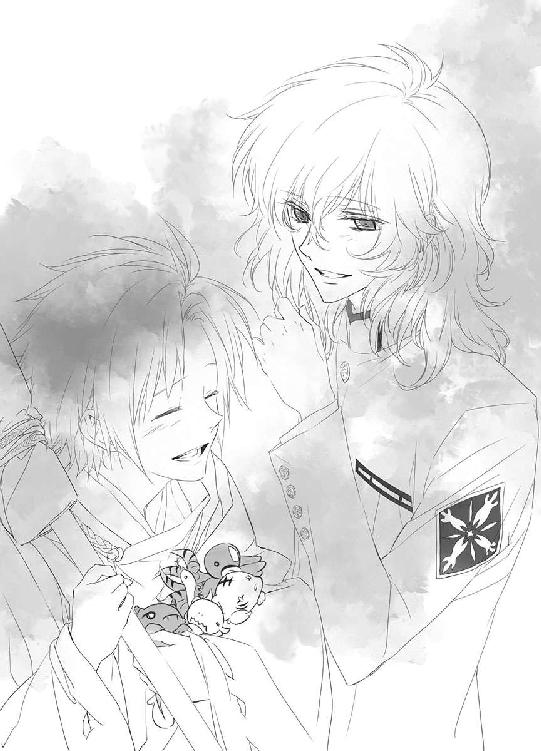
ひとしきり笑って、若様は蒼司朗に訊ねる。
「どこか具合が悪いのではないな」
体調の悪い人間は、走って逃げたりなんかしない。摑んだ手や肩も、冷たかったり熱かったりという様子はなかった。
「元気のない様子に見えたが、何かあったのか？」
耳に心地いい涼やかな声に、蒼司朗は自嘲気味に笑う。
「えーっと、ちょっとばかり反省と自己嫌悪を」
「ミギュギュ」
「キュイキュオ」
「ピチュ」
「「（しゅー）」」
だから慰めてたの、とピヨ四神は自慢気に鳴く。
ピヨ四神語は、若様にも通じないけれど。
「そうですか」
にこりと微笑んだ若様は、そっと手を伸ばして、蒼司朗に抱っこされているピヨ四神の頭や喉を優しく撫でた。
「キュァン」
「キュウ」
「チュン」
「「（しゅー）」」
金の髪キラキラのお伽話の王子様そのものの若様に可愛がられ、ピヨ四神は甘ったれた声で鳴いて、若様に飛びついた。
「くすぐったいですよ......」
ぽわぽわの柔らかい毛や小さな舌でくすぐられ、ピヨ四神を抱っこした若様は、くすくすと笑う。
蒼司朗は、自分がピヨ四神に甘えられることはあっても、ピヨ四神が他の誰かに甘えてじゃれついている姿を見ることはほとんどない。
（うっわー......！）
見目麗しい若様の、あどけない笑顔と、ちびっちゃくて可愛い四神様が戯れる様は、身悶えそうなほどの癒し系！
これは眼福♡
ひとしきり若様と戯れ、ピヨ四神は綺麗で可愛らしい若様に恥ずかしくなって、ぴょんと飛んで蒼司朗にくっつき、神官装束に隠れた。
「こらこら......！」
「（ミギュギュン）」
「（キュイィ）」
「（ピー）」
「「（しゅー）」」
きゃっきゃと興奮してピヨ四神は隠れながら、ごそごそする。
「あぁ、もう☆」
もうちょっと愛でたかったのにと、蒼司朗は口を尖らせた。
「驚かせて、すまない」
若様に詫びられ、蒼司朗は慌てる。
「いえ、そんな......☆ オレこそ、いきなり逃げだして、失礼しました......！ せっかく声をかけてくれたのに」
「いや、それは、別に構わない......、気にするな」
「ありがとうございます、本当に」
蒼司朗は大きく身体を折って、若様にお辞儀する。
そういえば、と蒼司朗は思い出す。
（若様は蓮華の花で冠を作ったり、蜜を吸ったりしてた）
この奥庭はピヨ四神の庭だが、帝と若様にも門戸の開いている場所だ。
「時々奥庭にいらっしゃるんですか？」
「......たまに」
訊ねた蒼司朗に、若様は少し視線を逸らして答えた。痕跡を残さないよう、注意している若様は、時々奥庭で遊んでいるのを蒼司朗に言うのが、恥ずかしかった。
「────朝の散歩のときに、父上はよく通り抜けておられる」
自分のことでなければ、教えるのは恥ずかしくない。
帝が奥庭を訪れていることに蒼司朗は驚き、そして思い至る。
（お堀に向かう近道だ）
帝が早朝の散歩で、内堀の外の帝都城公園を散策されることは、帝都城で仕事をしている者なら誰でも知っている。聖域であり、少し曲がった空間である奥庭は、通り抜けるとショートカットできるし、何より安全だ。
不穏な予感で目覚めたピヨ四神に叩き起こされて、早朝から襲われそうになった帝を守るため、蒼司朗はお庭番として曲者と戦ったことがある。
いくら帝都城を守る四神様の神聖な庭でも、通りたくないと感じた場所に、帝は何度も足を運ばないだろう。
（そうなんだ......）
好ましい場所として、帝にも門を開いてもらっていることがわかり、蒼司朗の胸の奥が温かくなる。
蒼司朗が手入れしている奥庭は、良質の緑肥のおかげで土質だけは自慢できるようになったが、まだまだ殺風景で、ちっとも綺麗な場所じゃない。だがピヨ四神だけじゃなく、帝も若様も楽しみにして、蒼司朗が手入れする奥庭の完成を静かに見守ってくれている。
（もっとお言葉をいただければいいのにな）
帝都の帝や若様に、蒼司朗のような見習い庭師が直接お言葉を賜るのは、畏れ多いことだとわかっているけれど、この奥庭は奥庭の四神の庭であり、帝と若様の庭だ。望まれることがあるのなら、応えていきたい。
奥庭を管理する庭師である蒼司朗が、はっきりした行動に出たのなら、帝や若様も何か意見を出しやすいかもしれない。
（オレががんばらなくちゃ！）
蒼司朗は若様ににこりと笑って、庭木を指さす。
「あれ、先週植樹した木です」
御覧くださいと若様を誘って、蒼司朗は木に近寄る。
「ミギャギャ」
「キュアキュア」
「ピチュチュピ」
「「（しゅー）」」
蒼司朗にくっついているピヨ四神が、木を見上げて興奮気味に鳴く。
振り向いた蒼司朗は、若様に訊ねた。
「何の木かわかりますか？」
葉はすべて落ちて、枝と幹だけの木だけれど。
近づいて、若様は間近で木を眺める。これと似た木は、帝都でもよく見かける。帝都城公園にもあるので、幹に見覚えがある。
「桜だな」
「佐藤錦ですよ」
蒼司朗の言葉に、若様はきょとんと目を瞬く。
「それは────」
桜の花の品種ではない。
微笑んで、蒼司朗は頷く。
「桜の木ですが、実の成る果樹です。伯父に手配してもらって、サクランボ農家の人から、甘くて大粒の実の成る木を一本、譲り受けました。桜の木は扱いが難しいから、移植してもしっかり根がつくまで、まだしばらくは触らないようにしないといけないんですけど」
機嫌よく鳴いているピヨ四神を撫でて、蒼司朗は木を見上げる。
「春に花を咲かせて、六月頃、実をつけたらいいですよね」
薄紅の花と、艶々したサクランボの実。奥庭のサクランボはきっと、ピヨ四神のお気に入りになる。
「甘い実が成るように、オレ、がんばります」
優しい笑みを浮かべて木を見上げている蒼司朗は、サクランボを喜ぶだろうピヨ四神のことを考えてこの木を選んだのだと、若様にはわかった。
蒼司朗の手から嬉々としてサクランボを食べるピヨ四神の姿は、想像するだけでも可愛くて嬉しくなる。
「うん。僕も楽しみだ」
蒼司朗が心をこめて手入れした木のサクランボなら、ピヨ四神はどんな有名店の果実より、美味しく味わうことだろう。実が成り始めた頃から、大はしゃぎするに違いない。
春にはお花見。初夏には収穫。奥庭では若様が知らない間に、楽しい計画が進行している。
「オレは庭師として、まだまだ見習いで、教えてもらって勉強することばかりです。帝や若様のご希望があれば、それに応えていきたいと思ってます。そして、もし気づかれたことがありましたら、何でもいいです、知らせてもらえたら、とても助かります。若様に対して、図々しいお願いですけど」
「いや、そんなことはない」
頭を下げた蒼司朗の言葉に、若様は緩く頭を振る。
「気づいたことがあれば、すぐに知らせよう」
それはすなわち、奥庭の四神様のためにもなる。
協力すると言ったものの、若様は考える。
（望月蒼司朗に知らせるには......）
蒼司朗は見習い庭師の修業をしながら、神官の修行をしている。分刻みで行動しているのは、蒼司朗も若様も同じだ。
学校が冬休みに入ってしまった今、若様と蒼司朗は道ですれ違うこともほとんどない。人伝てに、若様が用事があると言ったなら、蒼司朗はやっていたことを中断して時間を空けるだろうし、周りの者たちも若様を優先して、手を止めるよう蒼司朗に許可するだろうが、それは若様の望むことではない。
お互いの予定を妨げることなく、直接顔を合わせて話をする時間なんて、果たしてとれるだろうか。あまりにちょっとしたことなら、急がなくてもいい気がするし、日が経つと伝える前に忘れてしまうかもしれない。些細なことでも、忘れてしまうのはよくないだろう。
思案する若様に、蒼司朗は言う。
「誰かに伝言とかだと、聞き間違っちゃうかもしれませんから、あそこの石灯籠の中に、メモを入れておいてください。必ず見つけますから」
石灯籠の開口部を利用すれば、雨風も気にせず、こっそりとメモを残すことができる。
「わかった。そうしよう」
それなら誰かを煩わせることもなく、若様の言葉は確実に蒼司朗に伝わる。
にっこり微笑んだ若様に、甘え声でピヨ四神が鳴いた。
７
清志朗が普通にしていたので、蒼司朗も何ごともなかったかのように振る舞った。隠しごとがあってもなくても、蒼司朗と清志朗が従兄弟であることは変わらない。隠しごとのひとつやふたつで、蒼司朗が清志朗を敬遠するはずもない。
希望者を対象とした神官の補習実習の期間も終わり、蒼司朗の神官修行も冬休みに入った。帝都学園の学生寮も新年を含む冬季帰省期間になり、蒼司朗と清志朗も実家である望月造園に戻った。
早朝から奥庭の庭仕事をするのは変わらないが、高校で勉強していた時間や、神官修行に使っていた時間が、望月造園の仕事に割り当てられるようになって、庭師見習いの蒼司朗としてはかなり嬉しい。
庭師見習いの仕事と言っても、まだ雜用ばかりだが、それでも一人前の庭師、帝都一の一流の庭師の作業を間近で見られるのは、とても勉強になる。
「────あれ、鈴宮神官じゃないかな？」
愛用の枝打ち斧を紐で担いで両手を空け、帝都大通りでの作業、庭師が切り落とした剪定屑を庭箒で掃き集めていた蒼司朗は、向こうの通りにいる男性を見つめて首を傾げる。
「帝都神社の神官、辞めたわけじゃないよなぁ」
神社でいつも見ている神官装束ではなく、帝都城下清掃局作業員の制服である黒子姿なので、一瞬別人に見えたが、確かにあれは鈴宮神官だ。
帰省中なので、早朝の奥庭での作業を終わらせた後の蒼司朗の朝ご飯は、望月造園に戻ってから食べるようになっていた。このところ社務所には着替えに行くだけになってしまったが、蒼司朗はここ何日間か、鈴宮神官の顔を見ていない気がする。
帝都神社で一番若い神官である鈴宮神官は、優秀な神官であり、実家も由緒正しい有名神社だ。帝都神社に居辛くなるような大きな失敗をするはずもない鈴宮神官が、神官を辞めるわけはないと思うのだが。
蒼司朗の声に、軍手を嵌めて大きな剪定屑を拾っていた清志朗が振り向く。新年を迎えるための年末の帝都大通りでの剪定作業では、見習いは鋏を持たせてはもらえないので、清志朗も雑用係だ。
「あぁ、うん、鈴宮神官だね。向こうのマンホールのところには、水道局員の格好をした新庄神官がいたよ。きっと、もうすぐ年末の『蟲呼びの夜』だからだよ」
年末の『蟲呼びの夜』だけは、その数日前から帝都の神官たちは、隠れている蟲を追い出す作業に入る。
通常の『蟲呼びの夜』は、帝都城下に処理しなければならない量の蟲が溜まったときに行われるが、年末の行事の『大祓』の前に行う『蟲呼びの夜』は、蟲の量に関わらず、暦で区切って行う。
年末の『蟲呼びの夜』の前には、畳を上げて大掃除するように、帝都神社と四神神社の神官たちは帝都城下を回り、隠れている蟲を積極的に追い出す。公務員の制服を着た神官が、帝都城下で作業をしているのは、蟲を追い出すためだ。
「へーえ、大変だなぁ......」
「ミギャ」
「キュイ」
「ピチュン」
「「（しゅー）」」
蒼司朗の髪や法被の間から顔を出したピヨ四神も、しみじみと作業中の鈴宮神官を見つめる。
ダミー作業だが、帝都神社の神官になって、まさか清掃局員姿で帝都城下を回ることになるとは、想像もしていなかっただろう。
「採用されるのも難しいけど、帝都の神官は大変だよ。だから、五年から十年で出て行っちゃう人も多いみたいだね。帝都の神社の神官だったって経歴があると、箔がつくから」
「ふーん......」
そういうものなのかと頷きながら、剪定屑を掃き集める蒼司朗に、清志朗は言う。
「うち（望月造園）の庭師の人だって、そうだよ」
帝都城お抱え庭師のところで働いていたということは、帝都の外で庭師として働くときに、立派な経歴となる。
「それから、蒼くんは、帝都の庭師の誰より凄いよ」
「へ？ オレ？」
きょとんとする蒼司朗に、清志朗は力強く頷く。
「蒼くんは、帝都城の奥庭のお庭番なんだから。選ばれただけでも、自慢できる素晴らしいことだよ」
「いや、選ばれただけじゃ、自慢なんてできないって！」
蒼司朗は朗らかに笑い飛ばし、塵取を傾けて、掃き集めた剪定屑を自分の麻袋にざくざくと詰める。
（そうだね。蒼くんなら、絶対にそれだけで終わらせない......）
何らかの結果が出せるまで、成し遂げるまで、蒼司朗はきっと努力し続ける。一員として認められただけの、スタート地点、実のない経歴など、数に含めたりはしない。
高校生活を送りながらの庭師見習いの仕事と、奥庭の管理と神官修行でどんなに忙しくても、蒼司朗は全部に手を抜かない。
入学した高校はきちんと卒業するだろうし、時間がかかろうと、一流の庭師としての力を身につける。神官たちを納得させ、奥庭の管理者として認められるために、神官の資格も取るだろう。奥庭はきっと、素晴らしい庭になる。
（僕は蒼くんみたいに、強くない......）
入学がとても難しい学校に、試験を受けて合格した人は、それだけでも凄いかもしれないが、卒業しなければ学歴にはならない。三年通って卒業する学校は、入学式の一日だけ行った人も、二年半通った人も、卒業できなければ同じく『中退』になる。
履歴書に記載することができない、入学や中退のように、途中で投げ出したり、逃げてしまったことでも、入るだけでも難しいところなら、それを自慢として言ってしまう者は世の中に案外多い。やり遂げられなかったのに、口外を慎むべき、恥ずかしいことだとして、封印してしまうことはない。
もしも、清志朗が帝都を出て行かなくてはならない日がきても────。
（僕は......）
庭師以外になるなんて、望月造園で生まれ育った清志朗は、考えたこともなかった。毎日続けても苦にならないのは、庭仕事だけだ。だからきっと、庭仕事しかできない。帝都の外でも、庭師としての職を求めてしまうだろう。
帝都城お抱え庭師の息子ですとは、恥ずかしくて言えなくても、帝都の望月造園にいたことは、言ってしまう────。
「ピ」
突然、左肩の上で聞こえた鳴き声に、清志朗はびっくりする。
肩の上に、赤い小鳥────、チビ朱雀が乗っていた。
「え......？」
円らな瞳で自分を見つめているチビ朱雀を、清志朗は驚いて見つめる。
「ピ、チュチュピ」
清志朗に向かって、愛らしい声でチビ朱雀が囀る。
（なん、で......）
こんなところに、蒼司朗にくっついているはずの奥庭の四神の朱雀様がいるのか。いや、それよりも、引っかかることがある。
「ピピピピピ」
囀るチビ朱雀を、清志朗はまじまじと見つめる。
蒼司朗に懐いている奥庭のピヨ四神は、守護領域や神聖な結界領域以外では、霊力のない者に姿は見えない。望月造園が作業しているのは帝都大通りの街路樹で、ピヨ四神の姿が見えないはずの場所だ。
清志朗には、ピヨ四神を見られる霊力はない。霊力が身につくような、修行もしていない。ただ見習い庭師として、剪定屑を拾う作業をしていただけで、突然に霊力に目覚めるような突発的な事件、大きな事故に遭ったわけでもない。
（えーっと......！）
蒼司朗はどうしているのだろうかと、清志朗は慌てて蒼司朗の姿を探す。
さっき見た場所から蒼司朗は少し移動して、せっせと箒で剪定屑を掃き集めていた。
蒼司朗に何かあって、清志朗に知らせに来た、というわけではないらしい。
「ピ、ピ、チュチュピ、チュピチュピピ」
小さな手羽をぽふぽふ動かしながら、チビ朱雀は清志朗に囀る。
何か訴えかけている、ようなのだが......、四神語は清志朗にもわからない。ただ、チビ朱雀の鳴き声は、とても愛らしく耳に心地いい。
清志朗はチビ朱雀に微笑みかける。
「ありがとうございます」
こんな場所で可愛い姿を見せて、綺麗な鳴き声を聞かせてくれて。
（でも、どうして......）
「蒼司朗様の大切なものは、奥庭の四神様にとっても大切だからだと思います」
聞こえた声に、はっと清志朗が振り向くと、白百合女学院の制服姿ですぐ近くの歩道にいた柳生真純が会釈した。
「清志朗さんの元気がないと、蒼司朗様が心配なさいます」
柳生真純は清志朗ににこっと微笑んで、蒼司朗のところに走ってゆく。
清志朗は、柳生真純の言葉にゆっくり目を瞬く。
（僕のことを、心配して......？）
「ピピチュン」
清志朗に見つめられたチビ朱雀が、囀って、くりっと首を傾げる。
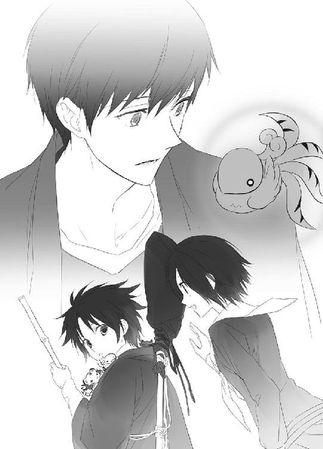
「蒼司朗様」
「ミギャギャ」
「キュイ」
「「（しゅー）」」
ピヨ四神に教えられるように手を止めた蒼司朗は、柳生真純に振り向く。
「こんにちは、柳生さん。『蟲呼びの夜』のこと？」
「はい。明後日の夜になります。蒼司朗様は......」
「夕方の奥庭の手入れが終わったら、その足で帝都神社に行きます」
柳生真純が言いかけた言葉に被せるように、蒼司朗は言った。
奥庭の四神と行動を共にしている、奥庭のお庭番である蒼司朗は、四神の戦士と同じように行事に参加しろと、小此木神官長に言われた。柳生真純も、そう伝えるように命じられただろうと蒼司朗にはわかっていたが、それは神官候補生の行動ではない。一流の庭師になるために帝都に来た蒼司朗だが、せめてこういう行事のある日だけは、奥庭の庭師であり神官候補生としての行動を優先させたい。その我が儘は、望月造園の親方である伯父もきっとわかってくれる。
「────はい。そのように神官長にお伝えします」
蒼司朗の意思を尊重し、柳生真純は恭しく頭を下げる。
奥庭の管理者であっても、蒼司朗は神官候補生として修行している。夕方から帝都神社に入って、悪いわけではない。
「よろしくお願いします。わざわざありがとうございました」
連絡係を務める柳生真純の仕事ではあるが、見習い庭師として作業している場所にまで足を運んでもらって、と蒼司朗は会釈した。────動かした頭に、何だか違和感☆
頭の上が寂しいことに、蒼司朗は気づく。
「あれ？」
「ミギャ」
「キュイ」
「「（しゅー）」」
聞こえる鳴き声もひとつ少ない。
そっと頭に触れて確認したが、チビ朱雀がいない。
（ど、どこに行った!?）
そして、いつからいなかったのだろう!?
慌てる蒼司朗に、くすくすと柳生真純は笑う。
「あちらにいらっしゃいます」
柳生真純の視線を追った蒼司朗は、清志朗の肩に乗っているチビ朱雀を発見した。
「スー！」
「ピチュピ！」
蒼司朗に呼びかけられて、清志朗の肩に乗ったチビ朱雀は、機嫌よく手羽を動かして鳴いた。
くすくすと笑いながら、伝令の役目を終えた柳生真純は、お辞儀してそっと立ち去る。
蒼司朗はその場に道具と麻袋を置いて、慌てて清志朗に駆け寄った。
「ごめん、清ちゃん！」
「いや......」
清志朗はチビ朱雀を見て、苦笑する。
「ピ」
清志朗と顔を見合わせるように鳴いたチビ朱雀に、あれ？ と蒼司朗は思う。清志朗とチビ朱雀の視線が、ちゃんと合っているように見える。
「────もしかして、見えてる？」
おずおずと訊ねた蒼司朗に、清志朗は微笑む。
「うん、この朱雀様だけね」
「チュン」
ちっちゃな手羽を広げたチビ朱雀は、飛ぶというより元気よく跳んで、清志朗の肩から蒼司朗の頭の上に戻った。
チビ朱雀が戻ってきても、聖獣なので衝撃は何もないのだが、つい反射で蒼司朗は肩を竦めて目を閉じる。
蒼司朗の頭に乗ったチビ朱雀は、いつもの定位置で、お尻をむにむにして座り心地を整え、ちょんと収まった。
「ミギャギャギャ」
「キュイキュオ」
「「（しゃー）」」
「ピピ、ピチュチュン」
ピヨ四神間で何ごとか会話したようだが、ピヨ四神語は蒼司朗には翻訳できない謎言語だ。
ひとしきりピヨ四神たちは語り終えたようなので、蒼司朗はチビ朱雀に話しかける。
「スー、一人で黙って離れたら、オレ、心配するよ？」
「チュン」
「清ちゃんの仕事の邪魔しに行っちゃダメだぞ？」
「チュピチュピ」
「励ましてくれたんだよ」
チビ朱雀を見つめて、清志朗は優しく微笑む。
「え？」
蒼司朗は清志朗の言葉に、きょとんと目を瞬く。
ピヨ四神は、必要だと判断したなら、守護領域や聖域や結界の中以外でも、姿を見せる。
作業している清志朗が、どうして励まされなければならないのか、蒼司朗にはわからないけれど、悪戯や作業の邪魔をしに行ったのではないらしい。
蒼司朗にくっついているピヨ四神の中でも、頭の上に乗っているチビ朱雀は、視点が高いので、広く見渡せる。蒼司朗が仕事をしていても、ピヨ四神は暇だ。蒼司朗の見えない何かが見えたのだろう。
「......そっか。清ちゃんを励ましてくれたのか」
「うん」
「ピピチュ」
「ありがとう、スー」
蒼司朗はチビ朱雀を手に乗せて、いい子いい子と可愛がる。
「チュピチュピ、ピルルン」
蒼司朗に指先でちょいちょいされて、チビ朱雀はくすぐったそうに目を瞑って囀った。
チビ朱雀と戯れながら、蒼司朗は清志朗に訊ねる。
「大丈夫？ 清ちゃん」
「うん。大丈夫だよ」
チビ朱雀がちょこんと乗っていた肩が、まだほのかに温かいような気がして、清志朗は微笑みながら作業に戻る。
（誰かが大切に思う人を、大切にしてくれる......）
柳生真純に教えられたことを、清志朗は胸の中で反芻する。
それはとても嬉しくて、素敵なことだ。
誰かを愛するときに、絶対に忘れてはならないことだ。
（蒼くんの四神様は、優しいね）
見かけは赤ちゃん動物そのもので、皆確かに可愛いけれど、大事な従兄弟の蒼司朗が奥庭の四神に便利に利用されているような思いが、刺さって抜けない小さな棘のように、清志朗のどこかに残っていた。
蒼司朗の思いを知らなかったとはいえ、望月家の家宝である『緑の石』の力を、蟲の浄化のために使って、蒼司朗の心を傷つけたことも、気に入らない。そして、奥庭の管理者という特別職に就くのは、庭師としては最高の栄誉であり魅力的だけれど、それとペット（？）の世話は、これまでのお庭番の例から考えても、基本、ワンセットではないはずだった。
慣れない帝都で高校に通って勉強しながら、やらなければならないことが増え、人間関係も難しくなった蒼司朗の苦労を考えると、清志朗は手放しでは喜べない。
皆に心配をかけないように、蒼司朗は弱音を吐かないが、奥庭の管理者に選ばれた蒼司朗は、清志朗が介入できない場所で、精神的にも体力的にも、大きな負担を強いられている。奥庭の四神の力を駆使できる四神の戦士に変化し、蟲を浄化できるのは、本当に素晴らしいが、そのせいで蒼司朗はこれまで何度も病院に運ばれて入院していた。
四神変化後の蒼司朗の状態は少しずつ改善されていても、清志朗だけでなく望月造園の皆は、蒼司朗の身体に負担となる四神変化なんて、しないほうがいいのにと心の中で願っている。
だが、蒼司朗はちゃんと、奥庭の四神様に大切にされていた。奥庭の四神様も、蒼司朗を守りたいと思ってくれている。はっきりそれがわかって、清志朗は安心した。
「ミゴゴ」
チビ朱雀を頭の上に戻して、放り出した作業場所に急いで戻った蒼司朗を見上げ、胸元から顔を出したチビ白虎が鳴いた。
「え？ 何？」
「キュイキュイ」
蒼司朗の肩におぶさったチビ青龍も、ねぇねぇと言うように鳴きながら、もにもに動く。
「は？」
「「（しゅー！）」」
法被のポケットから顔を出したチビ玄武が、こっちを見て見てと舌をぴろぴろさせる。
「んん？」
「ピ、チュッチュピピ♡」
頭の上のチビ朱雀が勝ち誇ったように囀って、何となく蒼司朗は、チビ白虎たちが何を訴えているかが想像できた。
スーちゃんだけ、ちょいちょいしてもらって、ずっるーい！
構ってー！
蒼司朗が甘やかすと、ちょっとごねたら構ってくれるものだと、ピヨ四神は覚えてしまう。懐いてくれるのは可愛いが、悪い癖がついてはいけないので、蒼司朗は心を鬼にする。
「オレは仕事中！」
だから、遊んであげられないの！
「「「「ぶー！」」」」
チビ朱雀のように構ってほしかったチビ白虎たちが、鼻を鳴らしてブーイングした。
思ったとおりの反応に、蒼司朗は笑う。
「また休憩時間になったらな！」
だから、今はいい子で我慢！
「ピー！」
作業再開の合図のようにチビ朱雀が鳴き、蒼司朗は言い聞かせるように、チビ白虎たちを一撫でして、箒を握る。
ちょびっとだけ蒼司朗に撫でられて、んむんむと口を動かしたチビ白虎たちは、まぁいっかと、機嫌よく顔を引っこめた。
蒼司朗にくっついているピヨ四神が何か言っていたようだが、清志朗にはもうチビ朱雀の姿は見えない。
作業を再開した清志朗は、剪定された枝を拾って袋に詰める。
（帝都を出る日のことなんて、今はまだ考えなくていい）
（できることから、今は精一杯やっていくんだ）
深い意味はなかったのだろうが、帝都城を守護する奥庭の四神、蒼司朗を好いている可愛い四神に、気にかけてもらえる存在であることが、清志朗は泣きたいくらいに嬉しかった。
聖獣である四神は、穢れた醜悪なものには寄りつかない。
ちっぽけな自尊心のせいで浅はかで愚かな行為に走ったと激しく後悔している清志朗だが、忌まわしく穢れた人間だと己を卑下し、嫌悪するほどの人間ではないのだと、奥庭の四神、小さな朱雀様が教えてくれたようで、気持ちが軽くなった。
（まだ何も諦めなくていい......！）
時間の猶予が十分にあるのかはわからないけれど、駄目だったときのことばかり考えていては、一歩も前に進めない。一歩でも、半歩でも、帝都一の庭師という目標に向かって進んで行けばいい。結果を突きつけられるのは、まだ先の話だ。
（蒼くんは、前だけを向いてる）
真っ直ぐ目標を見つめて、迷うことなく。
奥庭の朱雀様に励まされ、明らかに肩の力が抜けた清志朗を通りの向こうから眺め、くすっと小此木神官長は微笑む。
「いやぁ、若いっていいですねー♡」
「若作りして、さぼってないで仕事してください！」
呉服屋か何かの遊び人の若旦那のような格好でぶらぶらしながら、通りすがりの屋台で買った焼き芋を食べている小此木神官長に、清掃局員の黒子姿で榊の枝を振って物陰に潜む蟲を追い出しながら、鈴宮神官が口を尖らせた。
「いえいえ、仕事してますよぉ？」
焼き芋を頰張りながら、小此木神官長は袂からいそいそと和綴じの帳面を取り出す。
『帝都城之四神 成長記録帳』
まだ幾度も開かれていないような真新しい帳面に、鈴宮神官は胡乱な眼差しを送る。
「観察日記は、毎日つけなくちゃ駄目です」
「ハイハイ」
適当な返事をして、小此木神官長は焼き芋の残りを銜えながら小筆を握った。
（情緒面も、素敵な具合に育ってますね）
お気に入りの蒼司朗と自分たちや、帝都城で特別な地位や注目される力を持つ者だけでなく、蒼司朗を取り巻く、周りの普通の者たちにも、ピヨ四神は配慮するようになってきた。
優しく思いやりがあるのは、とてもいい傾向だ。
８
年末の『蟲呼びの夜』は、造園業社や工務店、左官屋、道路整備局の職員、帝都城で働く者たちにとっても、その年最後の大仕事である。四神神社の四神の戦士たちによって、処理される蟲がどういうふうに暴れて、何を破壊するかわからないので、おのおのとにかく全力での復旧を決意している。
蟲が処理されるのは、夜半。そして帝都城下の住民の生活に支障をきたさないよう、そこで何があったのか気づかれないように、夜明けまでに復旧と撤収を完了しなければならない。そしてもしも、時間内に終えることができず、不完全な修復箇所が残ってしまったなら、それは年末の作業に上乗せということになる。
『蟲呼びの夜』の復旧作業担当者にとっては、『蟲呼びの夜』のある日の午前中で通常業務での年内の作業は終えられ、『蟲呼びの夜』での作業が本当の仕事納めになる。郷里に帰省する予定の者は、復旧作業が終わるまで、もちろん帰れない。予定どおりに仕事納めにし、気持ちよく新年を迎えるためには、この一夜が勝負だという気合いと覚悟が欠かせない。
世間的には、望月造園はこの午前中で仕事納めになり、今日の作業はごく軽いものなのだが。
「うわー、何か、すっげ気迫感じる☆」
ひょっとすると殺気に近いかもしれない。
『蟲呼びの夜』は夜半であるため、午後の仮眠のためのアイマスクと耳栓を、朝から法被のポケットに入れて準備を完了している庭師たちが発しているものに、蒼司朗は圧倒される。
移動に使うトラックの荷台に乗りこみながら、周りの庭師たちの様子に目を丸くしている蒼司朗に、清志朗は笑う。
「僕は、あぁ、年末が近いんだなぁって、思うけどね」
まさに例年どおりの雰囲気。
蒼司朗に続いてトラックに乗りこんだ清志朗は、発進時やカーブで蒼司朗が転げ落ちないよう、さりげなくガードできる位置に座る。
全員ちゃんと乗りこんだか、忘れ物はないかの確認の声があり、三台のトラックは望月造園を出発した。
「────蒼くん、無理しないでね」
部外者が差しでがましい発言は控えたいのだけれどと、遠慮しながら言った清志朗に、大事に枝打ち斧を抱えて座っていた蒼司朗は、快活に笑う。
「うん。小此木神官長は、見学で参加するようにって言ってた。実際、オレは神官候補生で、まだ正式に神官になってもいないしね」
蒼司朗は学ぶことだらけという状態で、本来なら見学すらおこがましいのだとわかっている。
「ミギュ」
「キュウ」
「チュピ」
「「（しゅー）」」
「うん、見学な」
見るだけなの？ と、きょろんと顔を出したピヨ四神を、蒼司朗は優しく微笑んで撫でておく。
蒼司朗の言うことをきく、いい子でありたいピヨ四神は、撫でられて機嫌よく一声鳴いた。
奥庭の四神様に気に入られているからと、いい気になって出しゃばって、天の戦士として四神変化するつもりは蒼司朗にはない。
（よかった......）
蒼司朗が入院した病院で新年を迎えることはなさそうだと、清志朗は安堵する。
ピヨ四神の姿は見えないので、蒼司朗の動きから何をしているのか推測した清志朗は、頃合いをみて話を続ける。
「中高生で四神の戦士となった今期の四人は、同学年だったり、同じ学校に通っている生徒にとって、顔も名前も知っている存在だよね」
「うん」
奥庭のお庭番云々のことがあり、蒼司朗は清志朗に教えてもらったが、帝都学園高等部の生徒や教職員は皆、蔵田実親や篠原勇輝に敬意を払っているのを、蒼司朗は見てきた。
「でもね、蒼くん、その他の帝都の人たちは、四神神社の四神の戦士を敬っていても、四神神社にいるときに神官や巫女の格好をしているのを見たり、新嘗祭の行事で仮面舞踏を眺める機会があるぐらいなんだ」
「あぁ、うん、そうだね」
蒼司朗は頷く。
今期は○○さんが四神の戦士なのだと知って、敬意を払っていても、神官以外の者が、蟲に関わる神聖な戦装束である四神の戦士の鎧姿を見ることはない。
「四神の戦士のお役目に就いた人は短命らしいって噂を聞いて、それは大変だなって思っても、四神の戦士の人たちがどんな活動をしているのかはよく知らない。『蟲呼びの夜』や、帝都神社の神官たちと行うその他の行事に関わることは、一般の帝都民には知らされないしね」
清志朗が四神の戦士に関する事情に通じているのは、『蟲呼びの夜』の事後処理、復旧作業を受け持つ造園業の関係者だからだ。
「今日はオレ、『蟲呼びの夜』の篠原たちを、清ちゃんたちの分まで、しっかり見るよ」
これまでは途中からの飛び入り参加だったり、まだよくわかってないままの参加だったりで、近くの蟲に気を取られて周りを見回すだけの余裕がなく、四神変化した篠原勇輝たちがどんなふうに蟲と対峙するのか、蒼司朗はきちんと見ていない。
「うん。ちゃんと見て、しっかり覚えてあげてね。四神の戦士って、過酷で、そう長くは続けられないものだから」
「え？」
「一人の人が四神の戦士を続けられるのは、平均して、十年くらいなんだって」
代々の四神の戦士は二十代前後で、お役目を継承する。三十代にもなると、四神変化に必要な体力と精神力が維持できなくなる。今期の四神の戦士は、四人ともとても優秀だったので、歴代の四神の戦士よりも数年早く、お役目を継承した。
四神の戦士たちは、帝都を陰から支え、そして静かに現役を退き、活動を終える────。
「......十年......」
蒼司朗は啞然とする。しかし、自分がピヨ四神の力で四神変化したときの過酷さを考えれば、その年数は納得できる。
そして、具体的なタイムリミットを目の前に突きつけられると、ぞっとした。
「スポーツのプロ選手みたいだよね」
「うん......」
一流のプロとしての動きができなくなったとき、多くのスポーツ選手は引退を決意する。だが、それは技術で魅せる力の限界であって、命の危険を感じて現役を去る者はいない。
（......四神の戦士が代替わりするときって、たぶん、相当身体に無理がきてるときだ）
四神の戦士が誰も短命なのはきっと、命を削って戦っているから。
どれほど辛くても、意地でも弱音など吐かないだろう彼らが、蒼司朗にはわかる。
帝都民のために命を削るような思いをし、身体を極限まで酷使しながら、四神の戦士の活動は神官以外が知ることはほとんどない。
（オレは、ちゃんと見届けなくちゃいけない────）
それは立ち会うことを許された者の使命として。
自分のことで精一杯だった蒼司朗は、力及ばない自分がひどく恥ずかしかった。
帝都神社の本殿への神官の集合時間は、十一時だ。
望月造園の作業を一人だけ先に切り上げさせてもらった蒼司朗は、帝都城の奥庭の作業をし、奥庭にピヨ四神を待たせて枝打ち斧を置き、帝都神社に向かった。
（あ、四神神社の神官の人も来てるんだ）
帝都神社の神官の襷は黄、帝都城下の四神神社の神官の襷は、それぞれの聖獣が象徴する色の襷をかけているので、すぐわかる。
（篠原たちは、いないな......）
蟲呼びの夜に必要不可欠な四神の戦士で、特別待遇枠にある彼ら四人は、夜の帝都大通りでの作業時に出てくるのだろう。
「────蒼司朗様」
本殿に入ってきた蒼司朗の姿を見つけて、鈴宮神官が手招く。位も高く優秀だが、帝都神社で最も若い神官である鈴宮神官は、本殿の一番後ろの隅っこにいる。
奥庭のお庭番であっても神官候補生で、本来ならこの場にいることすら畏れ多い蒼司朗は、鈴宮神官のさらに下っ端だ。指導係をしてくれている鈴宮神官の後にくっついていれば間違いない。
「こんにちは、よろしくお願いします」
走ると叱られるので、早足でやってきてお辞儀した蒼司朗に、鈴宮神官は微笑む。
「今回の蒼司朗様は『見学』です。わたしたちの後ろの安全な場所から、しっかり見ててくださいね」
「はい、勉強させていただきます」
鈴が鳴らされ、前に注目と整列の合図に、本殿に集まった神官たちは、びしっと整列して本殿に正座する。
（うわー......、何か、すげー......）
ぴりぴりと張り詰めた空気は、これまでに蒼司朗が出場した剣道大会の比ではない。
「────『蟲呼びの夜』と『裏大祓』は、深夜から明け方にかけての作業になります。昼食以降は、十三時から五時間の仮眠を取り、班ごとに動いてもらいます。神官は各班長の指示に従って、速やかに行動してください」
小此木神官長は、班としての戦力や修行状況、全体的なバランスを考慮して編成された、今回の班の名簿を読み上げていく。
「（班は毎回、メンバーが変えられるんですよ）」
小声で鈴宮神官が蒼司朗に教えた。
「（そう、なんですか）」
教えられて、蒼司朗は考える。
（神官になっても、大変なんだな......）
修行を怠らず、常に能力に磨きをかけておかなければ、努力した者にどんどん追い抜かれる。穢れを撒き散らす蟲と対峙しなければならない帝都の神官は、身の危険があるので、厳しい。
（無知って、怖いな☆）
今更だが、蒼司朗は以前の自分の行動を大いに恥じる。出しゃばりまくったのだから、神官たちの反感を買って当然だ。
少々剣道の腕が立ち、霊力を使うことを覚えて蟲がいくらか自力で浄化できるようになって、行事への参加を許可されているものの、一人だけ神官候補生の蒼司朗は、ここでは戦力外の見学者だ。蒼司朗が振り分けられた班は、小此木神官長が班長を務める班で、鈴宮神官と同じ班である。
しかし、それよりも。
「（────『蟲呼びの夜』と、『裏大祓』？）」
眉を顰めて呟いた蒼司朗に、隣にいた鈴宮神官が頷く。
「（はい。例年どおり、まとめて一晩で行います。お知らせしたはずですが、伝わってませんでしたか？）」
「（あ、いえ......）」
柳生真純の伝言は、『蟲呼びの夜』についてだけだったが、続けて行われることならば、まとめて知らせたことになるのだろう。けれど────。
「（あの、大祓って、明後日じゃなかったですか？）」
「（はい。明後日です）」
確認した蒼司朗の言葉を、鈴宮神官は肯定する。
蒼司朗は難しい顔になる。
（......えーと）
大祓の日の前日は大掃除。大祓の日、各戸では大掃除で出たゴミを正午までに集積場に運び、蒼司朗が望月造園の仕事で配った藁巻を、お清めしてもらうために神社に持っていく。集まったたくさんの藁巻は、お祓いしてお清めされ、護摩壇のお焚き上げで処分される。
藁巻を運べば、ぼろぼろと細かい屑も落ちるだろうから、大祓の日の神社は、帝都で一番最後に大掃除をしなければならない場所に違いない。神社の表で行う、さっぱりしたありがたい行事の裏には、埃っぽい汚れた作業がある。
（裏方の掃除は、後じゃないのかな）
大祓は明後日なのに、今夜って？
何だか混乱しているような蒼司朗に、鈴宮神官は言う。
「（蒼司朗様、わたしたちが行うのは『裏大祓』ですよ）」
「（えーと......？）」
蒼司朗は目を瞬く。
（『裏大祓』？）
大祓の裏方ではなく？
蒼司朗は小此木神官長にフルーツパフェを御馳走になったときから、大祓の裏方作業にあたる清掃作業だろうと、さくっと勘違いしていた。
明け方まで時間をかけるようなので、何だか完全に別物のような気がする。
「（あ、あの、『裏』ってことは、普通の大祓とは違うんですか？）」
ここまで来て、物凄く今更だとは思うのだが、蒼司朗は小声で鈴宮神官に訊ねた。鈴宮神官は、口許に手を当てて蒼司朗に言う。
「（違います！ 全然違うものです！）」
慌てた様子できっぱり断言した鈴宮神官は、思案し、難しい顔で唇を嚙んだ。
「（......えーと、あの、鈴宮神官？）」
あまりに強い調子で言われ、困惑する蒼司朗に、鈴宮神官は意を決して言う。
「（────蒼司朗様は、『蟲呼びの夜』にだけ参加なさればいいです）」
「（でも、それは......）」
「勝手に予定変更しちゃ駄目ですよー？」
いつの間に近寄ったのか、すとんと腰を落として蒼司朗と鈴宮神官の前にしゃがんだ小此木神官長が、うふっと微笑んだ。微笑んでいても、小此木神官長の目はまったく笑っていない。
いきなり現れた小此木神官長に度肝を抜かれた蒼司朗と鈴宮神官は、はっと周りを見回す。
二人でこそこそと話していた間に、本殿にいた神官は整列して座していた場所を離れ、それぞれの班長のもとに集まって、打ち合わせをしていた。
第一班の班長である小此木神官長が、自分の班の神官である鈴宮神官と蒼司朗のところに移動してきたらしい。
小此木神官長と一緒に移動した二十人ほどの先輩神官たちに注目されて、鈴宮神官は緊張する。
「あ、あの、でも......！」
「蒼司朗くんの『裏大祓』への参加は、僕が決めました」
発言を遮るように言われ、鈴宮神官はびくりと肩を震わせる。
「は、はい！ すみません！」
決定権は小此木神官長にあり、鈴宮神官は意見できる立場にない。
差しでがましいことを言ったと、床に手をついて鈴宮神官が平伏したので、蒼司朗も同じように頭を下げた。
「それじゃあ、鈴宮くん、蒼司朗くんを社務所に連れて行って、時間までしっかり休ませてくださいね」
一番の若手でも、蒼司朗は奥庭の管理者であり、まだ成長期にある子供だ。他の神官と違う特別待遇は、お庭番という名誉職に就いているだけでなく、大人にとっての保護対象という意味もある。
神官は班ごとに宿直室や道場、別殿などに別れてそれぞれ食事や仮眠をとる。
蒼司朗が食事をとるのはいつもと同じく社務所であり、仮眠をとるのは、社務所の奥にある更衣室だ。奥庭の管理者のために仕度されている更衣室は、更衣室と呼ばれてはいても、ユニットバスもあり、旅館の一室のように広い。
奥庭に待たせていたピヨ四神を連れ、愛用の枝打ち斧を持った蒼司朗は、ピヨ四神と一緒にお昼ご飯を食べて、更衣室に仮眠（お昼寝？）をしに行った。
「......何か引っかかるんだよな」
「ミギュ？」
布団を敷きながら呟いた蒼司朗に、座敷でころころと遊んでいたピヨ四神が振り向く。
「いや、鈴宮さんって、すごくいい人だろ？」
「キュイ」
「小此木神官長は、ちょっとなぁ......」
「チュピピ」
神官長という聖職に就いているし決して悪い人ではないのだが、裏がありそうな人だ。
ピヨ四神にパフェを食べさせていて、いくらか気が逸れていたのは本当だが、小此木神官長は大祓の説明をして、さらっと蒼司朗が聞き流してしまうような言い方で、裏大祓に参加するよう言った。蒼司朗が裏大祓に参加することを知って慌てた鈴宮神官に、それ以上話させなかった態度からも、小此木神官長はどうも怪しい。
「......でも、参加しますって言っちゃったんだよな」
「「（しゅー）」」
どうも気持ちの悪いものを残しながらも、蒼司朗は腹を括る。
「さ、寝るぞ！ 皆、おいで」
目覚ましを仕掛け、カーテンを閉めて、布団に入った蒼司朗に呼ばれ、ピヨ四神は喜んで添い寝した。
９
午後六時まで仮眠をとるように小此木神官長が本殿で言っていたので、蒼司朗は午後五時半に鳴るように目覚まし時計を仕掛けていた。
「......んー......」
ぐっすりと眠って目を覚ました蒼司朗は、ぼんやりしながら時計を見る。
時計の針は、午後八時半を指している。
「え？」
（学校！）
遅刻する！ と慌てて飛び起きてから、蒼司朗は目を瞬く。カーテンの向こうが暗い。そして学校は冬休みだ。
「あー......『蟲呼び』だよ」
（目覚まし止めちゃったのかな）
ここでの泊まりのとき、何度も小此木神官長がこっそり部屋に入りこんでいるのを知らない蒼司朗は、目覚まし時計を止める変な癖がついただろうかと首を傾げる。
小此木神官長が侵入してもピヨ四神は爆睡しているし、目覚ましを止めに来た小此木神官長は何の痕跡も残してないので、蒼司朗にはわからない。
（ま、いいや、急がないと）
寝すごした蒼司朗は頭を搔いて布団から出、急いで身支度を整えた。
「ほら、お前らも」
布団を畳むため、蒼司朗は眠っているピヨ四神を抱っこして、座布団の上に移動させる。
「......ミゴ」
「......キュウ」
「............」
「「（......しゅー）」」
赤ん坊は寝るのが仕事だからなのか、ピヨ四神はよく眠る。布団を片づけても、くうくうとまだ眠っていた。
「────仕方ないか」
まだぐっすり眠っているピヨ四神を起こすのが可哀想で、蒼司朗はそっと枝打ち斧を握って、戸を開けた。
「ミギ！」
「キャオ！」
「ピ！」
「「（しゃー！）」」
廊下の光が部屋に差しこんだ途端、ぱっちりとピヨ四神は目を覚まし、きょろきょろと蒼司朗を探した。
「ミギャギャギャ！」
「キュイキュイキュイ！」
「ピ、チュチュピ！」
「「（しゃー！）」」
目標発見と、ロックオンして一直線に突進してきたピヨ四神に飛びつかれ、すりすりと甘えられて蒼司朗は苦笑する。
「行くぞ」
ピヨ四神をいつもの位置にくっつかせて撫で、蒼司朗は部屋を出た。
「お目覚めになりましたか、蒼司朗様」
廊下で逢った鈴宮神官に、蒼司朗は恐縮し、大きく身体を折って頭を下げる。
「すみません、寝すごしました！」
「いえ、今、起こしに行くところだったんです」
八時半過ぎと小此木神官長から指定されていた鈴宮神官は、起こす手間が省けたと微笑む。
「軽食の仕度ができてますから、どうぞ」
昼食後にすぐ寝て、現在に至るのだが。
「ミギャギャ」
「キュアキュオ」
「チュッピピ」
「「（しゃー）」」
「......食う気まんまんだな、お前ら☆」
何て食い意地が張っているのだろうかと呆れたが、蒼司朗も箸を動かし始めたら、案外ぺろりと一人前を食べつくしてしまった。
帝都で仕事納めの日となっている今日は、どこでもいつもより早く店仕舞し、帝都民は夜間の外出を控えて、早く帰宅する。街灯の消灯時間も、今日は早い。
「一年のうち、今夜の『蟲呼びの夜』だけは、少し早い時間に始まります」
食事を終えた蒼司朗は、鈴宮神官に連れられて帝都城に向かった。帝都城公園内の施設もすべて閉館し、遊歩道を散歩している者もいない。帝都城の内堀・外堀を警護する門番と公儀隠密によって、誰もいないことが確認されている。
神官候補生だが、お庭番である蒼司朗に任されたお役目は、若様の乗る牛車の警護だった。『審判の日』のように、枝打ち斧を持った蒼司朗は、鈴宮神官ら四人の神官と一緒に、牛車について帝都大通りへと向かう。
『審判の日』の牛車には、誰も乗っていなかった。若様は蟲を引き寄せる体質なので、神官は強固な結界で牛車を守り、牛車に乗る者の気配を完全に封じている。牛車の中はとても密やかで、何の気配も感じられないけれど。
「ミギュン」
「キュイ」
「チュン」
「「（しゅー）」」
若様がそこにいるのがわかるらしく、牛車を見つめて甘え声を出すピヨ四神に、蒼司朗は溜め息をつく。
「遊びに行く気分なら、奥庭でお留守番！」
め、と叱った蒼司朗に、ピヨ四神は蒼司朗を見上げ、慌てて神官装束や髪の間に引っこむ。
牛車は結界に守られながら、人が歩くぐらいの速度で優雅に進む。
鈴宮神官は蒼司朗に『蟲呼びの夜』の段取りを教える。
「帝都城下の門と駅は、九時で一時閉鎖されました。帝都城下の壁に向かった神官が結界を縮めて進み、蟲を帝都大通りに集めます。帝都大通りを中心とした結界領域で、四神の戦士の方々が中心になって、蟲の浄化を行うんです」
「はい」
（オレが帝都に来て、清ちゃんを追いかけた夜中、入っちゃったのが、その結界だったんだ）
普通の人なら行き止まりに見え、見えない壁で部外者の侵入を拒む結界領域に蒼司朗は入りこみ、帝都に潜む蟲の存在を知った。
「よく眠れましたか？ 今日は、若様の警護をお願いしますね」
先に帝都大通りに到着し、若様の牛車のための二重結界を準備していた小此木神官長は、玉串を握り、にっこり微笑んで蒼司朗を迎える。
愛用の枝打ち斧を持って形ばかりの警護についた蒼司朗は牛車の横に控え、一緒に来た鈴宮神官たちは、それぞれの配置につく。
「若様の結界を、ひとつ後ろへ！」
小此木神官長の命で、若様の牛車を守っていた二重結界のひとつが、牛車の後ろまで下げられた。
襲いかかる蟲に対しては障壁となるが、この結界は若様の存在を蟲に感知させる。
ぞわり。
穢れた気配が動くのを、蒼司朗は感じた。
（来る！）
「蒼司朗様！ 動かないで！」
鈴宮神官たちは、それぞれの武器を手に、蟲を浄化していく。神官たちが蟲を浄化するたびに、武器に下げられた小さな鈴が小さく鳴る。
物陰から飛び出した小さな蟲が、炎に飛びこむ羽虫のように、若様を守る結界へと激突し、火花と化して消滅する。
鈴宮神官が注意したとおり、結界の中にいる限り、蒼司朗の身は守られる。
（オレだけの力じゃ、無理だ）
周囲は暗くて視界も悪い。以前、まともに戦えたと蒼司朗が思ったのは、ピヨ四神の加護があったからだ。蒼司朗一人の力では、自分の身を守る結界すら作れない。
「ミギュギュ」
「キュイ」
「チュピ」
「「（しゅー）」」
顔を出したピヨ四神が、どうする？ と問いかけるように円らな瞳で蒼司朗を見上げる。
蒼司朗は緩く首を振った。
「いや、オレは戦わない。まだまだオレの出番じゃないよ」
（オレなんかの出る幕じゃない）
「オレは、見て、学ぶためにここにいるんだ」
（これが、オレが入ろうとしている、神官の世界────）
前を向いて顔を上げる蒼司朗に、ピヨ四神も円らな目を瞬く。
穢れを津波のように押し寄せながら、帝都の壁から進んできた神官たちが、近づいてきた。
「結界の固定にかかります！」
結界を受け持つ神官たちの位置を掌握している新庄神官の言葉に、小此木神官長は楽しげな笑みを浮かべる。
蟲が集まった！
「大きいの、来ますよー！」
装束の袖を翻し、舞うように動いた小此木神官長の手から飛んだ玉串が、光の波紋を描きながら帝都大通りの路面に突き刺さる。
「ギイィッ！」
玉串の刺さった路面を下から突き破り、見上げるほどに巨大な、百足のような形をした蟲が姿を現した。結界に追われて、下水道を進んだ蟲たちが喰らいあい、巨大な蟲と化したモノだ。
「玄武猛攻、雪刖渦！」
漆黒の四神の鎧に身を包んだ青年が多節鞭を動かして放った一迅の猛吹雪が、巨大な蟲を瞬時にして凍てつかせた。
（蔵田先輩......！）
音もなく闇から現れた玄武の戦士の鮮やかな技に、蒼司朗は目を瞠る。
「白虎刻抉、毒禍爪爛！」
白虎の鎧を纏い、白銀の光となって地を駆けた篠原勇輝が、装着した鉤爪型の刃で、凍てついた巨大な蟲を切り刻んだ。
「────天清浄 地清浄 内外清浄 六根清浄と 祓給ふ......」
（祝詞......）
蟲を浄化しながら、神官の唱えている祝詞の声を、蒼司朗は確かに聞き取る。
（そうだ、祝詞......！）
祝詞は、蟲と戦う神官たちと四神の戦士を支える力になる。
「......天清浄とは 天の七曜九曜 二十八宿を 清め 地清浄とは 地の神三十六神を 清め 内外清浄とは 家内三寳大荒神を 清め 六根清浄とは 其身其體の穢れを 祓給い 清め給ふ事の由を 八百万の神等 四の聖獣 諸共に 小牡鹿の 八の御耳を 振立て聞し食と申す......」
一人でも唱えられるようになった祝詞を、片手で印を結んだ蒼司朗は思いをこめて唱える。
（がんばれ、篠原......！ 芙蓉先輩、蔵田先輩、安藤......！）
「朱雀炎舞、劫火招来！」
燃え上がる真紅の翼で飛び立った、朱雀の鎧を纏う美麗な乙女が舞うように優雅に身を翻し、羽根扇を打ち振る。羽根扇が扇ぎ出す、渦巻く紅蓮の炎に、街路樹の陰から現れた蟲が燃え上がった。
（先週剪定した木......！）
炎の明るさに、そちらに目を向けた蒼司朗は、蟲を襲う朱雀の火炎に一瞬ひやりとしたが、朱雀の戦士が放つのは、穢れを焼き尽くす神聖なる猛火だ。紅蓮の炎に取り巻かれ、甲虫に似た大きな蟲は身悶え、焼け崩れたが、確かに朱雀の炎が触れたはずの街路樹は、僅かに葉を散らしただけだ。穢れていない木は焼けない。
ほっとして、蒼司朗は自己嫌悪する。
（駄目だ駄目だ......！ 木より、蟲を浄化することを考えないと......！）
木のない場所を選んでいては、絶好のタイミングを逃すことになるかもしれない。そのせいで自分が怪我をするかもしれないし、誰かを危険な目に遭わせるかもしれない。
判断を誤れば、命に関わるのだ。
（オレは今、庭師じゃない）
蒼司朗は物心ついてから、そう考えたことなどなかったけれど、ここではきっぱりと意識を切り替えなくてはいけない。
「ミギュ」
神官装束の中、蒼司朗の胸元にいるチビ白虎が、ちっちゃな肉球で蒼司朗にタッチする。
柔らかくて温かい感触に、蒼司朗は励まされる。
「うん、大丈夫だよ」
時と場合で頭を切り替えるだけだ。奥庭の管理もあるし、蒼司朗は庭師になる夢を捨ててしまうわけではない。
「若様の結界を、ひとつ前へ！」
小此木神官長の声に、若様を守る結界を受け持つ神官は、若様の牛車を守っていた結界を速やかに二重に強化する。
結界により、蟲たちの感知していた若様の存在が、ふっつりと消えた。牛車が見えていても、蟲は若様の存在が感知できなければ、牛車には見向きもしない。
「ガアァ......！」
突如目標が消え失せて、若様を狙って中央分離帯の植えこみの下から出てきた蠍に似た蟲は、若様を探して首を振る。
「青龍斬撃、剣乱破砕！」
巨大な青龍刀を振り下ろし、青龍の青の鎧に身を包んだ安藤奏が、蠍型の蟲に向かって何百とも見える白刃を放った。恐ろしい速さで襲いかかった無数の刃が、蠍型の蟲を切り刻む。
淡く輝いて見える聖獣の鎧を纏う、四神の戦士。
蟲を寄せつけない、圧倒的な強さと存在感。彼らがあれほどまでに強いのは、帝都を守りたいと一途に願い、己の命を燃やしているからだ。彼らがこの帝都で蟲を浄化してくれているから、地方は蟲の驚異から守られている。
浄化した蟲から作られた薬によって、多くの人々が救われている。
（清ちゃんは、帝都で神官になった人も、辞めていくって言ってたけど────）
四神の戦士たちと同じく、精神力を維持したり、体力的な面での問題が大きいのだろうと蒼司朗は思う。
蟲を浄化する戦力として十分な働きができないと判断したなら、潔く後進に譲って身を退いたほうが、自分の身も他の者たちの身も安全だ。帝都の神官は神官の中でも最高ランクだが、それに執着して、皆を危険に晒すわけにはいかない。
「天清浄 地清浄 内外清浄 六根清浄と 祓給ふ────」
果敢に戦う者たちの姿を見つめ、蒼司朗は祝詞を唱える。
（オレも、力になりたい......！）
結界の中で守られるだけでなく────。
四方位にいる四神の戦士の距離が適度に近くなったのを確認し、小此木神官長は颯爽と玉串を振る。
「四神戦士諸君！ 今宵はこれでフィナーレですよ！ ────四神合技、発動！」
小此木神官長の声に、四神の戦士たちはそれぞれ守護方位で、印を結ぶ。
「「「「四神合技！」」」」
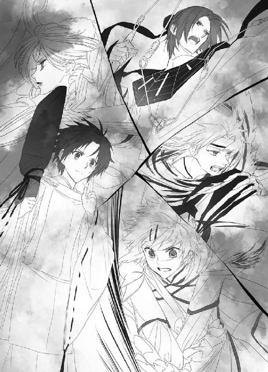
『蟲呼びの夜』の事後処理、補修作業に当たるため、望月造園の庭師たちも、結界が帝都大通りに固定されるのを待って出かけた。浄化の作業が終わるまで、道具を持って結界の外に指定された場所で待機だ。
「────大丈夫なのかよ、蒼は......！」
腕組みして、苛々している親方に、若い庭師の池波は笑う。
「大丈夫ですよ、親方。蒼ちゃんは、しっかりしてますから」
「うるせぇ！ 黙ってろ！」
怒鳴りつけられ、池波は親方の近くから逃げる。
清志朗は見えない結界の奥に目をやり、自分に言い聞かせるように呟く。
「見学なんだから、蒼くんは無茶しない。篠原くんたちが、無茶させない......！」
『蟲呼びの夜』は、今期の四神の戦士になってから、何度も行っている。
（それに今回は、蟲の穢れが溜まりきってない）
だから蟲の数は比較的少なく、浄化作業自体としてはいつもより軽いはずだ。
奥庭の四神による、これまでの蒼司朗の四神変化、天の戦士の出現は、蒼司朗の無知や堪え性のない奥庭の四神の希望、不測の事態などの要因があった。
今回はたぶん、そういうことにはならない。
清志朗は遠くに見える街路樹の枝に、ちらりと視線を送る。
（何かが起こりそうなら、柳生さんはあんな場所にいない）
大型の望遠レンズ付きのカメラを構え、忍装束で木の上に潜んでいた柳生真純は、清志朗の視線を感じ、振り向かないままそっと手を振った。
（柳生さんの見てる、あの先に蒼くんもいる）
神官の力で守られねばならないのは、若様と蒼司朗だけだ。安全地帯を幾つも作ると効率が悪いので、見学の蒼司朗は、若様を守る結界で一緒に守られているに違いない。
「（ご心配には及びません）」
忍術で飛ばされた柳生真純の声が、囁くほど近く、清志朗の耳に届く。
結界の中で行われていることを確認できる柳生真純の言葉に噓はない。
発動した四神合技は、暴風のような勢いで、結界内にいた蟲の身体を切り裂き、凍てつかせ、粉砕し、焼き焦がした。
「浄化を！」
小此木神官長が命じ、神官たちは飛散した蟲の残骸を祝詞で速やかに浄化する。浄化されて金色に輝く蟲は、袂から袋を取り出した神官によって急いで拾い集められる。
「────お役目、完了......！」
四神の戦士たちは四神変化を解き、篠原勇輝がほっと息をつく。
蟲と戦った四神の戦士たちは、蒼司朗が四神変化して出てこなくて、安堵していた。
「あーよかった！ あんなのに毎回出てこられちゃ、堪らないからね！」
聞こえよがしに言う安藤奏の言葉に、くすくすと蔵田実親は笑う。
「城下では活躍しているようですよ？ ほら、奏クン、何日か前に君も見たんじゃないですか？ 四神の色と金色の、光の柱のようなものを」
それは東洲斎忠保邸で蒼司朗が強盗を成敗したときの光だ。
目撃していた安藤奏は、むっと不機嫌になる。むかついた弾みに、被っている猫がどっさり落っこちた。
「それが何ですか？」
「あぁっ、黒奏たんの目っ♡」
ツンというより、真っ黒な目つきで睨まれた蔵田実親は、嬉しそうに頰を染める。
「移動よ。ぐずぐずしないで」
肩にかかる髪を優雅に払って、芙蓉薫子は三人を促す。
結界を受け持っていた神官は、帝都大通りに施していた『一般人立ち入り禁止』の結界を解除し、浄化された蟲が中心に寄るような別の結界を作って範囲を狭めてゆく。結界にぶつかって、浄化された蟲の残骸が、ころころと集まる。
（これは、オレも手伝ったほうがいいよな）
蟲は全部浄化されたので、いつまでも結界の中でじっと見学しなくてもいいだろう。浄化した蟲の回収は、早いほうがいい。
「えーと、袋はないけど......」
何か袋の代わりになりそうなものを探して、蒼司朗は神官装束をまさぐる。
「キュオ」
ごそごそ移動したチビ青龍が、ハンカチを銜えて装束から顔を出す。
「あぁ、それ使えそう」
にこっと微笑んで、蒼司朗はハンカチを受け取ろうとしたのだが。
「はい、蒼司朗くん！」
パンパンと手を打ち鳴らされて、蒼司朗は小此木神官長に注目する。
「若様と撤収です！」
若様の乗る牛車は、素早い乗り物ではない。
「鈴宮くん！ 牛車の先導を！」
「はい！」
寄越しなさいと手を差し出す小此木神官長に、浄化した蟲を回収した袋を渡し、鈴宮神官は急いで牛車に近づく。
「蒼司朗様、警護をよろしくお願いします」
「はい」
「ミギャギャ」
「キュイキュオ」
「ピチュ」
「「（しゅー）」」
今度は何かあったなら、『お庭番参る！』だ。
「いや、何もないから☆」
何か期待しているらしいピヨ四神に苦笑し、蒼司朗は若様の牛車の横につく。
『蟲呼びの夜』の帝都城下は、補修作業を行う者のようにあらかじめ外出を許可されている者以外は、『何となく外出したくない気分』になるような術が施されている。不埒な賊や不審者（善良な一般人より、かえって縁起を担ぐらしい）も出没しない。
「参ります、若様」
動かすことを知らせ、鈴宮神官は牛車の手綱を手に取ると、そっと牛車を進める。
短時間で終了した『蟲呼びの夜』は、アクシデントや難しい事象もなく、速やかに蟲を浄化できたということだ。
結界解除の知らせと補修作業開始の合図に、待機場所にいた者たちは、道具を抱えて一斉に行動を開始する。
「行くぞ野郎ども！ ちゃきちゃき動け！」
「へい！」
親方の合図で、望月造園の庭師たちも担当箇所の破損確認に走る。
（蒼くん......！）
浄化した蟲の回収作業を行っている神官たちの向こうに、清志朗は蒼司朗の姿を探す。
一番小柄な神官装束の少年は、枝打ち斧片手に、牛車について帝都大通りを後にするところだった。怪我をしているらしい様子はない。
（よかった、大丈夫だね）
今夜の蒼司朗は四神変化しないだろうと思っていても、無事な姿を自分の目で確認して、清志朗は安堵する。
「────清！」
「はい！」
望月造園の親方である父・左近に怒鳴られた清志朗は、急いで作業を始めた。
10
帝都城方面に向かって進んだ牛車は、しかしまっすぐ帝都城には入らなかった。外堀にかかる橋を渡り、帝都神社に向かい────。
（あれ？）
帝都神社を通り過ぎる。
「......あの、鈴宮神官......？」
「裁判所に向かいます。『裏大祓』ですから」
教えてくれた鈴宮神官の硬い声に、それ以上訊かないでほしいという願いが伝わって、蒼司朗は口を噤む。
夜中にも関わらず勤務していた職員が裁判所の門を開き、牛車はしずしずと裁判所の建物の一角に設けられていた屋内駐車場に入った。屋内駐車場は奥のシャッターが開かれていて、牛車はそちらに向かって進んでいく。
「────ピ」
何やら不穏な雰囲気に脅え、頭の上で小さく鳴いたチビ朱雀を、蒼司朗はそっと撫でて宥める。
「（大丈夫だから）」
蒼司朗にはよくわからなくても、若様が一緒なのだ。次期帝である若様は、絶対に危険な場所に連れて行かれるはずがない。だから蒼司朗にも、危険はない。はず。
静かにしていてと蒼司朗に頼まれて、チビ朱雀は、蒼司朗の髪の中にすっぽりと隠れる。
関係者以外立ち入り禁止と札のある通路を進み、緩やかなスロープを下った牛車は、やがてひとつの門の前に辿り着いた。
牛車の到着を待っていたかのように、両開きの門は厳かに開く。
門の向こうにあったのは、煌々と篝火の焚かれた、広いホールのような場所だ。ホールの中央には、何か大きな物に白い布をかけられた祭壇が設えられている。
帝都大通りで蟲の浄化作業をした神官たちは、蒼司朗たちよりも後にあの場から撤収したが、皆先にここに到着していた。一度は変化を解いた四神の鎧姿の、四神の戦士たちもいる。
入った場所が違い、昼と夜でいくらか印象は違っているが、見覚えのある光景に、蒼司朗は目を瞬く。
「────ここ......」
「『審判の日』の儀が行われた場所です」
「じゃあ、今日も......」
「いえ。今日は『審判』はありません」
断言してもらって蒼司朗はほっとしたが、鈴宮神官の表情は硬い。
「こっちですよー」
小此木神官長が手を振って待っている場所に、鈴宮神官は牛車を進ませる。
若様の牛車を間に挟むよう、鈴宮神官は蒼司朗と離れ、牛車の横に控えた。
蒼司朗は小此木神官に訊ねる。
「あの、『裏大祓』って......」
「蒼司朗くんは見学です。というか、これは皆、見届けることしかできないんですけど」
若様を乗せた牛車も到着し、全員が揃ったことを確認して、開始の銅鑼が鳴らされる。
厳かに祭壇の前に進んだ小此木神官長は、玉串を振って命じた。
「罪人を、これへ！」
閉じられていた通路の扉が開き、帝都刑務所の看守の先導で、揃いの灰色の服を着た囚人たちが、両手と腰を一本の縄で結わえられ、祭壇に向かって一列に進む。
シャン、シャン......。
数十人の囚人の足音は聞こえなかったが、その歩みにあわせるように、ホールに集まった神官たちは鈴を鳴らした。
「（ミゴ）」
「（キュウ）」
「（ピー）」
「「（しゅー）」」
神官装束や髪に隠れ、小さい身体をさらに縮こめたピヨ四神が、蒼司朗にしがみつく。
（うん、大丈夫、怖がらなくていいよ）
中央を見据えた目を逸らすことなく、そっと蒼司朗はピヨ四神を撫でて宥める。
（あの人たちは、結界の中にいる）
気配が完全に絶たれ、存在さえも感知できなくなるので、目で姿を見ていなければ、そこに囚人たちがいるとはわからない。
進み出た神官四人によって、白い布の取り除けられた祭壇にあったのは、『門』だった。
大道具として舞台に乗せられるような、作り物の『門』。
囚人たちのために道を空けるように、祭壇の前にいた小此木神官長が横に退き、先導していた看守は門の横に控えた。
神官の手で『門』が開かれる。
開かれたならホールの向こうが見えるはずの『門』は、異界へと奥深く繫がっていた。
漏れ出る穢れを感じないのは、蒼司朗のいる場所が結界で守られているのではなく、強固な防御結界が門に施されているからだ。
囚人を包んだ結界は、門の中へ繫がっている。
タネや仕掛けのない手品を見ているように、祭壇に上がった囚人たちは、一歩一歩歩いて、門の中へと消えていった。
（あんなの......！）
蒼司朗は息を詰める。
囚人であれ、生きたままの人間を異界に送るなんて────！
鈴の音に合わせ、いつからか神官たちが祝詞を唱えていたが、食い入るように『門』を見つめていた蒼司朗はそれに気がつかなかった。
「────大丈夫か？ 望月蒼司朗」
涼やかな声に静かに呼ばれ、蒼司朗ははっとする。
（若様......！）
すぐ横にある牛車に乗っている若様が、蒼司朗を案じていた。
「オレ......」
大丈夫ですと答えたかったが、声の震えに気づき、蒼司朗は唇を嚙む。
「帝都に存在する穢れを一掃する行事が『裏大祓』です」
門を閉ざした祭壇から離れた小此木神官長は言った。
「......人間が、穢れ、ですか......？」
声を震わせないよう、ぎゅっと枝打ち斧を握る手に力をこめて訊ねた蒼司朗に、小此木神官長は悩ましげに溜め息をつく。
「あの囚人は、『追放』という判決を受けた者たちです。帝都に、死刑執行官はいません。異界に流された彼らは、自分が適応できる世界を、自力で見つけなければいけない」
規則に従えず、そして他人の命を奪ったり生活を脅かすのを禁忌だと感じない者は、そこでは受け入れられない。
「帝都での大罪は、蟲を己の欲望のままに利用しようとすることです。彼らは自分の安全を確保しながら、蟲を操ろうと企んだ重罪人です。蟲がどれほど危険で恐ろしいモノなのか、自分の身で思い知るといい」
国内すべての異界に繫がる綻びを引き寄せ、他の地域を蟲の驚異から守っている帝都は、穢れを撒き散らす蟲を退治して浄化している。
これまでに数えきれない神官が、蟲と戦って命を落としている。そして浄化した蟲から作られる薬品は、全国の人々の怪我を治し命を救い、いまや必要不可欠な物となっている。
危ういながらも、帝都と蟲は均衡を保っている。それを崩されたくはない。
「────以前は、それでももっと少なかったのですよ」
祭壇から門を下ろして、『裏大祓』は完全に終了した。鈴宮神官に若様の牛車の退出を促して、小此木神官長は寂しげな笑みを浮かべる。
「蒼司朗くんは、今日『蟲呼びの夜』を見ましたね。あれは、帝都に潜んでいる蟲を追い出して浄化するものです。でも、閉鎖された場所にいる、そこから動けない蟲は浄化できません」
牛車の横について歩きながら、蒼司朗はそういえばと思う。
（動かない蟲は、藁巻でも集められない......）
環境を操作することで蟲が動いてくれるから、清められるのだ。
「今日、異界に送った罪人たちは、何年もの間、捕まえた蟲を隠し持っていました。......前回の新嘗祭でメロンに蟲を仕込んで騒動を起こした男たちも、蟲を使って実験を行って、爆弾を作った────」
「あ、あの、その人たちは......？」
さっき異界送りになった罪人の中にいたのだろうか。その二人は何度も事故に遭って入院したと、蒼司朗は噂で聞いていた。
大人になりきっていない年齢だけでなく、精神的にもどこか幼い、間抜けな犯罪者のことを訊ねられた小此木神官長は、人の悪い笑みで、にっと笑う。
「取り調べに立ち会ったときに、蟲は穢れていて悪運を運ぶものなんだって......、えぇ、わたしはよく知りませんけどね、まぁ世間様ではそういうでしょ？ 噂話をして『ちょっと』脅しつけたら、泣きながら呆気なく改心して、仏門に入りたいって、その場で二人とも頭を丸めちゃいましたよ。何年か服役したら、きっとそのまま出家でしょうねぇ」
彼らはきっと、もう二度と蟲には関わりたくないだろう。
「犯罪者が皆、あぁいう単純で扱いやすい連中ならいいんですけどねー」
噂には、尾鰭がつくものである。
（（......一生悪運続きとか、蟲は七代祟るとか、噓八百で脅かしたんだ））
蒼司朗と鈴宮神官は思ったが、黙っておく。
二度あることは三度あると言う。短期間に何度も事故に遭って救急車で運ばれるという体験をしたばかりの彼らには、小此木神官長の脅しは堪えたことだろう。帝都の神官規則では逮捕歴のある者は神職に就けないと決まっているので、仏門に入って身を清め、蟲の穢れを落としたいですと泣きたくなる気持ちはわかる。
「奥庭の四神の戦士、天の戦士の浄化は、帝都のどこかに閉じこめられている蟲も、すべて浄化する力がありました」
「オレ......」
「蒼司朗くんは何度か天の戦士になりましたけど、そこまでの浄化はできてません」
蒼司朗ができたのは、結界に集められた蟲の完全浄化までだ。それで力尽きている。
天の戦士が不在だから、蟲を隠し持つ者がいる────。
（オレにもっと力があれば......）
あんなにたくさんの人を異界送りにすることはなかった。
あの人たちが罪人になることはなかった。
蒼司朗は視線を落とす。
「大掃除の後に、この行事を回したくなかったので、『蟲呼びの夜』の後に行いました」
必要悪だと考えている小此木神官長たちにとっても、『裏大祓』の儀式は決して気分のいいものではない。
「天の戦士の存在は、犯罪抑止という点でも大きな影響があります。焦らせたり、追い詰めるつもりはありませんが、蒼司朗くんにかかる期待は大きいことを知ってくださいね。────ひょっとしたら、奥庭の管理者は鈴宮くんだったかもしれなかったんですし」
小此木神官長に教えられて、さあっと蒼司朗の血の気が引く。
（オレ、とんでもないことした!?）
出すぎた真似をした高校生の子供が、名誉あるお役目を横取りした!?
今は蒼司朗の指導と世話を任されている鈴宮神官は、初耳の言葉に目を丸くする。
「な、何ですか、それ......!? 無理です無理！ わたしにはできません！ 絶っっ対に無理ですっ！」
とんでもないと、力いっぱい言った鈴宮神官は思いきり首を振り、くらくらして足元をふらつかせた。
鈴宮神官の反応に、小此木神官長は口を尖らせる。
「採用当時から、期待大だったんですよぉ？」
これまでの最高の成績で帝都神社の神官採用試験に合格した優秀な若い神官は、奥庭の管理者としてまさしく理想的だった。採用を決定したときから、これはひょっとしてと、小此木神官長たちは密かな期待を寄せていたのだ。
成り行きでお庭番に就任してしまったが、蒼司朗はどうやって奥庭のお庭番が選ばれるのかを知らない。
「奥庭のお庭番になるには、どうするんですか？」
訊ねた蒼司朗に、小此木神官長は笑う。
「優秀な神官であり、体力のある若者というところはポイント大ですが」
それよりも、と小此木神官長は人差し指を一本立てる。
奥庭の四神様のお気に召すかが、昔から大問題。
そして可否は、容易にわかる。
「王様を決める、どこかの聖剣伝説みたいに、新年に奥庭に詣でて、門に触るんですよ」
門に触れられない場合は、手を伸ばしただけで、びりっと指先が痺れるような衝撃がある。門に触れられて、奥庭の門が開いたら、奥庭の管理者でお庭番、天の戦士に決定！
「その前に、蒼司朗くんが開けちゃいましたけど」
ちょっぴり残念そう（きっと本心）な小此木神官長に、蒼司朗は慌てて言う。
「あ、いえ、オレが行ったときには開いてました」
蒼司朗は門に触って開いていない。
最初から門が開いていたから自分が手入れする予定の庭と勘違いして、荒れ果てた庭の壮絶さに圧倒されながらも、これぞ庭師（見習いだけど☆）の醍醐味とショベルカーで入りこんだのだ。
奥庭の四神様は、蒼司朗を迎え入れるために、門を開いていた。
「あれ？ そうだったんですか？」
目を瞬く小此木神官長に、蒼司朗は頷く。
「はい」
門を開けたなら、それは自慢してもいいことだ。噓をつかなくてもいい。
蒼司朗を迎え入れるように、門が開いていたとすれば。
（帝都に来たときから、奥庭の四神様は蒼司朗くんがお気に入りだったようですね）
神官の修行もしていない者には、まず不可能だと思われていた四神変化。発動される力は不十分でお粗末なものだったが、天の戦士となって蒼司朗が活躍できた理由が、小此木神官長にはおぼろげながらわかる気がした。
内堀の門のところで、小此木神官長は蒼司朗と鈴宮神官と別れ、城の警備員と一緒に牛車の若様をお城に送っていった。
お辞儀して見送って、蒼司朗と鈴宮神官は、帝都神社の社務所に戻る。
夜明けまでは、まだ四時間近くある。
「蒼司朗様、道は暗いですから、お気をつけて」
「はい、おやすみなさい」
神官装束から私服に着替えた蒼司朗は、帝都神社を出て望月造園に帰った。
『蟲呼びの夜』の修復作業を行っている望月造園の庭師たちは、まだ帝都大通りで仕事をしているようだ。
伯母の梢は玄関に明かりをつけ、寝ないで皆を待っていた。
「お帰り、蒼ちゃん。軽く食べられるように仕度してあるけど、お腹空いてない？ お風呂沸いてるから、先に入って寝ちゃいなさい」
帰宅した蒼司朗を、梢はにっこり微笑んで、優しく出迎えてくれた。
「うん、ありがとう」
両親が亡くなってから、こういう出迎えは久しぶりだ。
枝打ち斧を玄関の壁に立てかけ、靴を脱いで上がった蒼司朗の笑顔を見て、梢は、あら？ と首を傾げる。
「蒼ちゃん」
そっと腕を伸ばした梢は、蒼司朗を抱き締める。
（え......？）
柔らかい抱擁に、蒼司朗は目を瞬く。まだ小柄な蒼司朗は、梢の背を追い越しておらず、梢の腕の中にすっぽり収まる。
「蒼ちゃんは、本当によくがんばってるわ。だけど、無理しちゃ駄目よ？」
「......うん」
（母さんと同じ匂いがする）
いい匂いのする伯母に抱っこされ、蒼司朗は少しだけ、子供の気分に戻って甘える。
いつからか身体に入っていた、嫌な力が、すうっと抜けていくような気がした。
無自覚だったが、かなり気を張り詰めていたのだと蒼司朗はわかった。
「────ありがとう、伯母さん。元気でた」
（これが本当の蒼ちゃんの笑顔だわ）
「そう？ よかった」
梢は、にこっと笑って蒼司朗の頭を撫でた。
温かい雑炊をピヨ四神と一緒に食べて、ピヨ四神とお風呂に入った蒼司朗は、自分の部屋に入って、梢が敷いてくれていた布団にダイブする。
「ふかふかだー」
お天気のよかった昼間に、梢が干しておいてくれたらしい。
お日様の匂いがする。
「ミギュギュ」
「キュイィ」
「チュピピ」
「「（しゅー）」」
蒼司朗と同じように布団にダイブしたピヨ四神も、目を細めて、ふかふか感を堪能する。ふかふか布団に転がっている、お風呂を上がったばかりのピヨ四神も、身体ほこほこで毛皮や羽毛はふわふわだ。
明かりを消した蒼司朗は、ぬくぬくしたピヨ四神と布団に入って、思う。
（お前たちも、誰かに甘えたかったのかな）
神様として敬われるだけじゃなく。
指でそっと撫でた蒼司朗に、目を閉じたピヨ四神は、くふんと満足そうに鼻を鳴らした。
11
望月造園の庭師たちが作業を終えて戻ってきたのは、蒼司朗が寝ついた夜明け前だった。清志朗や親方や住みこみの庭師が、そーっと交互に蒼司朗の寝顔を確認し、安心して自分の部屋に休みに行った。
「......ミギュ？」
「キュウ......」
「......ピ」
「「（ふしゅー......）」」
蒼司朗以外には見えないのだが、静かに襖が開けられるたび、蒼司朗の布団の上で縦横無尽にころころと眠っているピヨ四神たちは、片目を開けたり寝返りを打ったりして、襖を開いた相手を確認し、機嫌よく再び眠りに就く。
蒼司朗を気遣っている優しい人たちの気配は、ピヨ四神にも温かいものを運んだ。
昨日は夜の活動に備えて、蒼司朗も望月造園の庭師たちも昼間にしっかり仮眠をとっていたので、朝はいつもどおりだ。
「それじゃあ、皆さん、よいお年を！」
池波たち、住みこみで働いていた若い庭師たち五人が帰省のため、朝早く望月造園を出発した。
奥庭の手入れをする蒼司朗も、朝食後、ショベルカーに乗って池波たちと一緒に望月造園を出る。帝都大通りに出たところで、池波たちとはお別れだ。
「蒼ちゃん、またな！」
「お疲れ様でした！」
蒼司朗のショベルカーのショベルで運んでもらった荷物を取り、池波たちは駅に向かった。蒼司朗はいつもどおり帝都城に奥庭の手入れをしに行く。
望月造園の作業もなく、神官の修行もないので、奥庭の作業を終えた蒼司朗は、時間に余裕を感じながら望月造園に戻った。
「はい、蒼ちゃんも自分のお部屋のお掃除ね！」
今日は大掃除。
梢から掃除用の割烹着と三角巾、マスクを渡された蒼司朗は、身支度を整えると同時に、箒と叩きとバケツに入った雑巾の、お掃除セットをもらった。
「......こっちの部屋はそんなに使ってないから、楽だけどさ」
「ミギュ」
割烹着のポケットから顔を出したチビ白虎は、三角巾とマスクをしていた。
「は!?」
しっかりお掃除ルックのチビ白虎に、蒼司朗は目を瞬く。
「キュイ」
「ピピチュ」
「「（しゅー）」」
ひょこひょこ顔を出したピヨ四神は、皆チビ白虎と同じように三角巾とマスクをしていた。
「な、何だ!? お前ら......！」
びっくりしている蒼司朗に、台所の掃除をしに行きながら梢は朗らかに笑う。
「どう？ 蒼ちゃんの可愛い四神様にちょうどいい具合でしょ？ 写真を撮るのを忘れないでね、蒼ちゃん」
蒼司朗の割烹着のポケットに、ピヨ四神用の三角巾とマスクが用意されていたらしい。
梢は写真でしか見たことはないが、蒼司朗にくっついて大掃除にも付き合うだろう奥庭の四神様が埃を吸わないよう、考えてくれていた。
「ミギャギャ」
「キュアキュオ」
「ピピチュピ」
「「（しゅー）」」
蒼司朗の割烹着や髪から、くりんと顔を出したピヨ四神が、梢に向かって甘え声で鳴いた。
「あらまぁっ♡」
初めて生でピヨ四神を見た梢は、優しい笑顔になり、ありがとうと愛想を振り撒いたピヨ四神は、恥ずかしがって隠れた。
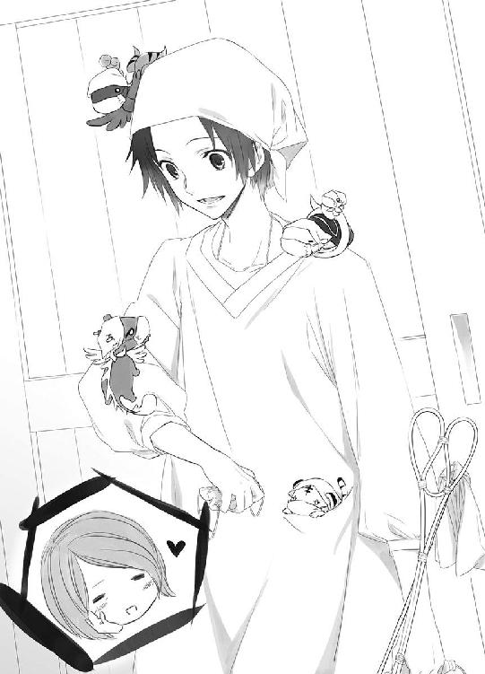
「よかったな」
くすぐったい気分で蒼司朗はピヨ四神を撫で、自分の部屋の掃除をする。
先に自室の掃除を終わらせた伯父の左近が、居間から蒼司朗を呼ぶ。
「蒼ー！ 畳上げるの手伝えー！」
「はーい！」
庭師たち大勢が出入りする居間は、学生寮の寮生である蒼司朗や清志朗の部屋とは比べものにならないほど汚れている。
「重いから気をつけてね、蒼くん」
風呂掃除を終わらせた清志朗も、居間の畳を上げて庭に運び出す作業に加わった。
午後からは庭や作業場の掃き掃除もし、ゴミを全部まとめて庭で燃やして、大掃除は終了だ。
「清、蒼、手入れの終わった盆栽の配達頼む」
「「はーい」」
蒼司朗と清志朗は二人で手分けして、預かりものの盆栽を配達して回る。
蒼司朗は夕方に奥庭の手入れをして、本日の作業終了だ。
少し遅くなったと感じながら、蒼司朗は望月造園に戻ったのだが、清志朗はまだ帰っていなかった。
夕飯の時間になっても、清志朗は帰ってこない。
「配達は、終わったんだよね」
「五時ごろ家に配達に来た酒屋の浩次くんが、日舞の蒲原先生のお宅を出る清くんとすれ違ったって言ってたわ」
最後の配達先は、とっくに出ているようだ。
（遅いな......、清ちゃん）
「ったく、どこで遊び惚けてやがんでぇ......！」
「冷めちゃうから、先に始めてましょうか。蒼ちゃん、お腹空いたでしょう？」
蒼司朗の膳には、ピヨ四神のミルクとご飯も並んでいる。蒼司朗は我慢できても、赤ちゃんのピヨ四神に我慢させるのは可哀想だ。
「────いただきます」
ピヨ四神にご飯を食べさせるため、蒼司朗は清志朗が帰ってくるのを待たず、箸を取った。
蒼司朗たちが食事を終え、左近が風呂に入っても、清志朗はまだ帰ってこなかった。
（何かあったのかな......）
連絡もなく、清志朗がこんなに遅くなったことはない。梢もさっきから時計を気にしている。
「────伯母さん、オレ、ちょっとそこら辺見てくる」
外出用の上着に袖を通した蒼司朗を、梢は心配そうに見つめる。
「お友達のところに行ってるかもしれないから、ご近所を一回りしてくるだけにしてね？」
「うん」
入れ違いで、清志朗が帰宅するかもしれない。
蒼司朗は愛用の枝打ち斧を握って、望月造園を出た。
（どこに行っちゃったのかなぁ、清ちゃん......）
周りを気にしながら、蒼司朗は緩く駆けだす。
「ミギャギャギャ」
「キュイキュイ」
「え？ 何？」
何かを訴えるようなピヨ四神に、蒼司朗は速度を落とす。
「ピ！」
風見鶏のように、ぴしっと手羽を上げたチビ朱雀が、蒼司朗の頭の上で南のほうを示す。
「......あっち？」
「「（しゃー！）」」
間違いないよと教えられ、蒼司朗はそちらに向かって駆けだす。
（清ちゃん......！）
清志朗は帝都南公園にいた。
（ない、ない、ない......！）
埋め替えたはずの、蟲を閉じこめたドロップスの缶が、どこにもない────！
埋め替えたときには、あまりゆっくりできなくて急いでいた。だから、ひょっとして埋めた場所を記憶違いしていたのかもしれないと、近くをあちこち掘り返したのだが、出てこない。
剪定を任された木は、はっきり覚えている。蟲の入った缶を埋め替えるのに選んだのは、同じ公園の北側にある、枯れかけた桜の古木だったと思ったのだが......。
ない......。
（────いけない、時間......！）
大祓前の今日は消灯日で、公園内の外灯はつかない。辺りは真っ暗で、清志朗は月明かりだけを頼りに、懸命に地面を掘っていた。もう少し、もう少し掘れば見つかるかもしれないと、夢中になっていて、時間を忘れていた。
小さなスコップを握ったまま、顔を上げた清志朗は、軽い足音をさせながら真っ直ぐに近づいてくる小柄な人影に気づく。
「────清ちゃん！」
息を切らして駆け寄った蒼司朗は、清志朗を見つけてほっとする。
「遅いから心配したよ。......どうしたの!? 清ちゃん」
清志朗は帝都学園の制服姿のときでも、小さなスコップをポケットに入れて持ち歩いていることを蒼司朗は知っている。雑草をかきわけるときにも、スコップを使えば草の葉で手を切ることはない。
清志朗に近づいた蒼司朗は、顔まで泥だらけになって、スコップを持つ指から血を流している清志朗に驚いた。目線を合わせるため、蒼司朗は清志朗と同じようにしゃがむ。
「何か落としたの!? 何か大事なもの!?」
血を流している手を守るようにスコップを取り、触れてきた蒼司朗の温かな手に、清志朗は胸を詰まらせる。
「......！」
そして清志朗は、思わず蒼司朗の手を払い除けてしまった。手を払い除けられた蒼司朗は、清志朗の見せた拒絶にびっくりする。
「清ちゃん......？」
蒼司朗の澄んだ瞳の直視を避けるように、清志朗は俯く。
「......ないんだ......」
「────うん」
震える声で囁くような清志朗の声に、蒼司朗は耳を澄ます。
清志朗は何かを探している。
蒼司朗の顔をまともに見られないまま、清志朗は絞り出すように言った。
「蟲を入れて埋めたはずの缶が、どこにもない────！」
蒼司朗にだけは、知られたくなかった。
蒼司朗の誇れる従兄弟でいたかった。
望月造園の優秀な跡取り息子になりたかった。
だけど、もう隠し続けられない────！
閉鎖空間に閉じこめられ、脱出できなくなった蟲は、休眠状態に入る。休眠状態にある蟲は、外敵から自分の身を隠そうとして、近くにある植物を活性化させる。
帝都城お抱え庭師の息子である清志朗は、帝都中の庭師から注目されていた。望月造園を引き継ぎ、そして帝都城お抱え庭師、帝都一の庭師の称号も引き継ぐ少年なのだろうかと。
初めて一人前の仕事として木の剪定を任されたとき、かかる期待と辛辣な評価という重圧に押し潰されそうになり、清志朗は庭師として力の足りない己がいたたまれず、蟲を閉じこめたドロップスの缶をこっそり埋めた。
庭師としてやってはいけない過ちを告げた清志朗は、蒼司朗に顔を上げられない。
掘り出して、事実を隠蔽しようとした自分の卑劣さも、最低だと思った。
「......僕のことを軽蔑していい......。僕は弱くて、卑怯で、最低の人間だ......！」
俯いた清志朗の目から零れた涙が、ぽつぽつと音を立てて地面に落ちる。
蒼司朗は『裏大祓』の後に聞いた小此木神官長の言葉を思い出す。
────帝都での大罪は、蟲を己の欲望のままに利用しようとすることです。
（清、ちゃん......）
清志朗は何でもできるのだと考えていた蒼司朗は、清志朗が苦しんでいるのに気づいてあげられなかった。
清志朗の涙に、蒼司朗の胸が詰まる。
（オレだって同じ立場になってたら、同じことをしてたかもしれない......）
それでも、清志朗はその蟲の缶を埋め替えた。そのままにはしていない。蟲の力に頼ることをやめている。蟲の缶を処分しようと、探しに来たのだ。
清志朗は、一人で土を掘り返していた。
蒼司朗はピヨ四神に教えられ、帝都城下を無駄に走り回らず、迷うことなくここまで来れた。
「ミギュ？」
蒼司朗の視線に気づき、ピヨ四神が蒼司朗を見つめる。
「キュウ」
「ピチュ」
「「（しゅー）」」
四神すべてと視線を合わせ、蒼司朗は一度、目を閉じる。
「────！」
すっくと腰を上げ、小さな声で蒼司朗は言った。
しかし頭の中ががんがんしていた清志朗は、その言葉を聞き取ることができなかった。
清志朗が顔を上げるより先に、枝打ち斧を摑んだ蒼司朗は、清志朗に背を向けて駆けだした。
（......蒼くん......）
缶を見つけるまでは帰れないと、清志朗はスコップを握る。
（ごめん、ごめん......！）
せっかく信じてくれたのに────！
蒼司朗は唇を嚙み締め、人気のない帝都城下を駆ける。
消灯日に指定されている日は、帝都城公園の閉門時間も早い。だが奥庭のお庭番である蒼司朗は、閉門時間であっても、特別に行き来が許可されている。門番は顔パスで、蒼司朗のために門を開いてくれた。
門番に会釈して、蒼司朗は内堀を越えて奥庭に向かう。
全力疾走してきた蒼司朗は、呼吸を整えて、奥庭の門を開いた。
「オレ、お前たちに会う前から、清ちゃんのこと大好きだったんだ。清ちゃん、泥だらけになって、泣いてた......。オレ、清ちゃんのことを助けたい。蟲の缶を一緒に探して、見つけてあげたい。たった一人の大切な従兄弟も助けられない人間に、帝都のたくさんの人たちを救うなんて、できないと思うんだ」
月明かりを浴びる奥庭を見つめた蒼司朗は、身体のあちこちにくっついていたピヨ四神を集めて抱っこし、枝打ち斧を置いてしゃがむ。
「......いろいろあったけど、楽しかった。オレ、お前たちのこと、大好きだったよ」
蒼司朗はピヨ四神を奥庭に下ろし、枝打ち斧を拾って素早く門を閉じる。
「ミギャ！」
「キュイキュオキュオ！」
「ピピーピピー！」
「「（しゃーしゃーしゃー！）」」
カリカリカリカリ、コツコツコツ！
奥庭の四神は、聖獣だけでは奥庭から出られない。
小さな爪や嘴が起こす振動を感じながら、蒼司朗は奥庭の門を押さえる。
（本当に、ごめん......）
見込んで、お庭番に選んでくれたのに。
（清ちゃんを選ぶオレに、お庭番の資格なんてない）
思いを断ち切るように、一度ぎゅっと目を瞑り、蒼司朗は奥庭に背を向けた。
「ミギャギャギャキャ！」
「キュイキュオキュオキュオ！」
「ピピーピピーピピー！」
「「（しゃーしゃーしゃー！）」」
遠くなる足音に、ピヨ四神たちが必死の鳴き声をあげた。
振り返らず、蒼司朗は走る。
12
「────清ちゃん！」
聞こえた晴れやかな声に、土を掘り返していた清志朗は、驚いて顔を上げる。
ばたばたと駆け寄った蒼司朗は、清志朗の横にしゃがんだ。
「オレも探す！」
笑顔で宣言した蒼司朗に、清志朗は目を瞬く。
（......呆れて、帰ったんじゃ......）
嫌われた、見捨てられた、失ったと清志朗は思ったのだが、それは違ったようだ。
勘違いしたことがわかって、清志朗は全身から力が抜ける。
────ちょっと待ってて！
蒼司朗はそう言って、清志朗から離れ、帝都城に向かった。
「清ちゃんの隠しごとって、これだったんだね」
「......うん」
「んじゃ、今から、オレたち二人の秘密な！」
共犯者宣言して、にかっと蒼司朗は笑う。
「伯父さんに見つからないうちに、処分しなくちゃね！ きっとすっごい叱られるから」
片時も手放さない、大切にしている枝打ち斧を、蒼司朗はぶすっと地面に突き刺す。
普段ではとても考えられない行動に、清志朗はぎょっとする。
「そ、蒼くん......！」
「え？ 何？」
にこっと微笑んだ蒼司朗は、泥で汚れた手の甲で、ぐいと顔を擦る。
何だかハイテンションな蒼司朗に、清志朗は眉を顰める。
「枝打ち斧をそんなふうに使っちゃ......！」
「────望月蒼司朗......！」
涼やかな声に呼ばれ、蒼司朗はびくりと背を震わせて振り返る。
「......若、様......」
金の髪に月明かりを浴びた、見目麗しい若様は、軽く息を弾ませていた。
「二晩続けて、夜間に外出することになるとは思わなかった」
若様はひとつ息を吐き捨て、連れてきたピヨ四神を両手に乗せて差し出す。
「ミギュウゥ」
「キュイィ」
「チュン」
「「（しゅー）」」
円らな瞳をうるーんと涙で潤ませ、ピヨ四神は蒼司朗を見つめる。
慌てて腰を上げた蒼司朗は、ピヨ四神と若様を啞然と見つめる。
「......帝都城から、走って......？」
「帝都城下は清められたばかりだ。問題ない」
（（いや、そういうことじゃなくて☆））
蒼司朗と清志朗はツッコミを入れたかったが、相手が若様なのでやめておく。
早寝して、ついさっきまで寝ていたらしく、若様の頭にはちょっと寝癖がついていた。
若様と帝は奥庭に入れる。ピヨ四神の必死の叫びは、就寝中だった若様に届いた。
目を覚ました若様は、急いで着替えて奥庭に行き、ピヨ四神を連れて蒼司朗の後を追いかけたのだ。
「望月蒼司朗。お庭番でありながら、奥庭の四神様を仲間外れにするのはよくない」
「い、いや、オレは......」
「ミギッ！」
「キュイ！」
「ピ！」
「「（しゅー！）」」
つべこべ言うより実力行使と、ピヨ四神は若様の手から跳び、蒼司朗にしがみつく。
かぷかぷかぷ、ぷすぷすっ！
「うぁたた......！」
甘嚙みし、ちっちゃな爪を立ててホールドされて、蒼司朗はびっくりする。
ピヨ四神は全力で、蒼司朗から離れないと主張していた。
ピヨ四神が懐いてくれるのは、とても嬉しいことだけど......。
若様は泥だらけの清志朗と、雑草の乱れた地面を見る。
「探しものなら、皆でやったほうが早い」
「い、いえ！ とんでもありません！」
清志朗は慌てて腰を上げる。
清志朗が探しているのは、思い出の品を入れて埋めたタイムカプセルではない。蟲を閉じこめた穢れた缶なんて、穢れが害となる若様に、探させるわけにはいかない！
どちらかひとつを選ばなくてはならないと考えて、蒼司朗は従兄弟である清志朗を優先し、奥庭の四神様から離れた。奥庭のお庭番には、誰か別の人がなるだろうが、蒼司朗の従兄弟は清志朗一人だったから。
「ミギュッミキュギュ！」
「キュイキュイキュイッ！」
「ピ、チュチュピ、チュチュピピ！」
「「（しゃーしゃーしゃー！）」」
蒼司朗にしがみついたピヨ四神は、必死に何か訴える。
（えーと......）
蒼司朗はピヨ四神を抱っこして、言い聞かせる。
「仲間外れにしたわけじゃないよ。だけど......、これはできないことだろ？」
奥庭の四神様に、蟲の入った缶探しなんて。
ふんふんと地面の匂いを嗅ぎながら、ぽちぽちと歩き回るピヨ四神の姿は、可愛いかもしれないが、こればっかりは、させるわけにはいかない。
「望月蒼司朗、君が大切に思うものを、奥庭の四神様も大切に思われている」
若様の言葉に、蒼司朗はどきりとする。
「でも......」
「ミギィー！」
「キュー！」
「ピー！」
「「（しゃー！）」」
苛々して激昂するように、ピヨ四神が大きな声で鳴いた。
大声に驚いて、蒼司朗は思わず首を竦める。
ピヨ四神を抱えた蒼司朗から、七色の光が弾けた。
「蒼くん!?」
「四神様......！」
至近距離で弾けた眩い光に、清志朗と若様は仰天する。
（四神変化!?）
七色の光に包まれ、頭の中が真っ白になり、蒼司朗の意識が霞む。
奥庭の四神と、ひとつになる────。
（な、んで、こんなこと......）
蒼司朗には奥庭の四神の考えがわからない。
どうして、今ここで四神変化しなくてはいけないのだろう。
（まずい......、伯父さんに......）
虹色の光は卵となって、蒼司朗を包みこむ。
蒼司朗の身体は動かない。頭も朦朧とする。熱い。
そして蒼司朗は、はっと思い出す。
────天の戦士の浄化は、帝都のどこかに閉じこめられている蟲も、すべて浄化する力がありました。
小此木神宮長は『裏大祓』の後に、そう言った。
（オレは......！）
天の戦士となって、力が使えるなら────。
（オレは天の戦士になりたい......！）
蒼司朗の望みを叶えるため、蒼司朗を包みこんでいた虹色の光の卵に亀裂が走る。
奥庭の四神の加護を受け、天の戦士が孵化し、目覚める────！
間近で四神変化した蒼司朗に、清志朗と若様は驚く。
（こんな......）
（これが奥庭の四神様の望み......）
虹色の光の卵から生まれたのは、四神の加護を示す鎧を纏った蒼司朗だ。
そっと目を開いた蒼司朗の手に、立派な戦斧が握られる。
「お庭番、望月蒼司朗、参る！」
ふわり、背の真紅の翼を広げ、天の戦士となった蒼司朗が帝都の空に飛び立つ。
（ありがとう......、清ちゃんを助けてくれて......）
帝都城下を見下ろした蒼司朗は、胸を熱くしながら、戦斧を構える。
「四神演武、聖光当庭！」
戦斧が水平に空を薙ぎ、虹の軌跡が描かれた。軌跡は散って、光の雨が降るように細かく帝都城下に落ちる。
キラキラと落ちた光は、すうっと地面に吸いこまれた。
真紅の翼でくるりと回転した蒼司朗の周りで、柔らかな風が生まれる。
柔らかな風は、帝都城下の地面をそっと撫でた。
光の雨が降り注ぎ、風に撫でられた地面から────。
ふわり、小さな花弁に似た光が飛んだ。
その様はまるで、地面に散り落ちた小さな花弁が春風に舞い上げられるよう────。
若様は、そっと掌を差し出す。
「これは、綺麗だ......」
光の桜吹雪に彩られる若様の姿を、清志朗は溜め息をついて見つめる。
綺麗だと微笑んでいる若様こそ、綺麗だ。
帝都神社の境内で、神官たちと藁巻のお焚き上げの準備をしていた小此木神官長は、地面から生まれ、緩やかに飛ぶ光の花びらを見つめる。
「────やりましたね、蒼司朗くん」
これは、浄化の光。
閉ざされた空間に潜む蟲の穢れを祓う、天の戦士の力。
探して掘り出さなくても、これなら清志朗の埋めた蟲を浄化できる。
ドロップスの缶に閉じこめられた蟲は、休眠状態のまま浄化されて消滅し、いつか穢れを撒き散らす危険な爆弾になることもない。
桜吹雪に似た光の中、緩やかに降下した蒼司朗は地面に降り立つ。
爪先が触れた途端、蒼司朗の纏っていた四神の鎧は光となって散った。
枝打ち斧を握ったまま、蒼司朗はぐらりと姿勢を崩す。
「蒼くん！」
駆け寄った清志朗は、倒れこむ蒼司朗の身体を支えた。
ピヨ四神をくっつけた蒼司朗は、清志朗に微笑む。
「......これで、大丈夫だよ......」
缶を見つけることはできなかったけど────。
自分のための四神変化だったのだとわかり、清志朗は目頭を熱くする。
「うん......、蒼くん、ありがとう......」
満足そうな笑みを浮かべ、目を閉じる蒼司朗と、ぴっとりと蒼司朗にくっついているピヨ四神の姿に、若様は微笑む。
眠っているところを起こされ、夜中に帝都城下をランニングする羽目になったけれど。
（こういうのは、悪くない）
蒼司朗を背負う清志朗ににこやかに手を振って、若様はお城に向かって歩きだす。
美麗な若様に戯れるように、ひらりひらり、光の花びらが舞った。
帝都城下はとても清らかで、穢れを厭う若様には、ここ何年も感じられなかったほど、気持ちいい。
二重遭難したように、清志朗に背負われた蒼司朗は、ヘロヘロの状態で帰宅した。
ぐでーっと脱力全開の蒼司朗の姿に、縁側で晩酌し、すっかりできあがっていた左近は、据わった目で息子たち二人を睨んだ。
「ばぁろー、蒼、テメエ！ 何しに出かけやがったんだ！ あぁ!?」
怒鳴りつけた左近の手の酒杯に、ひらり、舞い飛んで落ちた光の花びらが浮いた。
13
事後処置だったが、蒼司朗は南公園から帰るときに清志朗に頼んで、上着のポケットに入っていた『よく効く帝都の薬』を水飲み場の水で溶かして飲ませてもらった。
閉鎖空間から出られなくなっている蟲は、大きな蟲ではない。ピヨ四神の力で四神変化した蒼司朗が、これまでに浄化してきた蟲と比べると、全部集めても、たいしたことはない。帝都全域に力を放出しなければならなかったのが、大変だったくらいだ。
一晩眠った蒼司朗は、思いのほかすっきりと目を覚ました。
薬を溶かした水がよく効いたらしい。
（......あー......）
ピヨ四神は蒼司朗の頰に小さな頭をくっつけるようにしたり、蒼司朗が動けばわかるように胸の上に乗ったり、蒼司朗の指や肩を枕にしたり、寝間着の端を嚙んだりしながら、すーこすーこと寝息を立てて気持ちよさそうに眠っていた。
（何でオレなのかなぁ）
執着される理由はよくわからないけれど、蒼司朗はピヨ四神に感謝する。
「......ありがとう」
清志朗を助けてくれて。
どろどろに汚れて帰った清志朗は、昨夜汚した風呂を、二日連続で掃除していた。
一番遅く起きだした蒼司朗は、ピヨ四神と朝ご飯を食べながら、伯父の姿を目で探す。
「────伯父さんは？」
「さぁ？」
台所で煮物を作りながら、梢は言う。
「昨夜、清くんと蒼ちゃんが泥だらけで帰ってきたって話したら、散歩してくるって、出かけちゃったのよ」
帰宅時間が遅いと、大きな声で叱られたが、酔っ払っていた左近は、さっぱり覚えていなかったらしい。
「ふぅん」
「もうあんなに遅くなっちゃ駄目よ？ 心配するんだから」
「はーい」
「ムゴゴ」
「ジュ」
「ビ」
「「（ずー）」」
「食べながら返事しない！」
叱ってから、蒼司朗はくすっと笑う。
「ほら、ゆっくり食べよう？ な？」
ご飯やミルクがついて汚れた顔をそっと蒼司朗に拭ってもらって、ピヨ四神は機嫌よく食事を再開する。
蒼司朗がピヨ四神と一緒に食事を終え、清志朗が風呂掃除を終わらせた頃、散歩に出ていた左近が帰ってきた。
「────言ってなかったっけなぁ、清」
居間に入った左近は、頭を搔く。
掘り返された跡を見て、説明など不要なぐらい左近にはよくわかった。
「オメーが南公園に埋めてたヤツぁ、雨が降って土が流れて出てきてたんで、俺が片づけといたんだが」
「は!?」
「お、伯父さん!?」
ばつが悪そうな左近に、清志朗と蒼司朗は驚いて啞然とする。
「あ、あれは、帝都にとって大罪で......」
蒼司朗の言葉に、左近は茶を啜る。
「大罪って何でぇ？ あんなもん、帝都のガキなら、誰でもやったことあっだろ」
夏休みの朝顔や向日葵かの観察日記が、さくさく捗るように。
「帝都城お抱え庭師の子供が一人前に剪定するなんて言ったら、皆して、やたら注目して、わらわらわらわらどっからか湧いて出やがって、うざってぇったらねぇよな」
曽祖父の頃から帝都城お抱え庭師を代々継承する、帝都一の庭師の息子は、お抱え庭師の座を狙う同業者たちに注目される。ヘタな仕事はできない。
そのときのことを思い出し、左近は笑う。
「俺んときは、右近が埋めやがったぜ」
蒼司朗の亡くなった父、左近の弟が、蟲を閉じこめたマッチ箱を、左近が剪定した木の根元に埋めた。
「はぁ!?」
聞いたことのない昔話に、清志朗は目を丸くし、蒼司朗は狼狽える。
「で、でも、『蟲を己の欲望のために利用する』のは、大罪って、小此木神官長が......」
「なーに言ってやがんでぇ、大袈裟だぜ、蒼。誰も怪我したり損したりしてねぇんだから、問題ねぇだろ。蟲の大きさも変わるほどじゃねぇし」
確かに、左近の言うとおりかもしれないが......。
（それはないよ......）
かなり思いつめた清志朗は、がっくりと脱力する。
縁側に移動した左近は、庭を眺めながら煙管を出して煙草を吸う。
「使えるものを利用するのは、悪くねぇ。何でも、程度の問題だ。帝都の暗黙のルールってヤツで、蟲のことについちゃ、誰も教えねぇ。蒼は知らなかったよな？」
「うん、お庭番になってから知ることばっかりで、びっくりした」
「庭師の子供なんざ、ガキの頃から枝の切れっ端や泥をオモチャに遊んでら。蟲のことも、そんときにいじり倒して覚える。若いのが木一本任されたときにゃ、そいつの将来性とか、そういうのを見るんだよ。ヘボなのは、わかりきってるしな。清、テメェは格好つけだから、俺ぁ絶対、蟲を使うと思ってたぜ。案の定で笑えたなぁ......！」
「......」
豪快に笑われて、清志朗は赤くなり、むっとする。
（あ、清ちゃんでも、あんな顔するんだ）
「ミギュ」
「キュイキュイ」
「ピピピチュ」
「「（しゅー）」」
蒼司朗の考えていることに敏感に反応して、どれどれとピヨ四神が顔を出す。
（コラ☆ 清ちゃんが気にするだろ）
仕方ない奴らだなぁと、蒼司朗は四神を撫でて宥めて引っこませる。
「......蒼くん、どうかした？」
「ううん、何にも」
にこっと笑って、蒼司朗は誤魔化す。
「あのさ、清ちゃん」
「何？ 蒼くん」
「あんまり頼りにならないかもしれないけど、オレがんばるから、もっと頼ってよ。いつもオレばっか清ちゃんに助けてもらってさ。オレだって清ちゃんを助けたいんだからな」
「うん、ありがとう蒼くん」
はにかむように笑った清志朗に、蒼司朗も照れて笑った。
「ちょっと前まではよ、箱に詰めて土ん中に蟲を埋めても、しばらくしたらどっかに消えてたんだ。消えなくなっちまってから、適当な頃合いで掘り出すようにしてたんだけどな」
閉じこめた蟲が消えていたのは、奥庭の戦士の力によって穢れが浄化されたからだ。
左近がこれほどよく知っているということは、黙っているが、うまく蟲を利用していたからだろう。ただ、いくら植木が活性化しても、剪定の拙さや、庭の形の悪さや足りないセンスは、どうしようもない。蟲を使わなくても、望月左近が帝都一の庭師であることは変わらない。
「清が埋めてたヤツを掘り出してたのは、見直したぜ？ ずっとアレを埋め続けるようじゃ、見込みねぇからな。さすが、俺の息子だ」
「あれは......」
褒められたものの、清志朗は視線を泳がせる。
（そんないい意味で、やったんじゃない）
蟲の力に頼るのが、卑怯で恥ずかしい行いだと思ったから────。
「清、オメェが次にアレ埋めた桜の木な、あれ、来年咲くぞ」
楽しそうに言われて、清志朗は目を瞬く。
「え......？」
（あの木は、古くて枯れかけてて......）
元気のいい木がさらに元気になると、そこだけ葉が生き生きと大量に茂るようになったり、枝に勢いが出すぎて目立つ。蟲の缶の隠し場所には、目立たないほうがいい。
活性化することもないだろうと思って、清志朗はあの枯れかけた古木の根元に、蟲の入った缶を埋めた。
それが、蟲の力で復活したらしい。
「花見の特等席ができたぜ？ 楽しみにしとけ」
煙管を置いた左近は豪快に笑い、蒼司朗と清志朗の頭を乱暴に両手で撫でた。
蒼司朗と清志朗は、お焚き上げのため、新聞紙に包んだ藁巻を四本ずつ持って望月造園を出る。
「お花見、楽しみだね、清ちゃん」
「蒼くんの奥庭の桜も、うまくいくといいね」
「あそこは、アレ（蟲）使えないからなぁ」
すごいアイテムが使えることがわかったのにと、蒼司朗は苦笑する。
（蒼くんは、あんなものに頼らなくても大丈夫だよ）
「蒼くんなら、できるよ」
「清ちゃんにそう言ってもらえると、オレ、何でもできる気がするよ」
清志朗が蒼司朗に寄せる信頼が、そのまま蒼司朗の力になる。
「ミギュ？」
お花見って何？ と顔を出したチビ白虎に、蒼司朗は微笑む。
「うん。お弁当持って行こう」
「キュイ」
「お天気のいい日にな」
「ピピッチュ！」
「「（しゅーしゅー！）」」
「いや、今から興奮しなくていいから」
藁巻は帝都神社に持って行くこともできたが、近所でいいだろうと、蒼司朗と清志朗は白虎神社に向かった。藁巻を抱えた者たちで、神社はどこも混雑している。
白虎の戦士だが、神主の息子でもある篠原勇輝は、忙しい神社を手伝うため、他の神官たちと同じようにきちんと神官装束を着て、来訪者の応対をしていた。
「へー、ちゃんとしてるじゃん」
あれなら、いつもの不良っぽさは感じられない。
「ミギュ」
「キュイ」
「ピ」
「「（しゅー）」」
ぴこぴこと顔を出したピヨ四神に、蒼司朗は念のために言っておく。
「おやつは家に帰ってからあげるよ。今日は売り物の棚に乗っちゃ駄目だからな」
だからいい子にしてような、と順番に蒼司朗に撫でて可愛がられて、ピヨ四神はお行儀よく引っこむ。
「篠原くんは、ちゃんとオンとオフを使いわけられる人なんだ」
微笑んだ清志朗に、蒼司朗は感心する。
「清ちゃんって、褒め上手だよなー」
お気楽に笑っていた蒼司朗の肩に、ぽんと手が置かれた。
「よぉ。楽しそうだな」
地の底から響くような声に、蒼司朗は本能的に危険を感じ、作り笑いしながら振り向く。
「......よお、篠原！」
ぎこちない笑みを浮かべる蒼司朗に、篠原勇輝は犬歯を見せて、にいいっと笑う。
「オメー、昨夜、若様を夜中に叩き起こして、城下をランニングさせたんだって？」
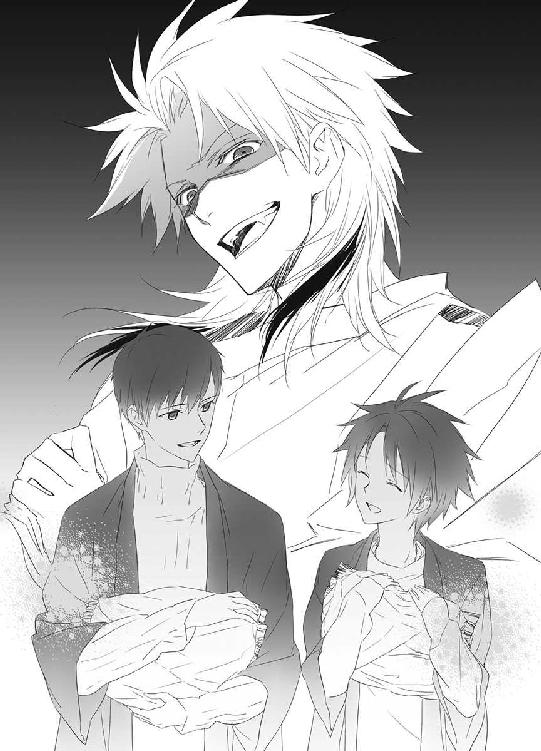
（うげ☆）
目が笑っていない。
さすがに若様のお世話係だけあって、篠原勇輝は情報が早い。
「小此木神官長も呼んでるぜー？ 四神変化の話を聞きたいってよぉ」
「でもオレ、藁巻......」
「あぁ？ 何だってー？」
蒼司朗の肩に手をかけた篠原勇輝は、蒼司朗が抱えていた藁巻を、ひとつずつ取って清志朗に渡す。
蒼司朗の手の中の荷物はなくなった。
「んじゃあ、ゆーっくり話しようなー」
篠原勇輝はがっちりと蒼司朗の肩に腕を回し、歩きだす。
「き、清ちゃーん......」
縋るような蒼司朗の声が聞こえたが、スルーして清志朗は藁巻をお焚き上げする列に並ぶ。
（ごめん！ 蒼くん......）
原因を作った清志朗は、蒼司朗が早く解放されることを、祈った。
了
ようこそ帝都へ
柳生真純は悩んでいた。
「どれを選べばいいのかわかりませーんっ！」
「そうね。どれも甲乙つけ難いわね」
巫女装束の芙蓉薫子も、難しい顔で溜め息をつく。
関係者以外立ち入り禁止の札を出し、大祓の行事を一段落させた四神の戦士が帝都城の一室で行っているのは、初詣記念に参詣者全員に無料で配られる『若様カレンダーカード』の写真選考である。
生徒手帳や財布にも入る、カードサイズのカレンダーは、実用的であるのはもちろん、見目麗しい若様の成長を毎年拝めるので、とても人気がある。地方在住でも、帝都に親戚や友人・知人のいる者たちが、ぜひと頼んで入手していることもあり、帝都住民の数を上回る枚数が印刷されている。一回につき一人一枚しか貰えないものだが、毎年三が日の間にはなくなってしまうので、出遅れるとゲットできない。
大きな円卓一面に広げられた大量の写真に、蔵田実親は全部見るのも大変だと肩を竦める。
「今年はまた、一段と数が多いですねぇ」
「だって、ベストショットばっかりだったんですから、仕方ないじゃないですか！」
これは譲れないと柳生真純は、鼻息荒く拳を握る。
格好だけは真面目に写真をチェックしているが、まったく気の入っていない蔵田実親を、安藤奏は横目で見る。
「混ぜて裏向けて一枚選ぶとか、そういうのナシですよ、蔵田センパイ」
「えぇ？ やだなぁ。そんなこと、するわけないじゃないですか」
蔵田実親は、笑ってそう言うが。
（（（やりそう☆）））
芙蓉薫子と篠原勇輝、柳生真純は腹の中で思う。
若様は写真写りがいいので、ピンボケやアングル、フレーム位置の問題以外でボツになる写真が皆無なのだ。素敵写真山盛りでは、目移りして困る。どれを選んでも......と、思い余って、目を瞑って適当に選びたくなる気持ちもわからないではない。
「これでも厳選してきたんです。ちゃんとご覧になってくださいね！」
どん！ と柳生真純はもう一盛り、写真を追加する。
職務と萌えに忠実な柳生真純は、シャッターチャンスを逃すことなく、もう十年ほど若様の写真を撮り続けている。帝月報編集部でも、柳生真純の撮った若様の日常写真は、毎回絶賛の嵐での掲載だ。カレンダーにする写真は、未掲載の写真と決めているので、ここにあるのは、いまだ日の目を見ていないお宝写真の山なのだ。
爆発的に写真の数が増えているのは、秋から冬にかけて。
望月蒼司朗という少年が帝都に来て、奥庭のお庭番になって以降である。奥庭の四神様が、ちっちゃくなって華麗にデビューしてからだ。
「んーな大量に、撮りゃいいってもんじゃねーよ、ったく......。うはー！ 若様、すんげーいい笑顔っ♪」
これもこれもと、ほくほく笑顔の篠原勇輝を、安藤奏は冷めた目で見る。
ここにある写真はプリントしたもので、何枚でも焼き増しできる。写真を物色している篠原勇輝の神官装束は、あちこちあからさまにぱんぱんに膨れていた。
お宝写真に認定されるのは、カメラマンである柳生真純にとって光栄なことだが。
「神官長ー！ 篠原センパイが、写真持って帰ろうとしてますー」
「ンのヤロ、ちくってんじゃねーよ！」
篠原勇輝に襲いかかるようにヘッドロックをかけられ、座敷に引き倒されて、安藤奏は仰天する。
「なっ!? 何するんですかっ!?」
歳の近い兄弟や従兄弟のいない安藤奏は、取っ組み合いのような乱暴な遊びをしたことがない。帝都民にとって青龍神社の子供である安藤奏は、特別な子供だ。安藤奏に対して自分の子供が失礼なことをしないように、親はしっかりと言い聞かせている。
小さい頃から頭がよくて器用で、いい子賢い優等生と、褒めちぎられて育った安藤奏は、いつでも正しくて、誰かと諍いを起こすようなこともなかった。一族揃って気が短く、父親や叔父に年中雷を落とされ、弟や従兄弟たちと、何かにつけ喧嘩してじゃれあいながら育ってきた篠原勇輝とは違う。
正しかろうが、気に食わなければ篠原勇輝には関係ない。
「あぁ？ いちいちるっせーな！」
「痛い痛い痛いっ！」
安藤奏と篠原勇輝にばたばたと埃を立てられて、芙蓉薫子は嫌な顔をする。
「遊ぶのなら、向こうに行って！」
「遊んでませんっ！」
遠慮なく絞められて、安藤奏は目に涙を浮かべて悲鳴のような声で訴える。
「本気なわけねーだろ、バーカ。ってか、お前、マジ弱ぇな☆」
優位なポジション取りして、遠慮なく言った篠原勇輝に、安藤奏はかちんとくる。
「喧嘩なんて強くても、ぜんっぜん自慢になりませんよ！」
「バカか。自慢だろ」
白ける篠原勇輝に、くすくすと蔵田実親は笑う。
「価値観の違いはねぇ、仕方ないよね」
二人に向かって、蔵田実親はひらりと手を振る。
すっ、と小さな氷の破片が篠原勇輝と安藤奏の後ろ襟から侵入した。
「「ぎゃっ☆！」」
冷たいものに背中に飛びこまれ、篠原勇輝は安藤奏を放した。
「冷てぇっ！」
「何するんですか、蔵田センパイっ！」
「あぁもう！ うるさいっ！」
ばん！ と円卓を叩いた芙蓉薫子の手に、炎が散る。
「か、薫子様っ！ 写真が焼けちゃいますっ！」
柳生真純は慌てて、両手で写真を搔き集める。
「楽しそうですねー♡ はかどってますかぁ？」
襖を開けて入ってきた小此木神官長に、四神の戦士と柳生真純は、急いで居住まいを正し、正座する。
「検討中です」
蔵田実親は真面目ぶって答える。
だが、候補数点に絞るというところまでも行っていないのは、円卓の上にある写真の様子を見ればわかる。
にこやかに小此木神官長は首を傾げる。
「印刷屋さんにも都合がありますから、今日中に選びたいんですよね」
情報が漏れたり、先に欲しいと持ち出す者がいてはいけないので、若様カレンダーカードの印刷は、年末ぎりぎりに行われる。今日中に選ばなければ、初詣までに印刷が間に合わない。
「採用写真を選んだ人には御褒美をあげますから、速やかに選んでください。はい、十秒以内」
ぱん！ と小此木神官長に手を叩かれ、五人は一斉に円卓の写真の山と向かい合う。
「きゅーう、はーち、なーな......」
御褒美はともかく、十秒以内に候補写真を選ばなければ、どうなるか。考えたくない。
柳生真純が撮って厳選してきた写真はどれもステキなので、一枚もハズレはない。目移りして困るだけだ。適当チョイスでも、罷りとおる。
「俺、これ！」
「私はこれがいいわ」
「僕はこれ、かな」
「僕はこの写真にします」
「じゃ、じゃあ私はこれに！」
篠原勇輝が決めると、芙蓉薫子、蔵田実親と続き、安藤奏と柳生真純も候補写真を選ぶ。
ジャスト十秒。
にっこりと小此木神官長は微笑む。
「それじゃ、その中から選んでもらいましょうか」
「────望月蒼司朗、参りました！」
襖に隔てられた廊下から聞こえた声に、ぴくっと篠原勇輝は眉を震わせる。
小此木神官長は、襖の向こうに呼びかける。
「お入りなさい」
「ちょっ！ 神官長！ まさかあいつに選ばせるんですか!?」
襖を開いた蒼司朗は、怒鳴った篠原勇輝に、ぎろりと睨まれる。
蒼司朗に対し相変わらず敵意剝きだしの篠原勇輝に、小此木神官長は微笑む。
「選びますよぉ？ 蒼司朗くんの連れている奥庭の四神様が♡」
呼んだのは、奥庭のピヨ四神。蒼司朗は、オマケ。
帰ると同時に呼び戻され、また説教だろうかと、警戒しながら部屋に入った蒼司朗は、小此木神官長からざっくりと事情を説明された。
「────はぁ。なるほど」
（さっさと終わらせて帰ろう☆）
出ておいでと手を差し伸べ、蒼司朗はピヨ四神を抱っこする。
小此木神官長は五人を並んで座らせる。
「では、四神様、よろしくお願いいたします」
恭しくお辞儀され、蒼司朗もお辞儀して、ピヨ四神を畳の上に下ろす。
「（五人の持ってる写真のうち、ひとつを選ぶんだってさ）」
ほら、行け行けと、蒼司朗はピヨ四神のお尻を押す。
「ミギュ」
「キュウ」
「ピチュン」
「「（しゅー）」」
何だか迷惑そうに蒼司朗に振り向いてから、ピヨ四神はしぶしぶ前を向く。
（わかるのかな☆）
失礼だが、蒼司朗にはどうにも疑わしい。
これですよーと写真を見せながら、篠原勇輝たち五人は、にこやかにピヨ四神に愛想を振り撒く。
いまひとつ、やる気のなさそうなピヨ四神だったが。
「ミギャ！」
「キャオ！」
「ピピ！」
「「（しゃー！）」」
猛ダッシュして、写真を持つ一人に飛びついた。
「まぁ♡」
きゅんきゅん♡ 膝に乗ってきたピヨ四神に甘えられ、艶やかな巫女姿の芙蓉薫子は微笑む。
「ってか、これ、最初から勝負になってないんじゃないっすか!?」
天下のミス白百合女学院。大美人の芙蓉薫子が相手では☆！
篠原勇輝の叫びに、小此木神官長は温い笑みを浮かべる。
「えーと、ねえ？」
小此木神官長に視線を向けられ、選ばれなかった篠原勇輝たちに注目された蒼司朗も、笑うしかない。
「あ、はは......」
（お前ら、欲望に忠実すぎ☆）
二○一○年三月十一日 流 星香 綺麗なお姉さんは好きですねー♡
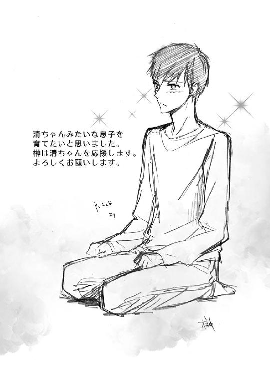
著者
流星香
Seika Nagare
９月28日生まれ、天秤座、Ｂ型。大阪生まれ大阪育ちの、大阪在住大阪人。お祭り騒ぎ大好きな、明るく正しい子どもの味方である♡
戦国時代ファンタジーでデビュー。ファンタジー作家として、これまでに多数の著作を発表していて、西洋風、現代モノ等、守備範囲はファミレスのように品揃えが豊富である。
お茶の時間をこよなく愛し、綺麗で美味しいお菓子からたくさんの元気をもらっている♡
イラスト
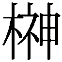空也
Kuya Sakaki
東京在住。
今回本文を読ませていただいて切なさに泣いてしまったんですけども、周りに誰もいなかったので涙駄々漏れのまま最後まで一気に読みました。
ビジュアル的には酷いものでしたが、そういう感情丸出し状態って結構楽しいものですね。
個室の用意がある方はぜひお試しを。
電子版 ビーズログ文庫
お庭番望月蒼司朗参る！
溜まった穢れと大祓
著者／流星香
イラスト／空也
2013年6月28日電子版（EPUB3）ver.1.0制作
発行者 浜村弘一
発行所 株式会社 エンターブレイン
http://www.enterbrain.co.jp/
デザイン 永野友紀子（Zapp!）
(c)2010 Seika NAGARE
PUBLISHED BY ENTERBRAIN, INC.
本電子書籍はビーズログ文庫『お庭番望月蒼司朗参る！ 溜まった穢れと大祓』
（2010年4月27日発行 初刷）を元にして制作しております。